ACT Mathematics Tests 2024
Welcome to Our Site
I greet you this day,
These are the solutions to the American College Testing (ACT) Mathematics Tests.
If you find these resources valuable and if any of these resources were helpful in your passing the
the test, please consider making a donation:
Cash App: $ExamsSuccess or
cash.app/ExamsSuccess
PayPal: @ExamsSuccess or
PayPal.me/ExamsSuccess
Venmo: @ExamsSuccess or
Venmo.com/u/ExamsSuccess
Your donation is appreciated.
Comments, ideas, areas of improvement, questions, and constructive criticisms are welcome.
Feel free to contact me. Please be positive in your message.
I wish you the best.
Thank you.
MATHEMATICS TEST
60 Minutes — 60 Questions
DIRECTIONS: Solve each problem, choose the correct answer, and then fill in the corresponding oval on your
answer document.
Do not linger over problems that take too much time.
Solve as many as you can; then return to the others in the time you have left for this test.
You are permitted to use a calculator on this test. You may use your calculator for any problems you choose, but
some of the problems may best be done without using a calculator.
Note: Unless otherwise stated, all of the following should be assumed.
(1.) Illustrative figures are NOT necessarily drawn to scale.
(2.) Geometric figures lie in a plane.
(3.) The word line indicates a straight line.
(4.) The word average indicates arithmetic mean.
What was the associate's average daily commission for these 5 days?
$ A.\:\: \$40 \\[3ex] B.\:\: \$41 \\[3ex] C.\:\: \$44 \\[3ex] D.\:\: \$45 \\[3ex] E.\:\: \$46 \\[3ex] $
Average implies Arithmetic Mean
$20 on Monday and Tuesday (2 days)
$60 on Wednesday, Thursday, and Friday (3 days)
$ Average = \bar{x} = \dfrac{\Sigma x}{n} \\[5ex] = \dfrac{(20 \cdot 2) + (60 \cdot 3)}{5} \\[5ex] = \dfrac{40 + 180}{5} \\[5ex] = \dfrac{220}{5} \\[5ex] = \$44 $
What is the measure of $\angle ACD$?
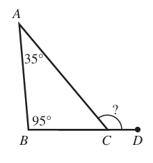
$ F.\;\; 95^\circ \\[3ex] G.\;\; 125^\circ \\[3ex] H.\;\; 130^\circ \\[3ex] J.\;\; 140^\circ \\[3ex] K.\;\; 145^\circ \\[3ex] $
$ \angle ACD = \angle BAC + \angle ABC \quad\dots\text{exterior angle of a triangle = sum of the two interior opposite angles.} \\[3ex] \angle ACD = 35 + 95 \\[3ex] = 130^\circ $
The shipping and handling fee is $5 total, regardless of the number of dog collars ordered.
Which of the following equations represents the relationship between x, the number of dog collars ordered, and y, Wally's total bill in dollars?
$ A.\;\; y = \dfrac{x}{5} \\[5ex] B.\;\; y = 4x \\[3ex] C.\;\; y = 9x \\[3ex] D.\;\; y = 4x + 5 \\[3ex] E.\;\; y = 5x + 4 \\[3ex] $
Cost for dog collars @ $4 per dog collar = $4 \cdot x = 4x$
Shipping and Handling Fee = $5
∴ $y = 4x + 5$
What is the area, in square kilometers, of this rectangle?
$ F.\;\; 16 \\[3ex] G.\;\; 24 \\[3ex] H.\;\; 32 \\[3ex] J.\;\; 60 \\[3ex] K.\;\; 96 \\[3ex] $
$ \text{width} = 6\;km \\[3ex] \text{length} = 4 + 2\cdot \text{width} \\[3ex] = 4 + 2(6) \\[3ex] = 4 + 12 \\[3ex] = 16\;km \\[5ex] \text{Area} = \text{length} \cdot \text{width} \\[3ex] = 16 \cdot 6 \\[3ex] = 96\;km^2 $
$ |4 - 3| - |2 - 5| \\[3ex] |1| - |-3| \\[3ex] 1 - 3 \\[3ex] -2 $
$ F.\;\; 2p - 5q \\[3ex] G.\;\; 2p - q \\[3ex] H.\;\; 5p - 8q \\[3ex] J.\;\; 6p - 5q \\[3ex] K.\;\; 6p - q \\[3ex] $
$ (8p - 3q) - (2q + 6p) \\[3ex] 8p - 3q - 2q - 6p \\[3ex] 2p - 5q $
$ A.\;\; 45 \\[3ex] B.\;\; 75 \\[3ex] C.\;\; 80 \\[3ex] D.\;\; 100 \\[3ex] E.\;\; 133 \\[3ex] $
400 miles per hour implies 400 miles in 1 hour
60 minutes = 1 hour
$ \underline{\text{Unity Fraction Method}} \\[3ex] \text{Set up units: } 300\;miles * \dfrac{...\;hour}{...\;miles} * \dfrac{...\;minutes}{...\;hour} \\[5ex] \text{Set up measurements and units: } 300\;miles * \dfrac{1\;hour}{400\;miles} * \dfrac{60\;minutes}{1\;hour} \\[5ex] = 45\;minutes $
$ F.\;\; x^{14} \\[4ex] G.\;\; x^{40} \\[4ex] H.\;\; x^{10,000} \\[4ex] J.\;\; 4x^6 \\[4ex] K.\;\; 4x^9 \\[4ex] $
$ \left(x^{10}\right)^4 \\[4ex] = x^{10 * 4} \quad\dots\text{Law 5 Exp} \\[4ex] = x^{40} $
$ A.\;\; f(x) = x^2 - 7 \\[3ex] B.\;\; f(x) = x^2 + 7 \\[3ex] C.\;\; f(x) = x - 5 \\[3ex] D.\;\; f(x) = 4x + 9 \\[3ex] E.\;\; f(x) = 9x + 4 \\[3ex] $
$ y = f(x) \\[3ex] f(x) = y \\[3ex] f(4) = 9 \\[3ex] \implies \\[3ex] x = 4 \\[3ex] y = 9 \\[3ex] \underline{Test\;\;each\;\;option} \\[3ex] Option\;A \\[3ex] f(x) = x^2 - 7 \\[3ex] f(4) = 4^2 - 7 \\[3ex] = 16 - 7 \\[3ex] = 9 \\[3ex] $ Option A is the correct answer.
On each day of school after that, he gave the students 6 new spelling words.
How many new spelling words had he given the students by the end of the 30th day of school?
$ F.\;\; 174 \\[3ex] G.\;\; 180 \\[3ex] H.\;\; 183 \\[3ex] J.\;\; 189 \\[3ex] K.\;\; 195 \\[3ex] $
1st day: 9 new spelling words
2nd day: 6 new spelling words, total = 9 + 6 = 15 new spelling words
3rd day: 6 new spelling words, total = 9 + 6(2) = 9 + 12 = 21 new spelling words
4th day: 6 new spelling words, total = 9 + 6(3) = 9 + 18 = 27 new spelling words
This is an Arithmetic Sequence
$ a = 9 \\[3ex] d = 6 \\[3ex] n = 30 \\[3ex] AS_n = a + d(n - 1) \\[5ex] AS_{30} = 9 + 6(30 - 1) \\[5ex] = 9 + 6(29) \\[3ex] = 9 + 174 \\[3ex] = 183 $
$ A.\;\; \dfrac{16}{3} \\[5ex] B.\;\; \dfrac{32}{3} \\[5ex] C.\;\; \dfrac{37}{3} \\[5ex] D.\;\; \dfrac{38}{3} \\[5ex] E.\;\; \dfrac{52}{3} \\[5ex] $
$ \dfrac{3x - 6}{2} + 5 = 18 \\[5ex] \dfrac{3x - 6}{2} = 18 - 5 \\[5ex] \dfrac{3x - 6}{2} = 13 \\[5ex] 3x - 6 = 2(13) \\[3ex] 3x - 6 = 26 \\[3ex] 3x = 26 + 6 \\[3ex] 3x = 32 \\[3ex] x = \dfrac{32}{3} \\[5ex] $ Check
| LHS | RHS |
|---|---|
| $ \dfrac{3x - 6}{2} + 5 \\[5ex] \dfrac{3\left(\dfrac{32}{3}\right) - 6}{2} + 5 \\[8ex] \dfrac{32 - 6}{2} - 5 \\[5ex] \dfrac{26}{2} - 5 \\[5ex] 13 - 5 \\[3ex] 8 $ | 18 |
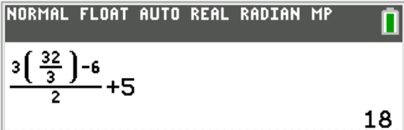
She sees mile marker 117 at noon, and exactly 20 minutes later she sees mile marker 97.
What is the average speed, in miles per hour, of their car over these 20 minutes.
$ F.\;\; 23.4 \\[3ex] G.\;\; 39 \\[3ex] H.\;\; 60 \\[3ex] J.\;\; 70 \\[3ex] K.\;\; 100 \\[3ex] $
At noon, Mia sees mile marker 117
Then, after 20 minutes, she sees mile marker 97
This implies that her mother drove 117 − 97 = 20 miles in 20 minutes
$ distance = 20\;miles \\[3ex] time = 20\;minutes \\[3ex] speed = \dfrac{distance}{time} \\[5ex] = \dfrac{20}{20} \\[5ex] = 1\;mile/minute \\[3ex] $ On average, Mia's mother drove 1 mile in 1 minute.
In other words, her average speed is 1 mile per minute.
But the question wants us to calculate the speed in miles per hour
$ 60\;minutes = 1\;hour \\[3ex] 1\;mile\;\;per\;\;minute = ?\;mile\;\;per\;\;hour \\[3ex] \underline{\text{Unity Fraction Method}} \\[3ex] \text{Set up units: } \dfrac{1\;mile}{minute} * \dfrac{...\;minute}{...\;hour} \\[5ex] \text{Set up measurements and units: } \dfrac{1\;mile}{minute} * \dfrac{60\;minute}{1\;hour} \\[5ex] = 60\;miles/hour \\[3ex] $ On average, Mia's mother drove 60 miles in 1 hour.
Her average speed is 60 miles per hour. (60 mph)
Lines l, p, and q intersect at a single point.
Which of the following congruence statements must be true?
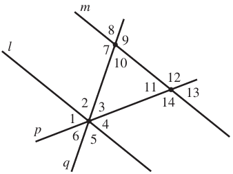
$ A.\;\; \angle 1 \cong \angle 5 \\[3ex] B.\;\; \angle 2 \cong \angle 1 \\[3ex] C.\;\; \angle 3 \cong \angle 10 \\[3ex] D.\;\; \angle 4 \cong \angle 2 \\[3ex] E.\;\; \angle 5 \cong \angle 8 \\[3ex] $
$ \angle 5 \cong \angle 8 \quad\dots\text{alternate exterior angles are congruent} $
Exactly halfway along this highway section is a road sign.
What are the coordinates of the road sign?
$ F.\;\; (30, 25) \\[3ex] G.\;\; (60, 50) \\[3ex] H.\;\; (60, 75) \\[3ex] J.\;\; (70, 65) \\[3ex] K.\;\; (75, 60) \\[3ex] $
The coordinates of the road sign is found by the Midpoint Formula.
$ Endpoint\;1 = (30, 50) \\[3ex] x_1 = 30 \\[3ex] y_1 = 50 \\[3ex] Endpoint\;2 = (90, 100) \\[3ex] x_2 = 90 \\[3ex] y_2 = 100 \\[3ex] \text{Midpoint} = \left(\dfrac{x_1 + x_2}{2}, \dfrac{y_1 + y_2}{2}\right) \\[5ex] = \left(\dfrac{30 + 90}{2}, \dfrac{50 + 100}{2}\right) \\[5ex] = \left(\dfrac{120}{2}, \dfrac{150}{2}\right) \\[5ex] = (60, 75) $
They have decided to spend $150 for a light and sound show, $400 for refreshments, and $50 for decorations.
These are the only expenses.
Given that the Student Council estimates 500 students will attend the dance, what should be the price, per student, for admission to the dance if the Student Council wants to raise as close as possible to $300 after paying expenses?
$ A.\;\; \$0.60 \\[3ex] B.\;\; \$1.20 \\[3ex] C.\;\; \$1.67 \\[3ex] D.\;\; \$1.80 \\[3ex] E.\;\; \$3.33 \\[3ex] $
Total Expenses = $150 + $400 + $50 = $600
Expected Profit = $300
Expected Income = $600 + $300 = $900
Expected Number of students = 500
Price per student to generate expected income = 900 ÷ 500 = $1.80
All units are given in feet.
Which of these shapes has the greatest area?

F. is a circle with radius, 1 unit
G. is a square with apothem, 1 unit
H. is a square with radius, 1 unit
J. is an octagon with radius, 1 unit
K. is an octagon with apothem, 1 unit
As the number of sides of the polygon increases, the shape becomes more circular, making the area approach that of a circle.
This typically implies that the area of the circle is greater than the area of the octagon.
So, options J. and K. are out.
For the same radius of 1 unit, a circle has a greater area than a square because a circle encloses the maximum area possible for a given perimeter due to its continuous curvature, while a square has corners that do not use the radius as efficiently.
So, option H, is out.
We are now left with the two options of F. and G.
For the Square: The apothem is a shorter distance within the square (from center to midpoint of a side) which allows for a longer side length.
For the Circle: The radius of the circle defines the circle's circumference, leading to a smaller enclosed area when compared to the larger side length of the square.
Hence, a square with an apothem of 1 unit has a greater area than a circle with a radius of 1 unit.
Option F. is out.
This implies that the correct option is G.
Student: Mr. C, I want to see these areas worked out so I know the correct option.
Teacher: No problem. We shall work it out.
However, please note that each question on the ACT is limited to about 1 minute.
Working it out will take more than a minute.
So, keep that in mind when taking your ACT.
$ \underline{\text{Option F: Circle}} \\[3ex] r = 1\;unit \\[3ex] A = \pi r^2 \\[3ex] A = \pi \cdot (1)^2 \\[4ex] A = 3.141592654\;square\;\;units \\[5ex] \underline{\text{Option G: Square}} \\[3ex] a = 1\;unit \\[3ex] L = 2a = 2(1) = 2 \\[3ex] A = L^2 = 2^2 \\[3ex] A = 4\;square\;\;units \\[5ex] \underline{\text{Option H: Square}} \\[3ex] r = 1\;unit \\[3ex] \implies\;\;4\;\;Right\;\;\triangle s \\[3ex] Area\;\;of\;\;1\;\;Right\;\;\triangle \\[3ex] b = r = 1\;cm \\[3ex] h = 1\;cm \\[3ex] A = \dfrac{1}{2} \cdot b \cdot h \\[5ex] A = \dfrac{1}{2} \cdot 1 \cdot 1 \\[5ex] A = \dfrac{1}{2}\;units \\[5ex] Area\;\;of\;\;4\;\;Right\;\;\triangle s \\[3ex] A = \dfrac{1}{2} \cdot 4 \\[5ex] A = 2\;square\;\;units \\[5ex] \underline{\text{Option J: Octagon}} \\[3ex] r = 1\;unit \\[3ex] n = 8 \\[3ex] A = \dfrac{\pi r^2}{2}\sin\left(\dfrac{360^\circ}{n}\right) \\[7ex] A = \dfrac{\pi \cdot (1)^2}{2}\sin\left(\dfrac{360^\circ}{8}\right) \\[7ex] A = \dfrac{\pi}{2}\sin 45^\circ \\[5ex] A = 1.110720735\;square\;\;units \\[5ex] \underline{\text{Option K: Octagon}} \\[3ex] a = 1\;unit \\[3ex] A = \dfrac{\pi a^2}{\cos^2\left(\dfrac{180^\circ}{n}\right)} \sin\left(\dfrac{360^\circ}{n}\right) \\[7ex] A = \dfrac{\pi \cdot (1)^2}{\cos^2\left(\dfrac{180^\circ}{8}\right)} \sin\left(\dfrac{360^\circ}{8}\right) \\[7ex] A = \dfrac{\pi\sin(45^\circ)}{\cos^2(22.5^\circ)} \\[7ex] A = 2.602580569\;square\;\;units \\[3ex] $ The results further confirm that Option G. is the correct answer.
In the 1st matrix, the row corresponding to each student gives the counts of the letter grades earned by that student.
The second matrix gives the point value of each letter grade.

The grade point average of each student is the total number of grade points earned by that student divided by that student's total number of class credits.
To the nearest 0.01, what is Ann's grade point average?
$ A.\;\; 1.92 \\[3ex] B.\;\; 2.00 \\[3ex] C.\;\; 3.00 \\[3ex] D.\;\; 3.83 \\[3ex] E.\;\; 4.00 \\[3ex] $

$ \underline{Ann} \\[3ex] Grade\;\;Point\;\;Average \\[3ex] = \dfrac{\Sigma \text{Number of Grade Points}}{\Sigma \text{Number of class credits}} \\[5ex] = \dfrac{1(5) + 3(4) + 2(3) + 0(2) + 0(0)}{6(1)} \\[5ex] = \dfrac{5 + 12 + 6}{6} \\[5ex] = \dfrac{23}{6} \\[5ex] = 3.833333333 \\[3ex] \approx 3.83 \quad\dots\text{to the nearest 0.01} \\[3ex] $ Student: We were given the grades for 5 classes
But you used the number of credits for 6 classes
May you please explain?
Teacher: Nice observation.
The question specified 6 classes of 1 credit each.
We have to use what the question gave us.
Besides, if you decide to divide by 5(1), the answer is not listed in the option.
Be it as it may, we have to use what we are given.
At what points does the circle intersect the x-axis?
$ F.\;\; (-2, 0) \;\;and\;\; (2, 0) \\[3ex] G.\;\; (-4, 0) \;\;and\;\; (4, 0) \\[3ex] H.\;\; (-8, 0) \;\;and\;\; (8, 0) \\[3ex] J.\;\; (-16, 0) \;\;and\;\; (16, 0) \\[3ex] K.\;\; (-32, 0) \;\;and\;\; (32, 0) \\[3ex] $
Based on the Standard Form of the Equation of a Circle, compare: $(x - h)^2 + (y - k)^2 = r^2$ with $x^2 + y^2 = 16$
This implies that:
$ x^2 + y^2 = 16 \\[4ex] (x - 0)^ + (y - 0)^2 = 16 \\[4ex] \implies \\[3ex] center = (h, k) = (0, 0) \\[3ex] r^2 = 16 \\[4ex] r = \pm \sqrt{16} \\[3ex] r = \pm 4 \\[3ex] $ The radius cannot be a negative number.
However, we shall consider the two values in finding the intersection on the x-axis.
 This implies that:
This implies that: Intersecion on the x-axis = (-4, 0) and (4, 0)
JoAnna has already driven 180 miles at an average speed of 60 miles per hour.
What is the minimum average speed, in miles per hour, that JoAnna can drive for the remainder of the route and have a driving time of 9 hours for the entire trip?
$ A.\;\; 45 \\[3ex] B.\;\; 50 \\[3ex] C.\;\; 55 \\[3ex] D.\;\; 60 \\[3ex] E.\;\;\text{Cannot be determined from the given information} \\[3ex] $
$ s...t...d \implies speed \cdot time = distance \\[3ex] \underline{\text{Entire Journey}} \\[3ex] Distance = 450\;miles \\[3ex] Time = 9\;hours \\[5ex] \underline{\text{Already Driven}} \\[3ex] Distance = 180\;miles \\[3ex] Speed = 60\;miles\;per\;hour \\[5ex] Time = \dfrac{Distance}{Speed} = \dfrac{180}{60} = 3\;hours \\[5ex] \underline{\text{Remaining Journey}} \\[3ex] Distance = 450 - 180 = 270\;miles \\[3ex] Time = 9 - 3 = 6\;hours \\[3ex] Speed = \dfrac{Distance}{Speed} \\[5ex] Speed = \dfrac{270}{6} \\[5ex] Speed = 45\text{miles per hour} \\[3ex] $ The minimum average speed that JoAnna can drive for the remainder of the route and have a driving time of 9 hours for the entire trip is 45 miles per hour.
$ F.\;\; 18 \\[3ex] G.\;\; 23 \\[3ex] H.\;\; 28 \\[3ex] J.\;\; 30 \\[3ex] K.\;\; 39 \\[3ex] $
Due to the fact that one minute is allocated to each question on the ACT (60 minutes for 60 questions), it is better to check the solution to this question by their answer options.
So, let us check and eliminate until we get the answer.
$ \underline{Option\;F} \\[3ex] 18 \div 5 = 3 \;R\; 3 \; \checkmark \\[3ex] 18 \div 6 = 3 \;R\;0 \;\text{remainder is 0, not 4} \\[3ex] NEXT \\[5ex] \underline{Option\;G} \\[3ex] 23 \div 5 = 4 \;R\; 3 \; \checkmark \\[3ex] 23 \div 6 = 3 \;R\; 5 \;\text{remainder is 3, not 4} \\[3ex] NEXT \\[5ex] \underline{Option\;H} \\[3ex] 28 \div 5 = 5 \;R\; 3 \; \checkmark \\[3ex] 28 \div 6 = 4 \;R\; 4 \; \checkmark \\[3ex] STOP \\[3ex] $ Option H is the correct answer.
This is the answer because the answer choices are in ascending order.
Student: Is there another way to do this question without checking by the answer options?
Teacher: Yes, we can do it: Modular Arithmetic
However, I think it takes more than a minute to do.
$ Let: \\[3ex] dividend = d \\[3ex] quotient = q \\[3ex] 1st:\;\; \text{Remainder of 3 when divided by 5} \\[3ex] d \equiv 3 \mod 5...cong.(1) \\[5ex] 2nd:\;\; \text{Remainder of 4 when divided by 6} \\[3ex] d \equiv 4 \mod 6 ...cong.(2) \\[5ex] \implies \\[3ex] d = 6q + 4 ...eqn.(1) \\[3ex] Substitute\;\;eqn.(1) \;\;for\;\;d\;\;in\;\;cong.(1) \\[3ex] 6q + 4 \equiv 3 \mod 5 \\[3ex] \text{Test positive integers for q beginning from the first positive integer} \\[3ex] 6(1) + 4 = 10 \equiv 0 \mod 5...Not\;\;3 \\[3ex] 6(2) + 4 = 16 \equiv 1 \mod 5...Not\;\;3 \\[3ex] 6(3) + 4 = 22 \equiv 2 \mod 5...Not\;\;3 \\[3ex] 6(4) + 4 = 28 \equiv 3 \mod 5 \;\checkmark \\[3ex] \implies \\[3ex] d = 28 $
Yesterday, there was no snow on the ground at 8:00 a.m. when snow began to fall.
Snow fell from 8:00 a.m. to 8:00 p.m. at a constant rate of $\dfrac{3}{4}$ inch per hour.
Kate built a snowman made of 2 spherical snowballs, with the smaller placed on top of the larger.
When she built the snowman, the diameter of the larger snowball was 3 times the diameter of the smaller snowball.
Today, the day after she built the snowman, there is a 50% chance of rain.
If it rains today, then there is a 60% chance that the snowman will melt.
If it does not rain today, then there is a 10% chance the snowman will melt.
At how many hours after 8:00 a.m. yesterday was there exactly 6 inches of snow on the ground?
$ A.\;\; 0.75 \\[3ex] B.\;\; 4.5 \\[3ex] C.\;\; 6 \\[3ex] D.\;\; 6.75 \\[3ex] E.\;\; 8 \\[3ex] $
Let the number of hours after 8:00 am be h
at a constant rate of $\dfrac{3}{4}$ inch per hour ⇒ $\dfrac{3}{4}h$
until there was 6 inches of snow on the ground.
$ \dfrac{3}{4}h = 6 \\[5ex] 3h = 6(4) \\[3ex] 3h = 24 \\[3ex] h = \dfrac{24}{3} \\[5ex] h = 8\text{ hours} $
When Kate built the snowman, what was the diameter, in inches, of the smaller snowball?
$ F.\;\; 4 \\[3ex] G.\;\; 6 \\[3ex] H.\;\; 12 \\[3ex] J.\;\; 54 \\[3ex] K.\;\; 108 \\[3ex] $
Let the:
diameter of the larger snowball = D
circumference of the larger snowball = C
diameter of the smaller snowball = d
$ \underline{\text{Larger Snowball}} \\[3ex] C = \pi D ...formula \\[3ex] C = 36\pi ...given \\[3ex] C = C \implies \\[3ex] \pi D = 36\pi \\[3ex] D = 36\;inches \\[3ex] \underline{\text{Smaller Snowball}} \\[3ex] 3d = D \\[3ex] d = \dfrac{D}{3} \\[5ex] d = \dfrac{36}{3} \\[5ex] d = 12\;inches $
$ A.\;\; 30\% \\[3ex] B.\;\; 35\% \\[3ex] C.\;\; 50\% \\[3ex] D.\;\; 60\% \\[3ex] E.\;\; 70\% \\[3ex] $
This is a case of Conditional Probability
It may rain.
It may not rain.
If it rains, the snow may melt.
If it does not rain, the snow may melt.
Let us discuss the conditions.
The probability that rain will occur = 50% = 0.5
The probability that rain will not occur = 100% − 50% = 50% = 0.5 ...Complementary Rule
The probability that the snow will melt if it rains = 60% = 0.6
The probability that the snow will not melt if it rains = 1 − 0.6 = 0.4 ...Complementary Rule
The probability that the snow will melt if it does not rain = 10% = 0.1
The probability that the snow will not melt if it does not rain = 1 − 0.1 = 0.9 ...Complementary Rule
The question asked for the probability that the snow will melt, so we are going to look at the conditions that the snow will melt.
$ P(Rain) = 0.5 \\[3ex] P(Rain') = 0.5 \\[3ex] P(Melts | Rain) = 0.6 \\[3ex] P(Melts | Rain') = 0.1 \\[3ex] P(Melts) = P(Rain) \cdot P(Melts | Rain) + P(Rain') \cdot P(Melts | Rain') \\[3ex] = 0.5(0.6) + 0.5(0.1) \\[3ex] = 0.3 + 0.05 \\[3ex] = 0.35 $
From the same lake 3 weeks later, the biologists collected a random sample of 15 fish, 5 of which were tagged.
Let p be the proportion of the fish in the lake that are tagged.
What is p̂, the sample proportion, for this sample?
$ F.\;\; \dfrac{1}{3} \\[5ex] G.\;\; \dfrac{1}{5} \\[5ex] H.\;\; \dfrac{1}{10} \\[5ex] J.\;\; \dfrac{1}{13} \\[5ex] K.\;\; \dfrac{3}{10} \\[5ex] $
$ \underline{Sample} \\[3ex] n = 15 \\[3ex] x = 5 \\[3ex] \hat{p} = \dfrac{x}{n} \\[5ex] = \dfrac{5}{15} \\[5ex] = \dfrac{1}{3} $
If both watches are set correctly at noon, after how many hours will the times shown by the watches be exactly 1 hour apart?
$ A.\;\; 3\dfrac{3}{4} \\[5ex] B.\;\; 4 \\[3ex] C.\;\; 16 \\[3ex] D.\;\; 75 \\[3ex] E.\;\; 225 \\[3ex] $
Let us convert the minutes to hours because:
12 noon is the 12th hour and
1 hour apart is in hour
$ 2\dfrac{1}{2}\;minutes \\[5ex] = \dfrac{5}{2}\;minutes \\[5ex] = \dfrac{5}{2}\;minutes \cdot \dfrac{1\;hour}{60\;minutes} \\[5ex] = \dfrac{1}{24}\;hour \\[7ex] 1\dfrac{1}{4}\;minutes \\[5ex] = \dfrac{5}{4}\;minutes \\[5ex] = \dfrac{5}{4}\;minutes \cdot \dfrac{1\;hour}{60\;minutes} \\[5ex] = \dfrac{1}{48}\;hour \\[7ex] \text{Let the number of hours = x} \\[3ex] Gaining\;\;2\dfrac{1}{2}\;minutes \implies Gaining\;\;\dfrac{1}{24}\;hour \implies +\dfrac{1}{24}x\;hours \\[5ex] Losing\;\;1\dfrac{1}{4}\;minutes \implies Losing\;\;\dfrac{1}{48}\;hour \implies -\dfrac{1}{48}x\;hours \\[7ex] \text{both watches are set correctly at noon} \implies \\[3ex] 12 + \dfrac{1}{24}x \;\;and\;\; 12 - \dfrac{1}{48}x\;hours \\[7ex] \text{exactly 1 hour apart} \implies \\[3ex] \left(12 + \dfrac{1}{24}x\right) - \left(12 - \dfrac{1}{48}x\right) = 1 \\[5ex] 12 + \dfrac{1}{24}x - 12 + \dfrac{1}{48}x = 1 \\[5ex] \dfrac{x}{24} + \dfrac{x}{48} = 1 \\[5ex] \dfrac{2x + x}{48} = 1 \\[5ex] 3x = 1(48) \\[3ex] x = \dfrac{48}{3} \\[5ex] x = 16\;hours $
The difference between the volume of Prism A and the volume of Prism B is how many times the volume of Prism C?
| Prism | Length | Width | Height |
|---|---|---|---|
| A | 4 | 4 | 3 |
| B | 3 | 3 | 4 |
| C | 4 | 3 | 1 |
$ F.\;\; 0 \\[3ex] G.\;\; 1 \\[3ex] H.\;\; 5 \\[3ex] J.\;\; 8 \\[3ex] K.\;\; 12 \\[3ex] $
| Prism | Length | Width | Height | Volume = Length × Width × Height |
|---|---|---|---|---|
| A | 4 | 4 | 3 | 48 |
| B | 3 | 3 | 4 | 36 |
| C | 4 | 3 | 1 | 12 |
$ 48 - 36 = what \cdot 12 \\[3ex] 12 = what \cdot 12 \\[3ex] what = 1 $
$ A.\;\; -5 \\[3ex] B.\;\; 9 \\[3ex] C.\;\; 9i \\[3ex] D.\;\; \sqrt{53} \\[3ex] E.\;\; 2 - 7i \\[3ex] $
The complex conjugate of 2 + 7i is 2 − 7i
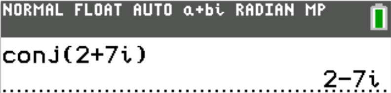
$ F.\;\; -29 \\[3ex] G.\;\; -27 \\[3ex] H.\;\; -20 \\[3ex] J.\;\; 23 \\[3ex] K.\;\; 25 \\[3ex] $
$ g(x) = x^2 - 2 \\[3ex] g(-3) = (-3)^2 - 2 \\[3ex] = 9 - 2 \\[3ex] = 7 \\[5ex] f(x) = 3x + 4 \\[3ex] f(g(-3)) = f(7) \\[3ex] = 3(7) + 4 \\[3ex] = 21 + 4 \\[3ex] = 25 $
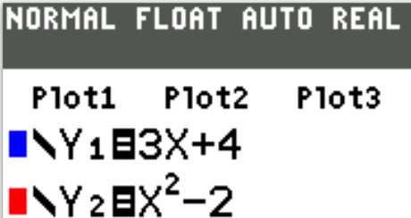
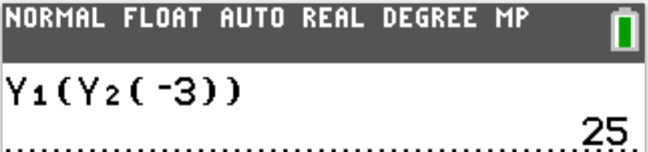
$ A.\;\; 9AB \\[3ex] B.\;\; 9A^2B^2 \\[4ex] C.\;\; 7A + 6AB^2 \\[4ex] D.\;\; 7A + 6B \\[3ex] E.\;\; 7A + 2B \\[3ex] $
$ \dfrac{21A^2B + 6AB^2}{3AB} \\[5ex] = \dfrac{3AB(7A + 2B)}{3AB} \\[5ex] = 7A + 2B $
Which of the following expressions is equivalent to $0.0002^n$
$ F.\;\; 2^{-2n} \\[4ex] G.\;\; 2^{-3n} \\[4ex] H.\;\; 2^n \times 10^{-n} \\[4ex] J.\;\; 2^n \times 10^{-3n} \\[4ex] K.\;\; 2^n \times 10^{-4n} \\[4ex] $
$ 0.0002^n \\[4ex] = \dfrac{0\color{darkblue}{.0002}^n}{\color{darkblue}{10000}^n} \\[6ex] = \dfrac{2^n}{(10^4)^n} \\[6ex] = \dfrac{2^n}{10^{4n}}...Law\;5...Exp \\[6ex] = 2^n \times 10^{-4n} ...Law\;6...Exp $
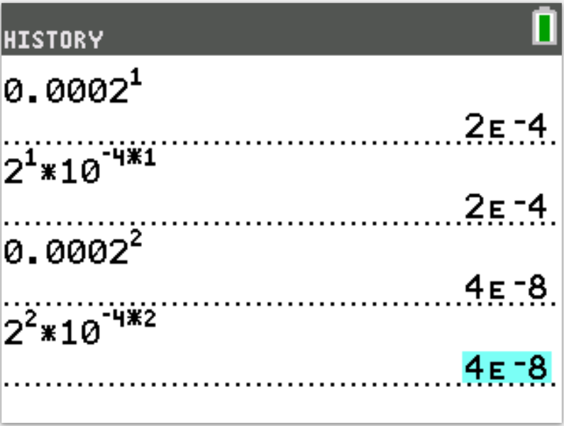

$ A.\;\; \dfrac{5}{8}, \;\; 0.6, \;\; 0.08 \\[5ex] B.\;\; 0.6, \;\; \dfrac{5}{8}, \;\; 0.08 \\[5ex] C.\;\; 0.6, \;\; 0.08, \;\; \dfrac{5}{8} \\[5ex] D.\;\; 0.08, \;\; \dfrac{5}{8}, \;\; 0.6 \\[5ex] E.\;\; 0.08, \;\; 0.6, \;\; \dfrac{5}{8} \\[5ex] $
$ 0.6, \;\; 0.08, \;\; \dfrac{5}{8} \\[5ex] 0.6, \;\; 0.08, \;\; 0.625 \\[3ex] 0.08 \lt 0.6 \lt 0.625 \\[3ex] \implies \\[3ex] 0.08, \;\; 0.6, \;\; \dfrac{5}{8} $
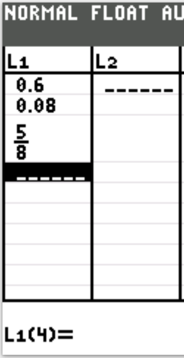


What is the probability that the number formed will be 99?
$ F.\;\; \dfrac{1}{27} \\[5ex] G.\;\; \dfrac{1}{9} \\[5ex] H.\;\; \dfrac{1}{9} \\[5ex] J.\;\; \dfrac{1}{4} \\[5ex] K.\;\; \dfrac{1}{3} \\[5ex] $
Selecting each digit from the set {2, 3, 9}
It's better to use a Punnett Square
|
$2nd\:\:Set\:\:\rightarrow$ $1st\:\:Set\:\:\downarrow$ |
2 | 3 | 9 |
|---|---|---|---|
| 2 | 22 | 23 | 29 |
| 3 | 32 | 33 | 39 |
| 9 | 92 | 93 | 99 |
$ P(99) = \dfrac{n(99)}{n(S)} \\[5ex] = \dfrac{1}{9} $
What is $\sin \theta$?
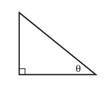
$ A.\;\; \dfrac{25}{39} \\[5ex] B.\;\; \dfrac{5}{8} \\[5ex] C.\;\; \dfrac{\sqrt{39}}{8} \\[5ex] D.\;\; 1 - \dfrac{5\sqrt{39}}{39} \\[5ex] E.\;\; \sqrt{1 - \left(\dfrac{5}{\sqrt{39}}\right)^2} \\[7ex] $
$ \underline{SOHCAHTOA} \\[3ex] \tan \theta = \dfrac{5}{\sqrt{39}} = \dfrac{opp}{adj} \\[5ex] \underline{Pythagorean\;\;Theorem} \\[3ex] hyp^2 = opp^2 + adj^2 \\[3ex] hyp^2 = 5^2 + \left(\sqrt{39}\right)^2 \\[4ex] hyp^2 = 25 + 39 \\[3ex] hyp^2 = 64 \\[3ex] hyp = \sqrt{64} \\[3ex] hyp = 8\;units \\[3ex] \sin\theta = \dfrac{opp}{hyp} \quad\dots\text{SOHCAHTOA} \\[5ex] \sin\theta = \dfrac{5}{8} $
$ F.\;\; y^3 + 24y^2 + 192y + 512 \\[3ex] G.\;\; y^3 + 16y + 512 \\[3ex] H.\;\; y^3 + 16y + 64 \\[3ex] J.\;\; y^3 + 512 \\[3ex] K.\;\; y^3 + 24 \\[3ex] $
Teacher: The answer is Option F.
Student: How do you know?
Just by looking at it?
Teacher: Yes...all other options do not have any term in y²
Student: But I would like to know how to expand it.
Teacher: Sure. We have at least two ways to do it.
But I recommend the process of eliminating incorrect options on the ACT due to the time limit of 1 minute per question.
This question takes about 2 seconds to do.
The remaining 58 seconds should be used for questions that may take more than a minute to solve.
$ \underline{\text{1st Approach: Pascal's Triangle}} \\[3ex] ~~~~~~~~~~~~~~~~~~~~~~~~~~~~~~~~~~~~~~~~~~~~~1 \\[3ex] ~~~~~~~~~~~~~~~~~~~~~~~1~~~~~~~~~~~~~~~~~~~~~~~~~~~~~~~~~~~~~~~~~~~~1 \\[3ex] ~~~~~~~~~~~~~~~~~~1~~~~~~~~~~~~~~~~~~~~~~~~~~~~2~~~~~~~~~~~~~~~~~~~~~~~~~~~~~~~1 \\[3ex] ~~~~~~~~~~~~~1~~~~~~~~~~~~~~~~~~~~3~~~~~~~~~~~~~~~~~~~~~~~~~~~3~~~~~~~~~~~~~~~~~~~~~~~~~~~1 \\[5ex] \implies \\[3ex] (y + 8)^3 \\[4ex] = y^3 + 3y^2(8) + 3y(8)^2 + 8^3 \\[4ex] = y^3 + 24y^2 + 192y + 512 \\[5ex] \underline{\text{2nd Approach: Algebraic Expansion}} \\[3ex] (y + 8)^3 = (y + 8)^2 \cdot (y + 8) \\[3ex] (y + 8)^2 = (y + 8)(y + 8) \\[3ex] = y^2 + 8y + 8y + 64 \\[3ex] = y^2 + 16y + 64 \\[5ex] (y + 8)^2 \cdot (y + 8) \\[3ex] = (y^2 + 16y + 64)(y + 8) \\[3ex] = y^3 + 8y^2 + 16y^2 + 128y + 64y + 512 \\[3ex] = y^3 + 24y^2 + 192y + 512 $
A new list of 4 numbers has the same first 3 numbers as the original list, but the fourth number in the original list is 50, and the fourth number in the new list is 70.
What is the average of this new list of numbers?
$ A.\;\; 83.5 \\[3ex] B.\;\; 88.0 \\[3ex] C.\;\; 93.0 \\[3ex] D.\;\; 95.0 \\[3ex] E.\;\; 96.8 \\[3ex] $
$ \underline{Original\;\;List} \\[3ex] \bar{x} = 88 \\[3ex] n = 4 \\[3ex] \Sigma x = \bar{x} \cdot n \\[3ex] \Sigma x = 88(4) \\[3ex] \Sigma x = 352 \\[3ex] 4th\;\;number = 50 \\[3ex] \Sigma three = 352 - 50 \\[3ex] \Sigma three = 302 \\[5ex] \underline{New\;\;List} \\[3ex] \Sigma three = 302 \\[3ex] 4th\;\;number = 70 \\[3ex] \Sigma x = \Sigma four = 302 + 70 \\[3ex] \Sigma x = 372 \\[3ex] \bar{x} = \dfrac{\Sigma x}{n} \\[5ex] \bar{x} = \dfrac{372}{4} \\[5ex] \bar{x} = 93 $

$ -2x + 7 \ge 19 \\[3ex] -2x \ge 19 - 7 \\[3ex] -2x \ge 12 \\[3ex] x \le \dfrac{12}{-2} \\[5ex] x \le -6 \\[3ex] $ Check
| LHS | RHS |
|---|---|
| $ Let\;\; x = -7 \\[3ex] -2x + 7 \\[3ex] -2(-7) + 7 \\[3ex] 14 + 7 \\[3ex] 21 $ | 19 |
| 21 ≥ 19 | |
Which of the following represents the area, in square centimeters, of the shaded region?

$ A.\;\; 32 - 8\pi \\[3ex] B.\;\; 32 - 16\pi \\[3ex] C.\;\; 32 + 16\pi \\[3ex] D.\;\; 64 - 16\pi \\[3ex] E.\;\; 64 + 16\pi \\[3ex] $
Area of the shaded region = Area of the Square − Area of the Circle
$ \underline{Square} \\[3ex] apothem,\;a = 4\;cm \\[3ex] Length,\;L = 2a = 2(4) = 8\;cm \\[3ex] Area,\;A = L^2 \\[3ex] A = 8^2 \\[3ex] A = 64\;cm^2 \\[5ex] \underline{Circle} \\[3ex] radius,\;r = 4\;cm \\[3ex] Area,\;A = \pi r^2 \\[4ex] A = \pi(4)^2 \\[4ex] A = 16\pi\;cm^2 \\[5ex] \implies \\[3ex] \text{Area of the shaded region} = 64 - 16\pi $
The width of Rectangle A is 3 inches less than the width of Rectangle B.
If it can be determined, how many inches less is the perimeter of Rectangle A than the perimeter of Rectangle B?
$ F.\;\; 3 \\[3ex] G.\;\; 6 \\[3ex] H.\;\; 9 \\[3ex] J.\;\; 12 \\[3ex] K.\;\;\text{Cannot be determined from the given information} \\[3ex] $
| Rectangle A | Rectangle B |
|---|---|
| $ Length = L_A \\[4ex] Width = W_A \\[4ex] Perimeter = P_A \\[5ex] L_A = L_B \\[4ex] W_A = W_B - 3 \\[4ex] P_A = 2(L_A + W_A) \\[4ex] = 2(L_B + W_B - 3) \\[4ex] = 2L_B + 2W_B - 6 $ | $ Length = L_B \\[4ex] Width = W_B \\[4ex] Perimeter = P_B \\[5ex] P_B = 2(L_B + W_B) \\[4ex] = 2L_B + 2W_B $ |
|
How many inches less is the perimeter of Rectangle A than the perimeter of Rectangle B?
$ P_B - P_A \\[4ex] = (2L_B + 2W_B) - (2L_B + 2W_B - 6) \\[4ex] = 2L_B + 2W_B - 2L_B - 2W_B + 6 \\[4ex] = 6 $ |
|
$ A.\;\; x^3 \\[4ex] B.\;\; x^{\dfrac{63}{20}} \\[6ex] C.\;\; x^{\dfrac{9}{2}} \\[6ex] D.\;\; x^7 \\[4ex] E.\;\; x^{10} \\[4ex] $
$ \left(x^4\right)^{\dfrac{5}{4}}\left(x^5\right)^{\dfrac{2}{5}} \\[7ex] x^{4 * \dfrac{5}{4}} \cdot x^{5 * \dfrac{2}{5}} \quad\dots\text{Law 5 Exp} \\[7ex] x^5 \cdot x^2 \\[4ex] x^{5 + 2} \quad\dots\text{Law 1 Exp} \\[4ex] x^7 $
You cut it into 3 pieces: one is exactly 3 feet 6 inches long and another is exactly 2 feet 3 inches long, as shown below.
If each cut is exactly $\dfrac{1}{8}$ inch wide, how long, in feet and inches, is the third piece?
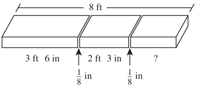
$ F.\;\; 2\;ft\;3\;in \\[3ex] G.\;\; 2\;ft\;2\dfrac{3}{4}\;in \\[5ex] H.\;\; 2\;ft\;2\dfrac{5}{8}\;in \\[5ex] J.\;\; 2\;ft\;\dfrac{3}{4}\;in \\[5ex] K.\;\; 2\;ft \\[3ex] $
To get the length of the 3rd piece, we need to consider:
1st: the length of the 1st piece
2nd: the length of the 2nd piece
3rd: the width of each cut, also known as the kerf. The kerf is the thickness (width) of the cut made by the blade. It is an important factor to consider when making accurate cuts.
We shall determine the sum of these cuts, and subtract the sum from the length of the lumber to get the length of the third piece.
$ \underline{Total\;\;Length\;\;of\;\;Cuts} \\[3ex] Length\;\;of\;\;1st\;\;Piece = 3\;ft\;6\;in \\[3ex] Length\;\;of\;\;2nd\;\;Piece = 2\;ft\;3\;in \\[3ex] Thickness\;\;of\;\;1st\;\;cut = \dfrac{1}{8} = 0.125\;in \\[5ex] Thickness\;\;of\;\;2nd\;\;cut = \dfrac{1}{8} = 0.125\;in \\[5ex] \begin{array}{c} 3ft\;\;\;6in \\ +\hspace{7em} \\ 2ft\;\;\;3in \\ +\hspace{7em} \\ ~~~~~~~0ft\;\;\;0.125in \\ +\hspace{7em} \\ ~~~~~~~0ft\;\;\;0.125in \\ \hline ~~~~~5ft\;\;\;9.25in \\ \hline \end{array} $
$ \underline{Length\;\;of\;\;3rd\;\;Piece} \\[3ex] \begin{array}{c} 8ft\;\;\;0in \\ -\hspace{7em} \\ ~~~~~5ft\;\;\;9.25in \\ \hline ~~~~~2ft\;\;\;2.75in \\ \hline \end{array} $
$ \text{Length of 3rd Piece} = 2ft\;\;\;2.75in \\[3ex] Convert\;\;decimal\;\;to\;\;fraction \\[3ex] 2.75 = 2 + 0.75 \\[3ex] 0.75 = \dfrac{75}{100} = \dfrac{3}{4} \\[5ex] \implies \\[3ex] \text{Length of 3rd Piece} = 2\;ft\;2\dfrac{3}{4}\;in $
Convert all inches to feet
$ \underline{\text{Unity Fraction Method}} \\[3ex] ...\;in * \dfrac{...\;ft}{...\;in} \\[5ex] 6\;in = \dfrac{6}{12}\;ft \\[5ex] 3\;in = \dfrac{3}{12}\;ft \\[5ex] \dfrac{1}{8}\;in = \dfrac{1}{8}\;in * \dfrac{1\;ft}{12\;in} = \dfrac{1}{96}\;in \\[5ex] $

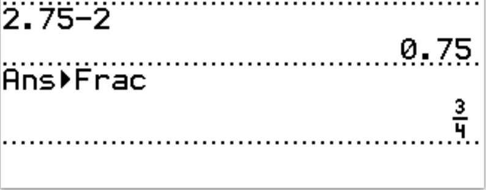
$\text{Length of 3rd Piece} = 2\;ft\;2\dfrac{3}{4}\;in$
Given that 1,000 people called during the promotion, how many callers received both a T-shirt and a concert ticket?
$ A.\;\; 2 \\[3ex] B.\;\; 5 \\[3ex] C.\;\; 35 \\[3ex] D.\;\; 200 \\[3ex] E.\;\; 350 \\[3ex] $
The question is asking for the Least Common Multiple (LCM) of 35 and 50 up until 1000
The colors besides red indicate the common factors that should be counted only one time.
Begin with them in the multiplication for the LCM.
Then, include the rest.
$ Numbers = 35, 50 \\[3ex] 35 = \color{black}{5} * 7 \\[3ex] 50 = 2 * \color{black}{5} * 5 \\[5ex] LCM = 2 * \color{black}{5} * 7 * 5 \\[3ex] LCM = 350 \\[3ex] $ The 350th person will receive both a T-shirt and a concert ticket
The 700th person will receive both a T-shirt and a concert ticket
The next person (700 + 350 = 1050th person) is more than 1000, hence only 2 people will receive both a T-shirt and a concert ticket.
You may also find the quotient of 1000 and 350 (do not include the remainder because human beings are whole number people).
1000 ÷ 350 = 2.857142857
Upon her arrival, she finds that 1 United States dollar is exchanged for x units of Country A’s currency.
How many units of Country A’s currency will Maria receive when she exchanges y United States dollars?
$ F.\;\; xy \\[3ex] G.\;\; 100xy \\[3ex] H.\;\; \dfrac{100}{x} \\[5ex] J.\;\; \dfrac{x}{y} \\[5ex] K.\;\; \dfrac{100}{y} \\[5ex] $
$ \$1 = x\;currency \\[3ex] \$y = ? \\[3ex] \underline{Unity\;\;Fraction\;\;Method} \\[3ex] \$y * \dfrac{x\;currency}{\$1} \\[5ex] xy\;currency $
Point D is on $\overline{BC}$, $m\angle ADC = 60^\circ,\;\;m\angle ABC = 30^\circ$, and BD = 100 feet.
What is the length, in feet, of $\overline{AC}$

$ A.\;\; 50 \\[3ex] B.\;\; \dfrac{100}{3} \\[5ex] C.\;\; \dfrac{200}{3} \\[5ex] D.\;\; 50\sqrt{3} \\[3ex] E.\;\; 200\sqrt{3} \\[3ex] $
$ Let: \\[3ex] |AC| = y \\[3ex] |CD| = x \\[5ex] \underline{\triangle ACD} \\[3ex] \angle CAD + \angle ADC + \angle ACD = 180^\circ ...sum\;\;of\;\;\angle s\;\;of\;\;a\;\;\triangle \\[3ex] \angle CAD + 60 + 90 = 180 \\[3ex] \angle CAD = 180 - 60 - 90 \\[3ex] \angle CAD = 30^\circ \\[5ex] \dfrac{x}{\sin 30^\circ} = \dfrac{y}{\sin 60^\circ}...Sine\;\;Law \\[5ex] x = \dfrac{y\sin 30}{\sin 60} \\[5ex] \underline{\triangle ACB} \\[3ex] \angle CAB + \angle ABC + \angle ACB = 180^\circ ...sum\;\;of\;\;\angle s\;\;of\;\;a\;\;\triangle \\[3ex] \angle CAB + 30 + 90 = 180 \\[3ex] \angle CAB = 180 - 30 - 90 \\[3ex] \angle CAB = 60^\circ \\[5ex] \angle CAB = \angle CAD + \angle DAB ...diagram \\[3ex] 60 = 30 + \angle DAB \\[3ex] \angle DAB = 60 - 30 \\[3ex] \angle DAB = 30^\circ \\[5ex] \dfrac{x + 100}{\sin 60^\circ} = \dfrac{y}{\sin 30^\circ} ...Sine\;\;Law \\[5ex] x + 100 = \dfrac{y\sin 60}{\sin 30} \\[5ex] x = \dfrac{y\sin 60}{\sin 30} - 100 \\[5ex] $ This is the updated diagram
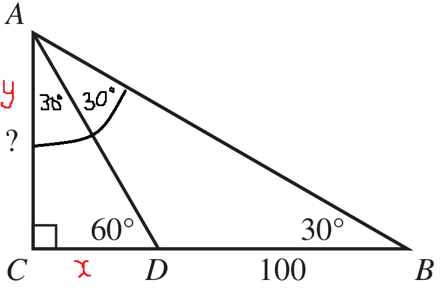
$ x = x \implies \\[3ex] \dfrac{y\sin 30}{\sin 60} = \dfrac{y\sin 60}{\sin 30} - 100 \\[5ex] y * \sin 30 * \dfrac{1}{\sin 60} = y * \sin 60 * \dfrac{1}{\sin 30} - 100 \\[5ex] \sin 30^\circ = \dfrac{1}{2}...Special\;\angle s \\[5ex] \dfrac{1}{\sin 30^\circ} = \dfrac{2}{1} = 2 \\[5ex] \sin 60^\circ = \dfrac{\sqrt{3}}{2}...Special\;\angle s \\[5ex] \dfrac{1}{\sin 60^\circ} = \dfrac{2}{\sqrt{3}} \\[5ex] \implies \\[3ex] y * \dfrac{1}{2} * \dfrac{2}{\sqrt{3}} = y * \dfrac{\sqrt{3}}{2} * \dfrac{2}{1} - 100 \\[5ex] \dfrac{y}{\sqrt{3}} = y\sqrt{3} - 100 \\[5ex] \sqrt{3}\left(\dfrac{y}{\sqrt{3}}\right) = \sqrt{3}\left(y\sqrt{3}\right) - \sqrt{3}(100) \\[5ex] y = 3y - 100\sqrt{3} \\[3ex] 100\sqrt{3} = 3y - y \\[3ex] 2y = 100\sqrt{3} \\[3ex] y = \dfrac{100\sqrt{3}}{2} \\[5ex] y = 50\sqrt{3} $
The table below defines a relation where the domain is represented by the x-values and the range is represented by the y-values.
| x | y |
|---|---|
|
3 7 1 3 4 2 |
6 9 5 4 5 8 |
Which of the following statements indicates whether this relation is a function of x and provides a valid reason?
F. It is, because the y-value is always greater than the x-value.
G. It is, because there are 5 distinct values in both the domain and the range.
H. It is not, because there are 2 different y-values paired with the x-value 3.
J. It is not, because there are 2 different x-values paired with the y-value 5.
K. It is not, because no equation can be written to model the relationship between x and y.
Two students can make two different grades on the same test... a Function
Two students can make the same grade on the same test... a Function
However, a student cannot make two different grades on the same test... Not a function
An input may not have more than one output in a function. In other words, a function is a relation in which each input has a unique output.
The input, x-value of 3 may not have output images of y-values of 6 and 4
Hence, the correct answer is Option H.
There are 3 juniors for each senior.
On an Algebra III test, 80% of the juniors and 70% of the seniors passed.
What percent of the students enrolled in Algebra III did NOT pass the test?
$ A.\;\; 22\dfrac{1}{2}\% \\[5ex] B.\;\; 24\dfrac{1}{6}\% \\[5ex] C.\;\; 25\% \\[3ex] D.\;\; 27\dfrac{1}{2}\% \\[5ex] E.\;\; 50\% \\[3ex] $
$ \underline{Algebra\;III\;\;Test} \\[3ex] Let: \\[3ex] \text{number of juniors} = x \\[3ex] \text{number of seniors} = y \\[3ex] Enrolled = x + y \\[3ex] \text{3 juniors for each senior} \implies x = 3y \\[3ex] \implies \\[3ex] Enrolled = 3y + y = 4y \\[5ex] 80\% = \dfrac{80}{100} = 0.8 \\[5ex] 70\% = \dfrac{70}{100} = 0.7 \\[5ex] \text{Passed: } 0.8x \\[3ex] \text{Did not pass: } x - 0.8x = 0.2x \\[5ex] \text{Passed: } 0.7y \\[3ex] \text{Did not pass: } y - 0.7y = 0.3y \\[5ex] \implies \\[3ex] \text{Did not pass: } = 0.2x + 0.3y \\[3ex] = 0.2(3y) + 0.3y \\[3ex] = 0.6y + 0.3y \\[3ex] = 0.9y \\[5ex] \text{Percent who did not pass} = \dfrac{\text{Number who did not pass}}{\text{Number of Enrolled Students}} * 100 \\[5ex] =\dfrac{0.9y}{4y} * 100 \\[5ex] = 22.5\% \\[3ex] = 22\dfrac{1}{2}\% $
At a local pet store, 50 shoppers were polled to see if they owned cats or dogs.
Among the polled shoppers, 31 owned at least 1 dog, 20 owned at least 1 cat, 7 owned at least 1 dog and at least 1 cat, and 6 owned neither a dog nor a cat.
$ F.\;\; 11 \\[3ex] G.\;\; 13 \\[3ex] H.\;\; 23 \\[3ex] J.\;\; 24 \\[3ex] K.\;\; 25 \\[3ex] $
Let the number of shoppers who own at least 1 cat = C
Let the number of shoppers who own at least 1 dog = D
Let us represent the information on a Venn Diagram

Those who own at least 1 dog but did NOT own at least 1 cat are those who own only dog = 31 − 7 = 24 shoppers.
What is the probability that the selected shopper owned at least 1 dog or cat?
$ A.\;\; \dfrac{7}{50} \\[5ex] B.\;\; \dfrac{13}{25} \\[5ex] C.\;\; \dfrac{27}{50} \\[5ex] D.\;\; \dfrac{19}{25} \\[5ex] E.\;\; \dfrac{22}{25} \\[5ex] $
Let the number of shoppers who own at least 1 cat = C
Let the number of shoppers who own at least 1 dog = D
$ n(S) = 50 \\[3ex] n(C) = 20 \\[3ex] n(D) = 31 \\[3ex] n(C \cap D) = 7 \\[3ex] n(C \cup D) = n(C) + n(D) - n(C \cap D) ...Addition\;\;Rule \\[3ex] = 20 + 31 - 7 \\[3ex] = 44 \\[5ex] P(C \cup D) = \dfrac{n(C \cup D)}{n(S)} \\[5ex] = \dfrac{44}{50} \\[5ex] = \dfrac{22}{25} $
Those who owned at least 1 dog were given 1 dog toy valued at $4, those who owned at least 1 cat were given 1 cat toy valued at $3, and those who owned neither were given a gift card with a dollar value of g.
A total dollar value of t was given to the shoppers.
Which of the following expressions gives the value of g in terms of t?
$ F.\;\; \dfrac{t}{6} - 177 \\[5ex] G.\;\; \dfrac{t}{6} - 184 \\[5ex] H.\;\; \dfrac{t - 135}{6} \\[5ex] J.\;\; \dfrac{t - 177}{6} \\[5ex] K.\;\; \dfrac{t - 184}{6} \\[5ex] $
Let the number of shoppers who own at least 1 cat = C
Let the number of shoppers who own at least 1 dog = D
$ n(D) = 31 \\[3ex] \text{monetary value} = \$4 \\[3ex] \text{total monetary value} = 31(4) = \$124 \\[5ex] n(C) = 20 \\[3ex] \text{monetary value} = \$3 \\[3ex] \text{total monetary value} = 20(3) = \$60 \\[5ex] n(neither) = 6 \\[3ex] \text{monetary value} = \$g \\[3ex] \text{total monetary value} = 6(g) = \$6g \\[5ex] \text{total dollar value},\;t = 124 + 60 + 6g \\[3ex] t = 184 + 6g \\[3ex] 6g = t - 184 \\[3ex] g = \dfrac{t - 184}{6} $
Which of the following expressions gives the value of x in terms of b?
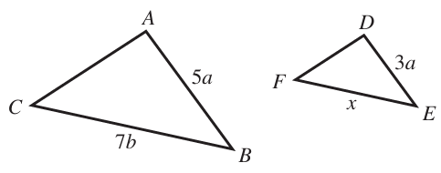
$ A.\;\; b \\[3ex] B.\;\; \dfrac{21}{5}b \\[5ex] C.\;\; 5b \\[3ex] D.\;\; 9b \\[3ex] E.\;\; \dfrac{35}{3}b \\[5ex] $
$ \dfrac{x}{7b} = \dfrac{3a}{5a}\quad\dots\text{ratio of corresponding sides of similar}\;\triangle s \\[5ex] x = \dfrac{3a \cdot 7b}{5a} \\[5ex] x = \dfrac{21b}{5} $
The tag drawn from the first bowl is the row number of a student’s seat; the 28 tags in the first bowl have an equal distribution of the numbers 1, 2, 3, 4, 5, 6, and 7.
The tag drawn from the second bowl is the seat number within the row determined by the first tag; the 28 tags in the second bowl have an equal distribution of the numbers 1, 2, 3, and 4.
What is the probability that the first student who draws will have a seating location that is in Row 5, but NOT in Seat 1?
$ F.\;\; \dfrac{1}{28} \\[5ex] G.\;\; \dfrac{3}{28} \\[5ex] H.\;\; \dfrac{6}{28} \\[5ex] J.\;\; \dfrac{9}{28} \\[5ex] K.\;\; \dfrac{18}{28} \\[5ex] $
Let us use the Punnett Square to list the possibilities. Then, we can select the seating location in Row 5 but NOT in Seat 1
Please Note:
Beacuse the ACT is timed, you do not need to complete the entire table, even though I shall complete it here.
But you need to know that the cardinality of the sample space is: 4 × 7 = 28
1, 1 implies Row 1, Seat 1
5, 1 implies Row 5, Seat 1
|
$Row\:\:\rightarrow$ $Seat\:\:\downarrow$ |
1 | 2 | 3 | 4 | 5 | 6 | 7 |
|---|---|---|---|---|---|---|---|
| 1 | 1, 1 | 2, 1 | 3, 1 | 4, 1 |
5, 1 No |
6, 1 | 7, 1 |
| 2 | 1, 2 | 2, 2 | 3, 2 | 4, 2 | 5, 2 | 6, 2 | 7, 2 |
| 3 | 1, 3 | 2, 3 | 3, 3 | 4, 3 | 5, 3 | 6, 3 | 7, 3 |
| 4 | 1, 4 | 2, 4 | 3, 4 | 4, 4 | 5, 4 | 6, 4 | 7, 4 |
$ P(\text{Row 5 but NOT in Seat 1}) = \dfrac{n(\text{Row 5 but NOT in Seat 1})}{n(S)} \\[5ex] = \dfrac{3}{28} $
$ A.\;\; 3 \\[3ex] B.\;\; 4 \\[3ex] C.\;\; 6 \\[3ex] D.\;\; 125 \\[3ex] E.\;\; 436 \\[3ex] $
$ \log_5{625} \\[4ex] = \log_5{5^4} \\[4ex] = 4 \log_5{5} \quad\dots\text{Law 5 Log} \\[4ex] = 4 \cdot 1 \quad\dots\text{Law 4 Log} \\[4ex] 4 $
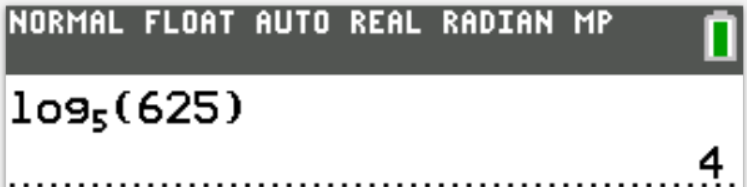
Which of the following inequalities must be true?
$ F.\;\; x \gt 0 \\[3ex] G.\;\; y \gt 0 \\[3ex] H.\;\; x \lt 0 \\[3ex] J.\;\; y \lt 0 \\[3ex] K.\;\; xy \lt 0 \\[3ex] $
$7x^2y \lt 0$
Less than 0 implies a negative number
For $7x^2y$:
7 is a positive number
$x^2$ is a positive number because the square of any number is positive
The square of a positive number is positive
The square of a negative number is also positive
So, $7x^2$ is positive
⇒
$y$ must be negative because the product of positive and negative is negative
Option J. is the correct answer.
$ A.\;\; 6\;\;only \\[3ex] B.\;\; \dfrac{1}{6}\;\;only \\[5ex] C.\;\; -\dfrac{1}{6}\;\;only \\[5ex] D.\;\; \text{All positive real numbers} \\[3ex] E.\;\; \text{All negative real numbers} \\[3ex] $
$ \dfrac{bc - bd}{6c - 6d} \lt 0 \\[5ex] \dfrac{b(c - d)}{6(c - d)} \lt 0 \\[5ex] \dfrac{b}{6} \lt 0 \\[5ex] b \lt 0(6) \\[3ex] b \lt 0 \\[3ex] $ All negative real numbers are less than 0
F. All negative numbers
G. All numbers less than 1
H. All rational numbers less than 1
J. All positive numbers less than 1
K. All positive numbers less than 2
Negative values of k implies that k is less than 0
Let us test some numbers for k
$ If\;\;k = -1 \\[3ex] 2^{-1} = \dfrac{1}{2^1} = \dfrac{1}{2} \quad\dots\text{Law 6 Exp} \\[5ex] \dfrac{1}{2} \text{ is a rational number} \\[5ex] \dfrac{1}{2} \text{ is less than 1} \\[7ex] If\;\;k = -2 \\[3ex] 2^{-2} = \dfrac{1}{2^2} = \dfrac{1}{4} \quad\dots\text{Law 6 Exp} \\[5ex] \dfrac{1}{4} \text{ is a rational number} \\[5ex] \dfrac{1}{4} \text{ is less than 1} \\[7ex] If\;\;k = -\dfrac{1}{2} \\[5ex] 2^{-\dfrac{1}{2}} = \dfrac{1}{2^{\dfrac{1}{2}}} \quad\dots\text{Law 6 Exp} \\[7ex] \dfrac{1}{2^{\dfrac{1}{2}}} = \dfrac{1}{\sqrt{2}} \quad\dots\text{Law 7 Exp} \\[7ex] \dfrac{1}{\sqrt{2}} \text{ is an irrational number} \\[5ex] \dfrac{1}{\sqrt{2}} \text{ is less than 1} \\[5ex] $ This implies that for all negative values of k, the range of values of $2^k$ is all positive numbers less than 1.
$ A.\;\; \dfrac{a}{A} = \dfrac{b}{B} \\[5ex] B.\;\; \dfrac{\sin a}{A} = \dfrac{\sin b}{B} \\[5ex] C.\;\; \dfrac{a}{\cos A} = \dfrac{b}{\cos B} \\[5ex] D.\;\; b^2 = a^2 + c^2 - 2ab(\sin B) \\[4ex] E.\;\; c^2 = a^2 + b^2 - 2ab(\cos C) \\[4ex] $
$ c^2 = a^2 + b^2 - 2ab(\cos C) \quad\dots\text{Cosine Law} $
Event B consists of 3 simple events, none of which are in Event A.
Event C is the union of A and B, and Event D is the intersection of A and B.
Which of the following statements is true?
(Note: Given that Event X consists of n simple events, |X| = n.)
F. |B| < |A| < |C| < |D|
G. |B| < |A| < |D| < |C|
H. |C| < |B| < |A| < |D|
J. |D| < |B| < |A| < |C|
K. |D| < |C| < |B| < |A|
Compare the events to sets
Let us write examples of the events (sets) based on the question
$ A = \{1, 2, 3, 4, 5, 6\} \\[3ex] |A| = n(A) = 6 \\[5ex] B = \{7, 8, 9\} \\[3ex] |B| = n(B) = 3 \\[5ex] C = A \cup B \\[3ex] C = \{1, 2, 3, 4, 5, 6, 7, 8, 9\} \\[3ex] |C| = n(C) = 9 \\[5ex] D = A \cap B \\[3ex] D = \phi \\[3ex] |D| = n(D) = 0 \\[5ex] \implies \\[3ex] |D| \lt |B| \lt |A| \lt |C| $
The pyramid’s slant height is 15 ft.
What is the total surface area, in square feet, of the pyramid?
$ A.\;\; 550 \\[3ex] B.\;\; 600 \\[3ex] C.\;\; 1,000 \\[3ex] D.\;\; 1,600 \\[3ex] E.\;\; 2,000 \\[3ex] $
The base of a right square pyramid is a square
The base has a side length of 20 ft.
This implies that:
The square has a side length of 20 ft.
This implies that the base area is the area of the square
Base Area, BA = Area of the square = side² = (20)² = 400 square feet
The slant height of the pyramid = 15 ft.
Lateral Surface Area, LSA = 2 × base × slant height
LSA = 2 × 20 × 15 = 600 square feet
Total Surface Area, TSA = BA + LSA
TSA = 400 + 600
TSA = 1000 square feet.
$ F.\;\; 0 \\[3ex] G.\;\; 1 \\[3ex] H.\;\; 2 \\[3ex] J.\;\; 3 \\[3ex] K.\;\; 4 \\[3ex] $
Let us test some integers for x to see what we can get.
We shall skip all positive numbers less than or equal to 4 because we need to get a positive prime number.
$ (x - 1)(x - 4) \\[3ex] Test\;\;x = 5 \\[3ex] (5 - 1)(5 - 4) = 4(1) = 4 \quad\dots\text{Not prime} \\[5ex] Test\;\;x = 7 \\[3ex] (7 - 1)(7 - 4) = 6(3) = 18 \quad\dots\text{Not prime} \\[5ex] Test\;\;x = -1 \\[3ex] (-1 - 1)(-1 - 4) = (-2)(-5) = 10 \quad\dots\text{Not prime} \\[5ex] Test\;\;x = -3 \\[3ex] (-3 - 1)(-3 - 4) = (-4)(-7) = 28 \quad\dots\text{Not prime} \\[5ex] \text{This applies to all odd numbers: 9, 11, 13, ... and −1, −3, −5, ...} \\[3ex] \text{The odd numbers will give a positive composite (not positive prime)} \\[5ex] Test\;\;x = 6 \\[3ex] (6 - 1)(6 - 4) = 5(2) = 10 \quad\dots\text{Not prime} \\[5ex] Test\;\;x = 8 \\[3ex] (8 - 1)(8 - 4) = 7(4) = 28 \quad\dots\text{Not prime} \\[5ex] Test\;\;x = -2 \\[3ex] (-2 - 1)(-2 - 4) = (-3)(-6) = 18 \quad\dots\text{Not prime} \\[5ex] Test\;\;x = -4 \\[3ex] (-4 - 1)(-4 - 4) = (-5)(-8) = 40 \quad\dots\text{Not prime} \\[5ex] \text{This applies to all even numbers: 10, 12, 14, ... and −2, −4, −6, ...} \\[3ex] \text{The even numbers will give a positive composite (not positive prime)} \\[3ex] $ As you can see, there is no number that we substutute for x which will give a positive prime number.
Hence, the correct answer is zero: Option F.
The denominator should not be zero
So, any value that would make the denominator, zero is NOT in the domain
Let us set the denominator to zero to find that value
$ 1 + \sec x = 0 \\[3ex] \sec x = 0 - 1 \\[3ex] \sec x = -1 \\[3ex] \implies \\[3ex] \dfrac{1}{\cos x} = -1 \\[5ex] \cos x * -1 = 1 \\[3ex] \cos x = \dfrac{1}{-1} \\[5ex] \cos x = -1 \\[3ex] x = \cos^{-1}(-1) \\[4ex] x = 180^\circ \\[3ex] $ 180° is NOT in the domain of the function.
It is known that $r(1) = \dfrac{1}{2},\;\;r(2) = \dfrac{3}{2},\;\;r(3) = \dfrac{9}{2}$, and $r(4) = \dfrac{27}{2}$.
Which of the following functions is equivalent to $r(n)$?
$ F.\;\; f(n) = 3\left(\dfrac{1}{2}\right)^{n - 1} \\[6ex] G.\;\; g(n) = 3\left(\dfrac{1}{2}\right)^n \\[6ex] H.\;\; h(n) = \dfrac{1}{2}\left(\dfrac{3}{2}\right)^{n - 1} \\[6ex] J.\;\; j(n) = \dfrac{1}{2}(3)^{n - 1} \\[6ex] K.\;\; k(n) = \dfrac{1}{2}(3)^n \\[6ex] $
$ r(n) = ab^n \\[4ex] r(1) = ab^1 = \dfrac{1}{2} \\[5ex] ab = \dfrac{1}{2}...eqn.(1) \\[7ex] r(2) = ab^2 = \dfrac{3}{2} \\[5ex] ab^2 = \dfrac{3}{2}...eqn.(2) \\[7ex] eqn.(2) \div eqn.(1) \implies \\[3ex] \dfrac{ab^2}{ab} = \dfrac{3}{2} \div \dfrac{1}{2} \\[6ex] b = \dfrac{3}{2} \cdot \dfrac{2}{1} \\[5ex] b = 3 \\[3ex] Substitute\;\;b = 3\;\;into\;\; eqn.(1) \\[3ex] a \cdot 3 = \dfrac{1}{2}...eqn.(1) \\[5ex] a = \dfrac{1}{2} \cdot \dfrac{1}{3} \\[5ex] a = \dfrac{1}{6} \\[5ex] \implies \\[3ex] r(n) = \dfrac{1}{6} \cdot 3^n \\[6ex] = \dfrac{1}{2 \cdot 3} \cdot 3^n \\[6ex] = \dfrac{1}{2} \cdot \dfrac{1}{3} \cdot 3^n \\[6ex] = \dfrac{1}{2}\left(\dfrac{3^n}{3^1}\right) ...Law\;2...Exp \\[6ex] = \dfrac{1}{2}(3)^{n - 1} $


$ A.\;\; -4a - 48 \\[3ex] B.\;\; -4a + 6 \\[3ex] C.\;\; -a^2 - 3a - 48 \\[3ex] D.\;\; -a^2 - 3a + 6 \\[3ex] E.\;\; -4a^3 - 48 \\[3ex] $
$ a(5 - a) - 8(a + 6) \\[3ex] 5a - a^2 - 8a - 48 \\[4ex] -a^2 - 3a - 48 $
What is the new room rate?
$ F.\;\; \$ 16.00 \\[3ex] G.\;\; \$ 80.20 \\[3ex] H.\;\; \$ 82.00 \\[3ex] J.\;\; \$ 96.00 \\[3ex] K.\;\; \$ 100.00 \\[3ex] $
$ \text{Old room rate} = \$80 \\[3ex] 20\%\text{ Increase} \\[3ex] = 20\% \text{ of } \$80.00 \\[3ex] = 0.2(80) \\[3ex] = \$16 \\[5ex] \text{New room rate} \\[3ex] = \text{Old room rate} + \text{Increase} \\[3ex] = \$80 + \$16 \\[3ex] = \$96.00 $
$ A.\:\: \begin{bmatrix} 5 & 2 \\[2ex] 3 & 4 \end{bmatrix} \\[5ex] B.\:\: \begin{bmatrix} 5 & 2 \\[2ex] 3 & 20 \end{bmatrix} \\[5ex] C.\:\: \begin{bmatrix} 1 & 10 \\[2ex] 15 & 4 \end{bmatrix} \\[5ex] D.\:\: \begin{bmatrix} 6 & 7 \\[2ex] 8 & 9 \end{bmatrix} \\[5ex] E.\:\: \begin{bmatrix} 5 & 10 \\[2ex] 15 & 20 \end{bmatrix} \\[5ex] $
$ 5(1) = 5 \\[3ex] 5(2) = 10 \\[3ex] STOP \\[3ex] $ The correct answer is Option E.
$ 5\begin{bmatrix} 1 & 2 \\[2ex] 3 & 4 \end{bmatrix} = \begin{bmatrix} 5(1) & 5(2) \\[2ex] 5(3) & 5(4) \end{bmatrix} = \begin{bmatrix} 5 & 10 \\[2ex] 15 & 20 \end{bmatrix} $
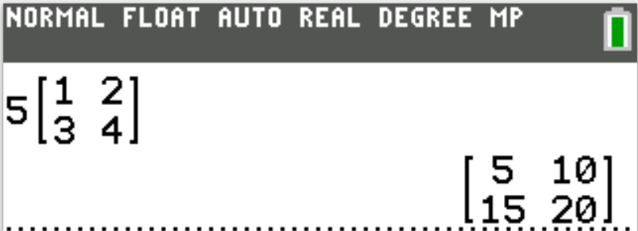
What was the associate’s average daily commission for these 5 days?
$ F.\;\; \$45 \\[3ex] G.\;\; \$46 \\[3ex] H.\;\; \$48 \\[3ex] J.\;\; \$49 \\[3ex] K.\;\; \$50 \\[3ex] $
Average implies Arithmetic Mean
$30 on Monday and Tuesday (2 days)
$60 on Wednesday, Thursday, and Friday (3 days)
$ Average = \bar{x} = \dfrac{\Sigma x}{n} \\[5ex] = \dfrac{(30 \cdot 2) + (60 \cdot 3)}{5} \\[5ex] = \dfrac{60 + 180}{5} \\[5ex] = \dfrac{240}{5} \\[5ex] = \$48 $
$ A.\;\; -4 \\[3ex] B.\;\; -2 \\[3ex] C.\;\; -1 \\[3ex] D.\;\; 1 \\[3ex] E.\;\; 4 \\[3ex] $
$ -x + 6 = 3x - 10 \\[3ex] 6 + 10 = 3x + x \\[3ex] 16 = 4x \\[3ex] 4x = 16 \\[3ex] x = \dfrac{16}{4} \\[5ex] x = 4 \\[3ex] $ Check
| LHS | RHS |
|---|---|
| $ -x + 6 \\[3ex] -4 + 6 \\[3ex] 2 $ | $ 3x - 10 \\[3ex] 3(4) - 10 \\[3ex] 12 - 10 \\[3ex] 2 $ |
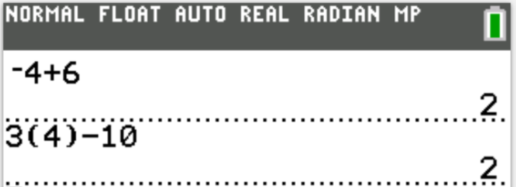
For any minutes used after the 100 minutes, he is charged $0.10 per minute.
Fred has budgeted $33.00 per month for his cell phone service.
What is the maximum number of minutes Fred could use in 1 month without exceeding his budget?
$ F.\;\; 108 \\[3ex] G.\;\; 132 \\[3ex] H.\;\; 180 \\[3ex] J.\;\; 330 \\[3ex] K.\;\; 430 \\[3ex] $
Let the number of minutes Fred could use in 1 month without exceeding his budget be x
$ \underline{Monthly} \\[3ex] \text{cell phone service cost} = \$25 \\[3ex] \text{over 100 minutes}, cost = \$0.1 \;\;per\;\;minute \implies 0.1(x - 100) \\[3ex] \text{budget cost} = \$33 \\[3ex] \implies \\[3ex] 25 + 0.1(x - 100) \le 33 \\[3ex] 25 + 0.1x - 10 \le 33 \\[3ex] 0.1x + 15 \le 33 \\[3ex] 0.1x \le 33 - 15 \\[3ex] 0.1x \le 18 \\[3ex] x \le \dfrac{18}{0.1} \\[5ex] x \le 180\;minutes \\[3ex] $ Fred can use up to 180 minutes in 1 month without exceeding his budget.
To the nearest 0.1°F, what Fahrenheit temperature corresponds to 13.0°C?
$ A.\;\; 33.8^\circ F \\[4ex] B.\;\; 45.0^\circ F \\[4ex] C.\;\; 46.8^\circ F \\[4ex] D.\;\; 55.4^\circ F \\[4ex] E.\;\; 81.0^\circ F \\[4ex] $
$ f(c) = \dfrac{9}{5}c + 32 \\[5ex] c = 13^\circ C \\[4ex] f(13) = \dfrac{9}{5}\cdot 13 + 32 \\[5ex] = \dfrac{277}{5} \\[5ex] = 55.4^\circ F $
$ F.\;\; \dfrac{1}{12} \\[5ex] G.\;\; \dfrac{1}{9} \\[5ex] H.\;\; \dfrac{1}{7} \\[5ex] J.\;\; \dfrac{1}{5} \\[5ex] K.\;\; \dfrac{3}{4} \\[5ex] $
Let that number be p
$ \dfrac{1}{3} + p = \dfrac{1}{4} + \dfrac{1}{6} \\[5ex] p = \dfrac{1}{4} + \dfrac{1}{6} - \dfrac{1}{3} \\[5ex] \text{LCD of 4, 6, 3} = 12 \\[3ex] \implies \\[3ex] p = \dfrac{3 + 2 - 4}{12} \\[5ex] p = \dfrac{1}{12} $
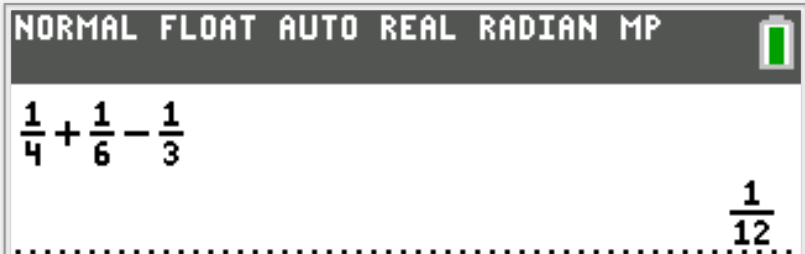
What is the distance, in centimeters, between T and the midpoint of $\overline{RS}$?
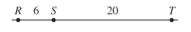
$ A.\;\; 13 \\[3ex] B.\;\; 16 \\[3ex] C.\;\; 20 \\[3ex] D.\;\; 23 \\[3ex] E.\;\; 26 \\[3ex] $
$ \text{Midpoint of}\; \overline{RS} = \dfrac{1}{2} \cdot 6 = 3 \\[5ex] \text{Distance between T and the midpoint of}\; \overline{RS} \\[3ex] = \text{Distance between the midpoint of}\; \overline{RS} + \text{length of}\; \overline{ST} \\[3ex] = 3 + 20 \\[3ex] = 23 $
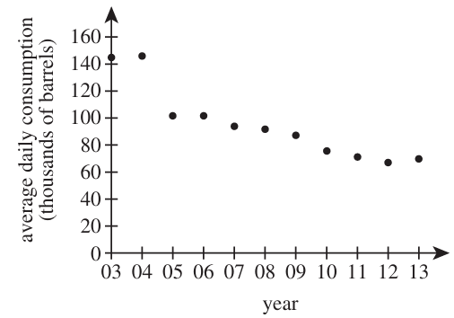
From what year to the following year did the average daily consumption decrease the most?
F. 2003 to 2004
G. 2004 to 2005
H. 2006 to 2007
J. 2009 to 2010
K. 2012 to 2013
As seen from the diagram:
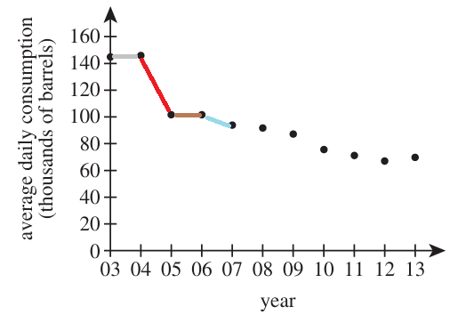
The steepest decline is indiated in red color.
It is the time during which the average daily consumption decreased the most.
It is the most negative slope.
It is from 2004 to 2005
Given that fencing sells for $2.05 per meter, what will the fencing for the field cost?
$ A.\;\; \$973.75 \\[3ex] B.\;\; \$1,332.50 \\[3ex] C.\;\; \$1,405.00 \\[3ex] D.\;\; \$1,588.75 \\[3ex] E.\;\; \$1,947.50 \\[3ex] $
$ \underline{\text{Rectangular Field}} \\[3ex] Length,\;L = 300\;m \\[3ex] Width,\;W = 175\;m \\[3ex] Perimeter = P \\[3ex] P = 2(L + W) \\[3ex] = 2(300 + 175) \\[3ex] = 2(475) \\[3ex] = 950\;m \\[5ex] \underline{\text{Fencing Cost}} \\[3ex] 950\meters\;\;@\;\;\$2.05\;\;per\;\;meter \\[3ex] = 950(2.05) \\[3ex] = \$1947.50 $
While the stone is in flight, the equation $h = 300 - 30t - 16t^2$ gives the height above the ground, h feet, of the stone at any given time t seconds after being thrown.
What is the height, in feet, of the stone exactly 3 seconds after Mary throws the stone?
$ F.\;\; 66 \\[3ex] G.\;\; 114 \\[3ex] H.\;\; 162 \\[3ex] J.\;\; 246 \\[3ex] K.\;\; 354 \\[3ex] $
$ h = 300 - 30t - 16t^2 \\[4ex] h(t) = 300 - 30t - 16t^2 \\[4ex] t = 3\text{ seconds} \\[3ex] h(3) = 300 - 30(3) - 16(3)^2 \\[4ex] = 66\;feet $
$ A.\;\; 4 \\[3ex] B.\;\; 8 \\[3ex] C.\;\; 10 \\[3ex] D.\;\; 14 \\[3ex] E.\;\; 16 \\[3ex] $
Sorting the dataset in ascending order gives:
$ \text{4, 4, 8, 14, 20} \\[3ex] \text{median = middle number} = 8 $
For this specific question, it is not recommended to use a calcuator.
Be it as it may, let us see how it can be done on the calculator.
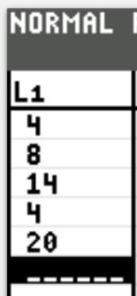
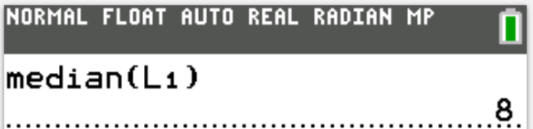
On the model, $\overline{BC}$ represents an actual length of 90 feet in the park.
On the model, $\overline{DE}$ represents what actual length, in feet, in the park?
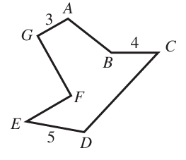
$ F.\;\; 67.5 \\[3ex] G.\;\; 72 \\[3ex] H.\;\; 112.5 \\[3ex] J.\;\; 120 \\[3ex] K.\;\; 150 \\[3ex] $
| inch | feet |
|---|---|
| 4 | 90 |
| 5 | what |
$ \dfrac{what}{90} = \dfrac{5}{4} \\[5ex] what \cdot 4 = 90 \cdot 5 \\[3ex] what = \dfrac{90 \cdot 5}{4} \\[5ex] what = 112.5\;feet $
What is the measure of $\angle BCD$?

$ A.\;\; 65^\circ \\[4ex] B.\;\; 85^\circ \\[4ex] C.\;\; 95^\circ \\[4ex] D.\;\; 105^\circ \\[4ex] E.\;\; 115^\circ \\[4ex] $
$ \angle BCD = 65^\circ + 30^\circ \quad\dots\text{the exterior angle of a triangle is the sum of the two interior opposite angles.} \\[3ex] \angle BCD = 95^\circ $
The number b is negative and odd.
The number a − b is:
F. positive and even.
G. positive and odd.
H. negative and even.
J. negative and odd.
K. zero.
Let us test this statement with some values of a and b
$ Let: \\[3ex] \underline{Example\;1} \\[3ex] a = 6 \quad\dots\text{positive and even} \\[3ex] b = -3 \quad\dots\text{negative and odd} \\[3ex] a - b \\[3ex] 6 - (-3)\quad\dots\text{subtraction operation} \\[3ex] 6 + 3 \\[3ex] 9\quad\dots\text{positve and odd} \\[5ex] \underline{Example\;2} \\[3ex] a = 2 \quad\dots\text{positive and even} \\[3ex] b = -5 \quad\dots\text{negative and odd} \\[3ex] a - b \\[3ex] 2 - (-5)\quad\dots\text{subtraction operation} \\[3ex] 2 + 5 \\[3ex] 7\quad\dots\text{positve and odd} $
The perimeter of the triangle is 32 centimeters.
What is the length, in centimeters, of the altitude that splits the triangle into 2 congruent right triangles?
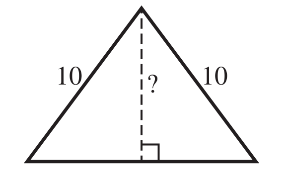
$ A.\;\; \sqrt{44} \\[3ex] B.\;\; 6 \\[3ex] C.\;\; 7 \\[3ex] D.\;\; 8 \\[3ex] E.\;\; 10 \\[3ex] $
Let the perpendicular altitude = h
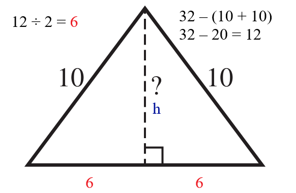
$ \underline{\text{2 Right } \triangle s} \\[3ex] Perimeter = 32\;cm \\[3ex] \text{Length of base} = 32 - (10 + 10) \\[3ex] = 32 - 20 \\[3ex] = 12\;cm \\[3ex] \text{Base of each Right } \triangle = \dfrac{12}{2} = 6\;cm \\[5ex] \quad\dots\text{altitude splits the triangle into 2 congruent right triangles} \\[3ex] \text{Using any of the Right Triangles} \\[3ex] 10^2 = h^2 + 6^2 \quad\dots\text{Pythagorean Theorem} \\[4ex] h^2 = 10^2 - 6^2 \\[4ex] h^2 = 100 - 36 \\[3ex] h^2 = 64 \\[3ex] h = \sqrt{64} \\[3ex] h = 8\;cm $
$ F.\;\; 0 \\[3ex] G.\;\; 1 \\[3ex] H.\;\; a \\[3ex] J.\;\; a^2 \\[4ex] K.\;\; a^{12} \\[4ex] $
$ \dfrac{a^2a^4}{a^6} \\[6ex] a^{2 + 4 - 6} \quad\dots\text{Laws 1 and 2 Exp} \\[4ex] a^0 \quad\dots\text{Law 3 Exp} \\[3ex] 1 $
The point of contact of the wire and the pole is 8 feet above the ground.
What angle does the wire make with the level ground?
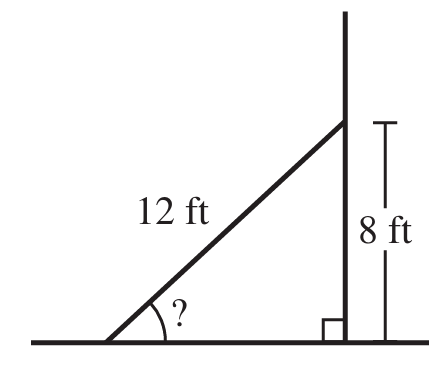
$ A.\;\; \cos^{-1}\left(\dfrac{8}{12}\right) \\[6ex] B.\;\; \csc^{-1}\left(\dfrac{8}{12}\right) \\[6ex] C.\;\; \sec^{-1}\left(\dfrac{8}{12}\right) \\[6ex] D.\;\; \sin^{-1}\left(\dfrac{8}{12}\right) \\[6ex] E.\;\; \tan^{-1}\left(\dfrac{8}{12}\right) \\[6ex] $
Let the angle that the wire makes with the level ground = θ
$ \sin\theta = \dfrac{opp}{hyp} ...SOHCAHTOA \\[5ex] \sin\theta = \dfrac{8}{12} \\[5ex] \theta = \sin^{-1}\left(\dfrac{8}{12}\right) $
Each toy costs Marcy $2.25 to make, and she will sell them for $4.05 each.
What is the minimum number of toys she can make and sell to earn a profit of at least $81.00?
$ F.\;\; 13 \\[3ex] G.\;\; 16 \\[3ex] H.\;\; 20 \\[3ex] J.\;\; 36 \\[3ex] K.\;\; 45 \\[3ex] $
Let the number of toys = n
Cost Price for n toys = $2.25n
Selling Price for n toys = $4.05n
Profit = Selling Price − Cost Price
At least $81.00 implies ≥$81.00
This implies that:
$ 4.05n - 2.25n \ge 81 \\[3ex] 1.8n \ge 81 \\[3ex] n \ge \dfrac{81}{1.8} \\[5ex] n \ge 45 \\[3ex] $ Marcy needs to make and sell at least 45 toys to earn a profit of at least $81.00
$ A.\;\; -83 \\[3ex] B.\;\; -41 \\[3ex] C.\;\; -29 \\[3ex] D.\;\; 31 \\[3ex] E.\;\; 79 \\[3ex] $
$ g(x) = x^2 - 2 \\[4ex] g(-3) = (-3)^2 - 2 \\[4ex] g(-3) = 7 \\[5ex] f(x) = 4x + 3 \\[3ex] f(7) = 4(7) + 3 \\[3ex] f(7) = 31 $
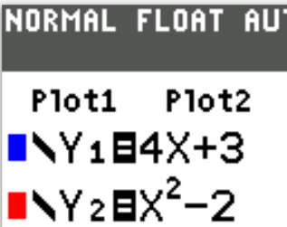

What is the value of $2z + w$?
$ F.\;\; -28 \\[3ex] G.\;\; 28i \\[3ex] H.\;\; 11 + 12i \\[3ex] J.\;\; 11 + 17i \\[3ex] K.\;\; 14 + 24i \\[3ex] $
$ z = 4 + 5i \\[3ex] w = 3 + 7i \\[3ex] 2z + w \\[3ex] = 2(4 + 5i) + (3 + 7i) \\[3ex] = 8 + 10i + 3 + 7i \\[3ex] = 11 + 17i $
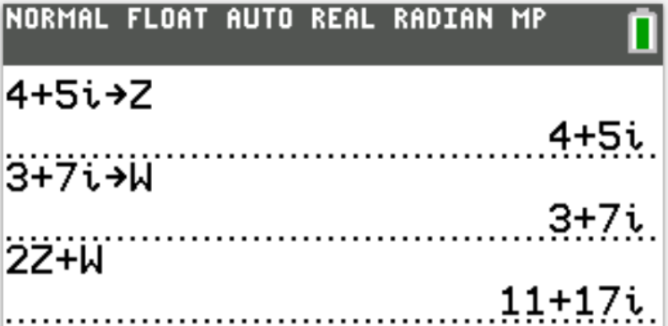
OR
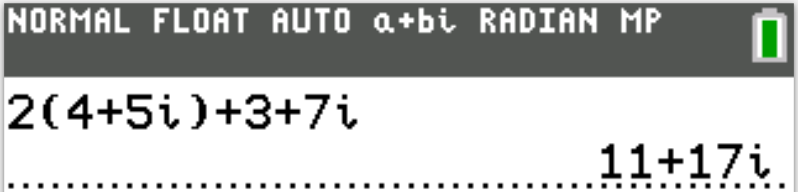
$ A.\;\; -5 \\[3ex] B.\;\; -1 \\[3ex] C.\;\; 1 \\[3ex] D.\;\; 5 \\[3ex] E.\;\; 6 \\[3ex] $
We have at least two approaches to solve this question.
Use any approach you like.
$ \underline{Factoring\;\;Method} \\[3ex] x^2 - 5x - 6 = 0 \\[4ex] (x + 1)(x - 6) = 0 \\[3ex] x + 1 = 0 \;\;OR\;\; x - 6 = 0 \\[3ex] x = -1 \;\;OR\;\; x = 6 \\[3ex] \text{Sum of roots} = -1 + 6 \\[3ex] = 5 \\[5ex] \underline{Formula\;\;Method} \\[3ex] \text{Compare the equation to the standard form} \\[3ex] a^2 + bx + c = 0 \\[4ex] a = 1 \\[3ex] b = -5 \\[3ex] \text{Sum of roots} = \dfrac{-b}{a} \\[5ex] = \dfrac{-(-5)}{1} \\[5ex] = 5 $
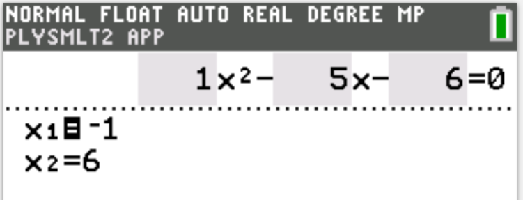
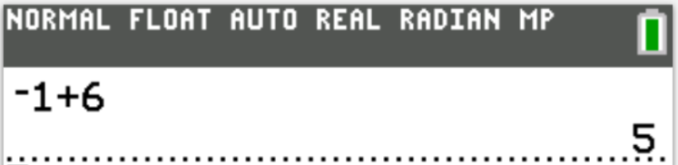
Beef costs $3.00 per pound, chicken costs $2.00 per pound, and Kate has a budget of $90.00 to spend on meat for the party.
The shaded region in one of the following graphs represents all and only the possible combinations of beef and chicken Kate can buy while staying within her budget.
Which one?
(Note: Do not consider tax.)
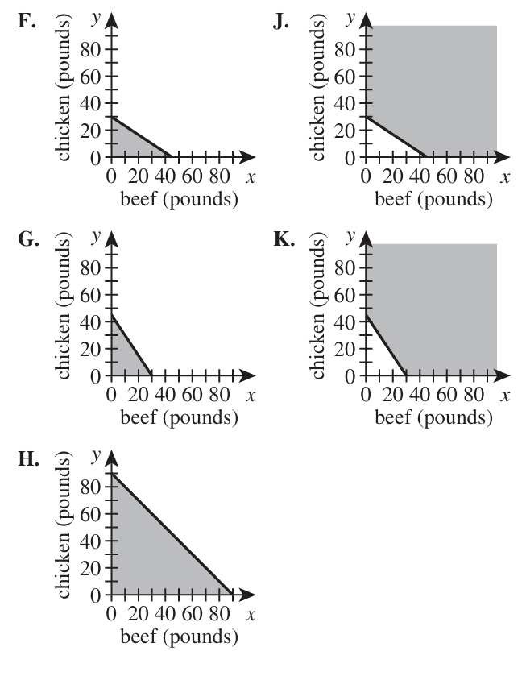
Let:
the amount of chicken = C
the amount of beef = B
Amount of beef @ $3.00 per pound = B × 3 = 3B
Amount of chicken @ $2.00 per pound = C × 2 = 2C
Kate has a budget of $90.00 to spend on meat for the party.
This implies that: 3B + 2C ≤ 90
| Beef, B | Chicken, C | Point (B, C) |
|---|---|---|
| $0$ | $ 3B + 2C = 90 \\[3ex] 3(0) + 2C = 90 \\[3ex] 2C = 90 \\[3ex] C = \dfrac{90}{2} \\[5ex] C = 45 $ | $(0, 45)$ |
| $ 3B + 2C = 90 \\[3ex] 3B + 2(0) = 90 \\[3ex] 3B = 90 \\[3ex] B = \dfrac{90}{3} \\[5ex] B = 30 $ | $0$ | $(30, 0)$ |
Indicate the two points on the graph
Join the points with a solid line because of the equality sign in ≤
Shade the region below the solid line because of the less than sign in ≤
This implies that the correct answer is Option G
Each student cut his or her string into pieces of equal length.
Which of the following CANNOT be the length, in inches, of any student’s pieces?
$ A.\;\; \dfrac{1}{16} \\[5ex] B.\;\; \dfrac{1}{2} \\[5ex] C.\;\; 1 \\[3ex] D.\;\; 16 \\[3ex] E.\;\; 36 \\[3ex] $
72 inches would be cut into equal pieces (piecese of equal length)
Let us analyze each option to determine the correct answer.
Option A
1 ÷ 16 = 0.0625 inches
Can we have equal lengths of 0.0625 inch from a string length of 72 inches?
72 ÷ 0.0625 = 1152
Yes, we can have 1152 pieces of equal lengths of 0.0625 inch each
Option B
1 ÷ 2 = 0.5 inches
Can we have equal lengths of 0.5 inch from a string length of 72 inches?
72 ÷ 0.5 = 144
Yes, we can have 144 pieces of equal lengths of 0.5 inch each
Option C
1 inch
Can we have equal lengths of 1 inch from a string length of 72 inches?
72 ÷ 1 = 72
Yes, we can have 72 pieces of equal lengths of 1 inch each
Option D
16 inches
Can we have equal lengths of 16 inches from a string length of 72 inches?
72 ÷ 16 = 4.5
This is not an integer. There is a remainder.
We can have 4 equal lengths of 16 inches each; however the remainder will not be an equal length of 16 inches.
So, this option is the correct answer but let us go ahead and analyze the final option.
Option E
36 inches
Can we have equal lengths of 36 inches from a string length of 72 inches?
72 ÷ 36 = 22
Yes, we can have 2 pieces of equal lengths of 36 inches each
Option D is the correct answer.
What is the value of a?
$ F.\;\; -\dfrac{81}{5} \\[5ex] G.\;\; \dfrac{5}{81} \\[5ex] H.\;\; 2 \\[3ex] J.\;\; 3 \\[3ex] K.\;\; 81 \\[3ex] $
The axis of a vertical parabola is the vertical line through the vertex of the parabola.
It is the x-coordinate of the vertex.
It is the line of symmetry that shows two same halves of the parabola when the parabola is folded across that axis.
This implies that the axis passes through the midpoint of the x-intercepts
This implies that the axis is the midpoint of the x-intercepts because the midpoint of the x-intercepts and the x-coordinate of the vertex both have the same x-value
In that regard:
$ Vertex = (-1, 81) \\[3ex] x-coordinate\;\;of\;\;vertex = -1 \\[3ex] x-intercepts = (-4, 0)\;\;and\;\;(a, 0) \\[5ex] Midpoint\;\;of\;\;x-intercept = \left(\dfrac{-4 + a}{2}, \dfrac{0 + 0}{2}\right) \\[5ex] = \left(\dfrac{-4 + a}{2}, 0\right) \\[5ex] x-value\;\;of\;\;Midpoint = \dfrac{-4 + a}{2} \\[5ex] \implies \\[3ex] \dfrac{-4 + a}{2} = -1 \\[5ex] -4 + a = -1(2) \\[3ex] -4 + a = -2 \\[3ex] a = -2 + 4 \\[3ex] a = 2 $
$ A.\;\; \dfrac{1}{4} \\[5ex] B.\;\; \dfrac{1}{2} \\[5ex] C.\;\; 2 \\[3ex] D.\;\; 2\dfrac{1}{8} \\[5ex] E.\;\; 2\dfrac{1}{2} \\[5ex] $
Let the fraction = p
$ p \text{ of } 4\dfrac{1}{4} \text{ is } 2\dfrac{1}{8} \\[5ex] p * \dfrac{17}{4} = \dfrac{17}{8} \\[5ex] p = \dfrac{17}{8} \div \dfrac{17}{4} \\[5ex] p = \dfrac{17}{8} * \dfrac{4}{17} \\[5ex] p = \dfrac{1}{2} $
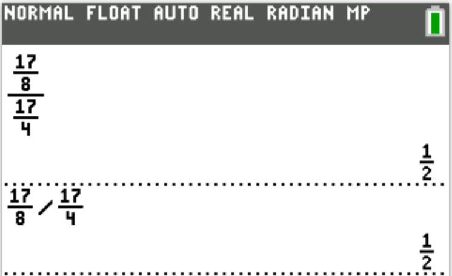
$ F.\;\; 22 \\[3ex] G.\;\; 33 \\[3ex] H.\;\; 40 \\[3ex] J.\;\; 42 \\[3ex] K.\;\; 59 \\[3ex] $
Due to the fact that about one minute is allocated to each question on the ACT, it is better to check the solution to this question by their answer options.
So, let us check and eliminate until we get the answer.
$ \underline{Option\;F} \\[3ex] 22 \div 6 = 3 \;R\; 4 \; \checkmark \\[3ex] 22 \div 7 = 3 \;R\; 1 \;\text{remainder is 1, not 5} \\[3ex] NEXT \\[5ex] \underline{Option\;G} \\[3ex] 33 \div 6 = 5 \;R\; 3 \;\;\text{remainder is 3, not 4} \\[3ex] NEXT \\[5ex] \underline{Option\;H} \\[3ex] 40 \div 6 = 6 \;R\; 4 \; \checkmark \\[3ex] 40 \div 7 = 5 \;R\; 5 \; \checkmark \\[3ex] STOP \\[3ex] $ Option H is the correct answer.
The answer choices in the options are arranged is ascending order.
So, 40 is the least positive number among the remaining choices that we did not test.
Student: Is there another way to do this question without checking by the answer options?
Teacher: Yes, we can do it: Modular Arithmetic
However, I think it takes more than a minute to do.
$ Let: \\[3ex] dividend = d \\[3ex] quotient = q \\[3ex] 1st:\;\; \text{Remainder of 4 when divided by 6} \\[3ex] d \equiv 4 \mod 6...cong.(1) \\[5ex] 2nd:\;\; \text{Remainder of 5 when divided by 7} \\[3ex] d \equiv 5 \mod 7 ...cong.(2) \\[5ex] \implies \\[3ex] d = 7q + 5 ...eqn.(1) \\[3ex] Substitute\;\;eqn.(1) \;\;for\;\;d\;\;in\;\;cong.(1) \\[3ex] 7q + 5 \equiv 4 \mod 6 \\[3ex] \text{Test positive integers for q beginning from the first positive integer} \\[3ex] 7(1) + 5 = 12 \equiv 0 \mod 6...Not\;\;4 \\[3ex] 7(2) + 5 = 19 \equiv 1 \mod 6...Not\;\;4 \\[3ex] 7(3) + 5 = 26 \equiv 2 \mod 6...Not\;\;4 \\[3ex] 7(4) + 5 = 33 \equiv 3 \mod 6...Not\;\;4 \\[3ex] 7(5) + 5 = 40 \equiv 4 \mod 6 \;\checkmark \\[3ex] \implies \\[3ex] d = 40 $
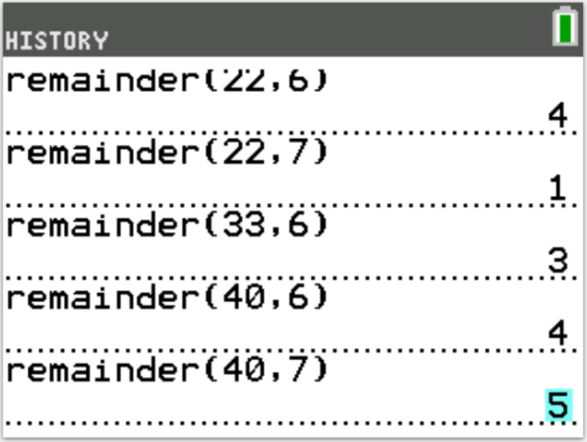
The plan is for Joe to jog his 3 miles at 4 miles per hour (mph), Tom to jog his 3 miles at 5 mph, and then Alexis to jog her 3 miles at 6 mph.
In how many hours and minutes does this 3-person team plan to complete the 9-mile relay?
$ A.\;\; \text{0 hours 36 minutes} \\[3ex] B.\;\; \text{1 hour 48 minutes} \\[3ex] C.\;\; \text{1 hour 51 minutes} \\[3ex] D.\;\; \text{2 hours 15 minutes} \\[3ex] E.\;\; \text{2 hours 25 minutes} \\[3ex] $
$ s...t...d \\[3ex] speed * time = distance \\[3ex] time = \dfrac{distance}{speed} \\[5ex] \underline{Joe} \\[3ex] d = 3\;miles \\[3ex] s = 4\;mph \\[3ex] t = \dfrac{3}{4}\;hour \\[5ex] \underline{Tom} \\[3ex] d = 3\;miles \\[3ex] s = 5\;mph \\[3ex] t = \dfrac{3}{5}\;hour \\[5ex] \underline{Alexis} \\[3ex] d = 3\;miles \\[3ex] s = 6\;mph \\[3ex] t = \dfrac{3}{6} = \dfrac{1}{2}\;hour \\[5ex] \underline{3-Person\;\;Team} \\[3ex] time = \dfrac{3}{4} + \dfrac{3}{5} + \dfrac{1}{2} \\[5ex] = \dfrac{15 + 12 + 10}{20} \\[5ex] = \dfrac{37}{20} \\[5ex] = 1.85\;hours \\[3ex] = 1\;hour + 0.85\;hour \\[3ex] = 1\;hour + \left(0.85\;hour * \dfrac{60\;minutes}{1\;hour}\right) \\[5ex] = 1\;hour + 51\;minutes $

Given $\sin\theta = \dfrac{a}{b}$ and $\tan\theta = \dfrac{a}{c}$, $\cos\theta =?$
$ F.\;\; 1 \\[3ex] G.\;\; \dfrac{b}{a} \\[5ex] H.\;\; \dfrac{b}{c} \\[5ex] J.\;\; \dfrac{c}{a} \\[5ex] K.\;\; \dfrac{c}{b} \\[5ex] $
$ \tan\theta = \dfrac{\sin\theta}{\cos\theta}...Quotient\;\;Identities \\[5ex] \cos\theta \cdot \tan\theta = \sin\theta \\[3ex] \implies \\[3ex] \cos\theta = \dfrac{\sin\theta}{\tan\theta} \\[5ex] = \sin\theta \div \tan\theta \\[3ex] = \dfrac{a}{b} \div \dfrac{a}{c} \\[5ex] = \dfrac{a}{b} \cdot \dfrac{c}{a} \\[5ex] = \dfrac{c}{b} $
Two fractions are indicated on the number line.
One of the following fractions corresponds to the point marked P.
Which one?
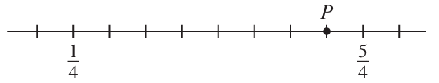
$ A.\;\; \dfrac{6}{7} \\[5ex] B.\;\; \dfrac{7}{8} \\[5ex] C.\;\; \dfrac{8}{9} \\[5ex] D.\;\; \dfrac{4}{4} \\[5ex] E.\;\; \dfrac{9}{8} \\[5ex] $
$ \text{Distance between the fractions} = \dfrac{5}{4} - \dfrac{1}{4} \\[5ex] = \dfrac{4}{4} \\[5ex] = 1\quad\dots\text{represented by 8 lines} \\[5ex] 8\;lines\;\;from\;\; \dfrac{1}{4} \;\;to\;\; \dfrac{5}{4}\quad\dots\text{not including the line on}\;\;\dfrac{1}{4} \\[5ex] \dfrac{1}{4}\;\;\text{will be included when finding the value} \\[5ex] P\;\;\text{is on the 7th line} \\[3ex] 8\;\;lines \rightarrow 1 \\[3ex] 7th\;\;line \rightarrow \dfrac{7(1)}{8} = \dfrac{7}{8} \\[5ex] \text{Value on the 7th line} = \dfrac{1}{4} + \dfrac{7}{8} \\[5ex] = \dfrac{2}{8} + \dfrac{7}{8} \\[5ex] = \dfrac{9}{8} $
What is the smallest positive clockwise rotation about the origin that can be applied to this graph with the result being this graph?
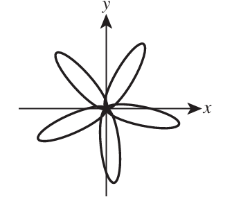
$ F.\;\; 72^\circ \\[4ex] G.\;\; 90^\circ \\[4ex] H.\;\; 120^\circ \\[4ex] J.\;\; 144^\circ \\[4ex] K.\;\; 216^\circ \\[4ex] $
5 lines of symmetry intersecting at the origin implies that the graph is symmetrical at regular intervals of each rotation.
A full rotation = 360°
This is equivalent to 5 rotations corresponding to the 5 lines of symmetry
$ 5\;rotations \rightarrow 360^\circ \\[4ex] 1\;rotation \rightarrow \dfrac{360}{5} = 72^\circ \\[3ex] $ The smallest positive clockwise rotation about the origin = 72°
Which of the following functions has the greatest slope?
$ A.\;\; f(x) = 15 \\[3ex] B.\;\; g(x) = 8x + 7 \\[3ex] $ C.
| x | h(x) |
|---|---|
|
0 3 11 |
6 0 −16 |
D.
| x | j(x) |
|---|---|
|
−6 4 14 |
0 5 10 |
E.

Using the process of elimination to save time:
Option A. is out because it has a zero slope
Option C. is out because it has a negative slope: the y-values decrease as the x-values increase.
Option B. is the most likely answer because the slope is 8
Options D. and E. has positive slopes, however, the values are less than 8
Student: May you please explain each option?
Teacher: Sure, let's do it.
$ \text{Slope,}\;\; m = \dfrac{y_2 - y_1}{x_2 - x_1} \\[5ex] \text{Slope-Intercept Form:}\;\; y = mx + b \\[5ex] \underline{Option\;\;A.} \\[3ex] f(x) = 15 \\[3ex] f(x) = 0x + 15 \\[3ex] m = 0 \\[5ex] \underline{Option\;\;B.} \\[3ex] g(x) = 8x + 7 \\[3ex] m = 8 \\[5ex] \underline{Option\;\;C.} \\[3ex] (0, 6) \;\;\;and\;\;\; (11, -16) \\[3ex] x_1 = 0 ~~~~~~~~~~~~~~ x_2 = 11 \\[4ex] y_1 = 6 ~~~~~~~~~~~~~~ y_2 = -16 \\[4ex] m = \dfrac{-16 - 6}{11 - 0} \\[5ex] = -\dfrac{22}{11} \\[5ex] = -2 \\[5ex] \underline{Option\;\;D.} \\[3ex] (-6, 0) \;\;\;and\;\;\; (14, 10) \\[3ex] x_1 = -6 ~~~~~~~~~~~~~~ x_2 = 14 \\[4ex] y_1 = 0 ~~~~~~~~~~~~~~ y_2 = 10 \\[4ex] m = \dfrac{10 - 0}{14 - (-6)} \\[5ex] = \dfrac{10}{14 + 6} \\[5ex] = \dfrac{10}{20} \\[5ex] = \dfrac{1}{2} \\[5ex] \underline{Option\;\;E.} \\[3ex] (-1, 1) \;\;\;and\;\;\; (0, 5) \\[3ex] x_1 = -1 ~~~~~~~~~~~~~~ x_2 = 0 \\[4ex] y_1 = 1 ~~~~~~~~~~~~~~ y_2 = 5 \\[4ex] m = \dfrac{5 - 1}{0 - (-1)} \\[5ex] = \dfrac{5}{0 + 1} \\[5ex] = \dfrac{5}{1} \\[5ex] = 5 \\[3ex] $ Option B. is the correct answer.
What is the area, in square coordinate units, of $\triangle PQR$?

$ F.\;\; 6 \\[3ex] G.\;\; 10 \\[3ex] H.\;\; 12 \\[3ex] J.\;\; 20 \\[3ex] K.\;\; 48 \\[3ex] $
$ P:\;Vertex\;1:\;\;(x_1, y_1) = (8, 12) \\[4ex] Q:\;Vertex\;2:\;\;(x_2, y_2) = (10, 8) \\[4ex] R:\;Vertex\;3:\;\;(x_3, y_3) = (8, 2) \\[4ex] x_1 = 8 ~~~~~~~~~~~~~~~~ y_1 = 12 \\[4ex] x_2 = 10 ~~~~~~~~~~~~~~~ y_2 = 8 \\[4ex] x_3 = 8 ~~~~~~~~~~~~~~~~~ y_3 = 2 \\[4ex] Area = \dfrac{1}{2}|x_1(y_2 - y_3) + x_2(y_3 - y_1) + x_3(y_1 - y_2)| \\[4ex] = \dfrac{1}{2}|8(8 - 2) + 10(2 - 12) + 8(12 - 8)| \\[5ex] = \dfrac{1}{2}|8(6) + 10(-10) + 8(4)| \\[5ex] = \dfrac{1}{2}|48 - 100 + 32| \\[5ex] = \dfrac{1}{2}|-20| \\[5ex] = \dfrac{1}{2} \cdot 20 \\[5ex] = 10\;square\;\;units $

One of the following statements is FALSE.
Which one?
A. f(x) decreases for all x > 0.
B. f(x) decreases for all x < 0.
C. The graph of f(x) has a horizontal asymptote at y = 0.
D. The graph of f(x) has a vertical asymptote at x = 0.
E. The graph of f(x) has an intercept at (0,0).
The graph has a vertical asymptote at x = 0
This implies that it never touches or crosses the x-axis at x = 0
This implies that there is no x-intercept at (0, 0)
Also, we can see from the diagram that the graph did not cross the y-axis at y = 0
This implies that this is false: The graph of f(x) has an intercept at (0,0).
Option E. is the correct answer.
The other options are true.
The table below gives the number of students in each grade who responded.
Two numbers in the table are represented by x and y.
| 9th | 10th | 11th | 12th | |
| Yes | 85 | 92 | 79 | 102 |
| No | 65 | x | y | 56 |
The probability that a randomly selected student from this high school is in 11th grade given that the student responded “No” is $\dfrac{75}{267}$
One of the following is the value of x.
Which one?
$ F.\;\; 71 \\[3ex] G.\;\; 75 \\[3ex] H.\;\; 100 \\[3ex] J.\;\; 113 \\[3ex] K.\;\; 146 \\[3ex] $
$ P(11th | No) = \dfrac{75}{267} ...Given \\[7ex] P(11th | No) = \dfrac{n(11th \cap No)}{n(No)}\quad\dots\text{Conditional Probability} \\[5ex] = \dfrac{y}{65 + x + y + 56} \\[5ex] = \dfrac{y}{x + y + 121} \\[5ex] \implies \\[3ex] \dfrac{y}{x + y + 121} = \dfrac{75}{267} \\[5ex] y = 75...eqn.(1) \quad\dots\text{Equality of Numerators} \\[3ex] x + y + 121 = 267 ...eqn.(2) \quad\dots\text{Equality of Denominators} \\[3ex] \text{Substituting eqn.(1) into eqn.(2)} \implies \\[3ex] x + 75 + 121 = 267 \\[3ex] x = 267 - 75 - 121 \\[3ex] x = 71 $
Josie has decided to make a new lampshade for her bedroom lamp.
She will order materials from a website that offers 4 different print designs and 4 different color schemes that can be used with each design.
The top and bottom edges of Josie’s current lampshade are parallel circles with diameters of length 6 inches and 8 inches, as pictured below.
The centers of the 2 circles are directly above and below one another.
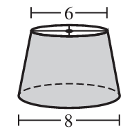
$ A.\;\; 3:7 \\[3ex] B.\;\; 3:4 \\[3ex] C.\;\; 9:16 \\[3ex] D.\;\; 4:3 \\[3ex] E.\;\; 16:9 \\[5ex] $
Let:
r be the radius of the circle modeled by the top edge of the lampshade
R be teh radius of the circle modeled by the bottom edge of the lampshade
$ radius = \dfrac{diameter}{2} \\[5ex] Area = \pi radius^2 \\[4ex] r = \dfrac{6}{2} = 3\;in \\[5ex] R = \dfrac{8}{2} = 4\;in \\[5ex] \text{Ratio of the areas} \\[3ex] = \dfrac{\pi (3)^2}{\pi (4)^2} \\[5ex] = \dfrac{9}{16} \\[5ex] = 9 : 16 \\[3ex] $
She will also choose 1 fabric: burlap, linen, or silk.
How many different possible lampshade designs does she have to choose from?
$ F.\;\; 7 \\[3ex] G.\;\; 11 \\[3ex] H.\;\; 12 \\[3ex] J.\;\; 24 \\[3ex] K.\;\; 48 \\[3ex] $
Given:
4 different print designs
4 different color schemes
1 fabric: burlap, linen, or silk: 3 materials
To Select:
1 print design
1 color scheme
1 fabric
The number of different possible lampshade designs does she have to choose from is:
$ = 4 \cdot 4 \cdot 3 \quad\dots\text{Fundamental Counting Principle} \\[3ex] = 48\text{ designs} $
A. Circle
B. Octagon
C. Pentagon
D. Rectangle
E. Isosceles trapezoid
The shape of Josie's lampshade is a truncated cone (also known as a frustrum).
When rotated about its vertical symmetry line, the isosceles trapezoid will form the shape of a truncated cone.
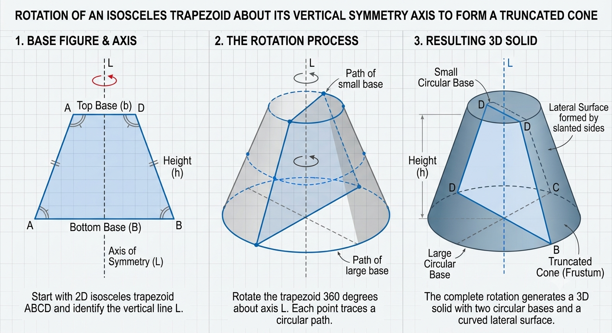
The coordinate of L is 0, and the coordinate of K is negative.
What is the coordinate of M?
$ F.\;\; 6 \\[3ex] G.\;\; 9 \\[3ex] H.\;\; 11 \\[3ex] J.\;\; 15 \\[3ex] K.\;\; 17 \\[3ex] $
Let the coordinate of K = −n
Let the coordinate of M = p
Let us represent the information diagrammatically:
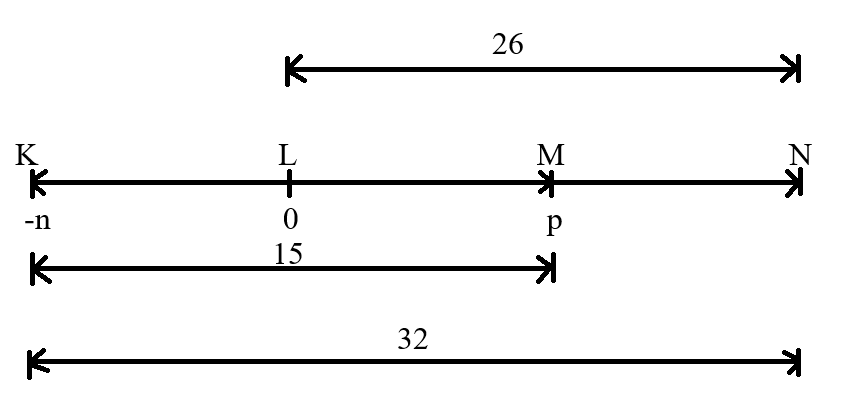
Let us use a table to solve the question for easier comprehension.
| $|KL|$ | $|KL|$ | $|KM|$ | $|KM|$ |
| $ 0 - (-n) \\[3ex] 0 + n \\[3ex] n $ | $ 32 - 26 \\[3ex] 6 $ | $ p - (-n) \\[3ex] p + n \\[3ex] $ | 15 |
| $n = 6$ | $ p + n = 15 \\[3ex] p + 6 = 15 \\[3ex] p = 15 - 6 \\[3ex] p = 9 $ | ||
The coordinate of M is 9.
Which of the following expressions must give the area of the shaded region, in square meters?
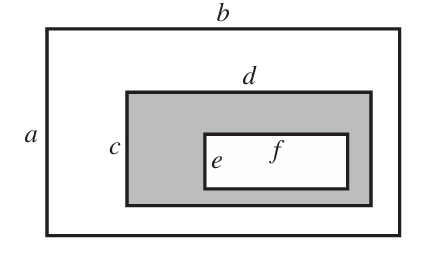
$ A.\;\; ab - cd \\[3ex] B.\;\; ab - ef \\[3ex] C.\;\; cd - ef \\[3ex] D.\;\; cd + ef \\[3ex] E.\;\; ab - cd + ef \\[3ex] $
$ \text{Area of a rectangle} = Length \cdot Width \\[3ex] \text{Area of the 1st (inner) rectangle},A_1 = f \cdot e = ef \\[4ex] \text{Area of the 2nd rectangle}, A_2 = d \cdot c = cd \\[4ex] \text{Area of the shaded region} = A_2 - A_1 \\[4ex] = cd - ef $
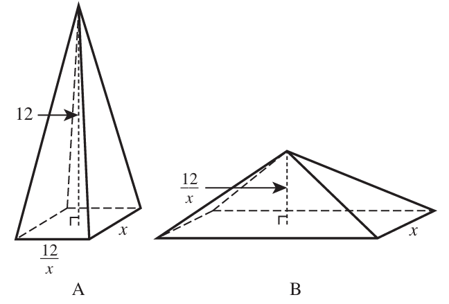
Let a and b be the volumes of A and B, respectively.
Which of the following equations is true?
$ F.\;\; a = \dfrac{1}{3}b \\[5ex] G.\;\; a = \dfrac{2}{3}b \\[5ex] H.\;\; a = b \\[3ex] J.\;\; a = \dfrac{3}{2}b \\[5ex] K.\;\; a = 3b \\[3ex] $
$ \underline{Rectangular\;\;Pyramid} \\[3ex] Volume = \dfrac{1}{3} \cdot Length \cdot Width \cdot \perp Height \\[5ex] a = \dfrac{1}{3} \cdot \dfrac{12}{x} \cdot x \cdot 12 \\[5ex] a = 48\;cubic\;feet \\[5ex] b = \dfrac{1}{3} \cdot 12 \cdot x \cdot \dfrac{12}{x} \\[5ex] b = 48\;cubic\;feet \\[5ex] a = b $
Her library has 64 songs that are remixes and 85 hip-hop songs.
Of the hip-hop songs in her library, 25 are remixes.
How many songs in her library are NEITHER remixes NOR hip-hop songs?
$ A.\;\; 75 \\[3ex] B.\;\; 100 \\[3ex] C.\;\; 125 \\[3ex] D.\;\; 139 \\[3ex] E.\;\; 224 \\[3ex] $
Let:
the number of remixes = R
the number of hip-hop somgs = H
Let us represent the information on a Venn Diagram

$ 39 + 60 + 25 + n(Neither) = 249 \\[3ex] n(Neither) = 249 - 39 - 60 - 25 \\[3ex] n(Neither) = 125 $
$ F.\;\; (x + 1)(x - 2) \\[3ex] G.\;\; (x + 1)(2 - x) \\[3ex] H.\;\; (x - 2)(2 - x) \\[3ex] J.\;\; (x - 1)(2 - x) \\[3ex] K.\;\; (x - 1)(x - 2) \\[3ex] $
$ x(x - 2) + (2 - x) \\[3ex] x(x - 2) + 1(2 - x) \\[3ex] x(x - 2) + -1(x - 2) \\[3ex] x(x - 2) - 1(x - 2) \\[3ex] (x - 2) (x - 1) \\[3ex] (x - 1)(x - 2) $
$ A.\;\; \dfrac{4}{3} \\[5ex] B.\;\; 4(a + b) \\[3ex] C.\;\; 6(a + b) \\[3ex] D.\;\; \dfrac{2(a + b)}{3} \\[5ex] E.\;\; \dfrac{4ab}{3(a + b)} \\[5ex] $
$ \dfrac{\dfrac{2}{a} + \dfrac{2}{b}}{\dfrac{3}{ab}} \\[10ex] = \left(\dfrac{2}{a} + \dfrac{2}{b}\right) \div \dfrac{3}{ab} \\[6ex] = \left(\dfrac{2b}{ab} + \dfrac{2a}{ab}\right) \cdot \dfrac{ab}{3} \\[6ex] = \dfrac{2b + 2a}{ab} \cdot \dfrac{ab}{3} \\[5ex] = \dfrac{2a + 2b}{3} \\[5ex] = \dfrac{2(a + b)}{3} $
Which of these ordered pairs represent speeds less than 4 miles per hour?
F. A and B only
G. B and C only
H. A, B, and C only
J. C, D, and E only
K. A, B, C, D, and E
$ s.......t.......d \\[3ex] s \cdot t = d \\[3ex] s = \dfrac{d}{t} \\[5ex] $
| A | B | C | D | E |
|---|---|---|---|---|
| $\dfrac{1}{0.25} = 4$ | $\dfrac{0.5}{0.2} = \color{darkblue}{2.5}$ | $\dfrac{7}{2} = \color{darkblue}{3.5}$ | $\dfrac{8}{0.5} = 16$ | $\dfrac{9}{0.75} = 12$ |
The ordered pairs that represents speeds less than 4 miles per hour (in darkblue color) are: B and C
Each 4-inch-long side of the red square is parallel to 2 sides of the white square and is 3 inches from the closest side of the white square.
A dart will be thrown randomly and will land on the dartboard.
What is the probability that the dart will land on the red square?

$ A.\;\; \dfrac{1}{10} \\[5ex] B.\;\; \dfrac{1}{7} \\[5ex] C.\;\; \dfrac{2}{5} \\[5ex] D.\;\; \dfrac{4}{25} \\[5ex] E.\;\; \dfrac{16}{49} \\[5ex] $
$ \text{Area of Red Square} = 4^2 = 16\text{ square inches} \\[4ex] \text{Area of Dartboard} = (3 + 4 + 3)^2 = 10^2 = 100\text{ square inches} \\[4ex] P(\text{Red Square}) = \dfrac{\text{Area of Red Square}}{\text{Area of Dartboard}} \\[5ex] = \dfrac{16}{100} \\[5ex] = \dfrac{4}{25} $
Which of the following expressions gives QR, in meters?

(Note: For a triangle with sides of length a, b, and c that are opposite angles $\angle A$, $\angle B$, $\angle C$, respectively, $\dfrac{\sin \angle A}{a} = \dfrac{\sin \angle B}{b} = \dfrac{\sin \angle C}{c}$)
$ F.\;\; \dfrac{110\sin 40^\circ}{\sin 60^\circ} \\[5ex] G.\;\; \dfrac{110\sin 40^\circ}{\sin 80^\circ} \\[5ex] H.\;\; \dfrac{110\sin 60^\circ}{\sin 40^\circ} \\[5ex] J.\;\; \dfrac{110\sin 80^\circ}{\sin 40^\circ} \\[5ex] K.\;\; \dfrac{110\sin 80^\circ}{\sin 60^\circ} \\[5ex] $
$ \angle Q + 40^\circ + 80^\circ = 180^\circ \quad\dots\text{sum of interior angles of a } \triangle \\[4ex] \angle Q = 180 - 40 - 80 \\[3ex] \angle Q = 60^\circ \\[5ex] \dfrac{QR}{\sin \angle P} = \dfrac{PR}{\sin \angle Q} \quad\dots\text{Sine Law} \\[5ex] \dfrac{QR}{\sin 40^\circ} = \dfrac{110}{\sin 60^\circ} \\[5ex] QR = \dfrac{110\sin 40^\circ}{\sin 60^\circ} $
$ \log_5{25} \\[4ex] = \log_5{5^2} \\[5ex] = 2\log_5{5} \quad\dots\text{Law 5 Log} \\[4ex] = 2 \cdot 1 \quad\dots\text{Law 4 Log} \\[3ex] = 2 $

Let B be the least whole number that is greater than $\sqrt{56}$.
What is A − B?
$ F.\;\; 12 \\[3ex] G.\;\; 13 \\[3ex] H.\;\; 14 \\[3ex] J.\;\; 18 \\[3ex] K.\;\; 19 \\[3ex] $
$ \sqrt{420} = 20.49390153 \\[3ex] A = 20 \\[5ex] \sqrt{56} = 7.483314774 \\[3ex] B = 8 \\[5ex] A - B \\[3ex] = 20 - 8 \\[3ex] = 12 $
Which of the following statements CANNOT be true?
A. Both numbers are irrational.
B. Both numbers are rational.
C. Both numbers are integers.
D. One number is positive, and the other is negative.
E. One number is rational, and the other is irrational.
Let us test each option.
In other words, let us determine any two real numbers whose product would not be a nonzero rational number.
$ \underline{\text{Option A}} \\[3ex] \sqrt{2} \;\;\;and\;\;\; \sqrt{2} \\[3ex] \sqrt{2} \cdot \sqrt{2} = \sqrt{2 \cdot 2} = \sqrt{4} = 2...True \\[3ex] NEXT \\[5ex] \underline{\text{Option B}} \\[3ex] \dfrac{5}{2} \;\;\;and\;\;\; \dfrac{2}{5} \\[5ex] \dfrac{5}{2} \cdot \dfrac{2}{5} = 1...True \\[5ex] NEXT \\[5ex] \underline{\text{Option C}} \\[3ex] 2 \;\;\;and\;\;\; 3 \\[3ex] 2 \cdot 3 = 6...True \\[3ex] NEXT \\[5ex] \underline{\text{Option D}} \\[3ex] 3 \;\;\;and\;\;\; -4 \\[3ex] 3 \cdot -4 = -12...True \\[3ex] NEXT \\[5ex] \underline{\text{Option E}} \\[3ex] 2 \;\;\;and\;\;\; \sqrt{2} \\[3ex] 2 \cdot \sqrt{2} = 2\sqrt{2}...Not\;\;True \\[3ex] $ Option E. is the correct answer.
A pump is used to move water in and out of a tank.
The pump is turned on at t = 0 seconds when there are 20 gallons in the tank.
The function V(t) represents the volume, in gallons, of water in the tank t seconds after the pump is turned on.
Shown below is the graph of V(t), which is a periodic function with a period of 9 seconds.
The 1st period of V(t) is shown as a solid line, and the rest is shown as dashed.
The pump remains on for 1 hour.

$ F.\;\; 6 \\[3ex] G.\;\; 54 \\[3ex] H.\;\; 360 \\[3ex] J.\;\; 400 \\[3ex] K.\;\; 540 \\[3ex] $
V(t) is a periodic function with a period of 9 seconds.
This implies: 9 seconds in 1 period
So, how many periods is 1 hour?
$ \underline{\text{Unity Fraction Method}} \\[3ex] \text{Set up units: } 1\;hour * \dfrac{...minutes}{...hour} * \dfrac{...seconds}{...minutes} * \dfrac{...periods}{...seconds} \\[5ex] \text{Set up measurements and units: } 1\;hour * \dfrac{60\;minutes}{1\;hour} * \dfrac{60\;seconds}{1\;minutes} * \dfrac{1\;periods}{9\;seconds} \\[5ex] 400\text{ periods} $
Which one?
$ A.\;\; 20 \\[3ex] B.\;\; 30 \\[3ex] C.\;\; 40 \\[3ex] D.\;\; 50 \\[3ex] E.\;\; 60 \\[3ex] $
From our observations of the graph:
The graph follows a periodic function...the same cycle repeats each period
The same cycle repeats every 9 seconds
So, in 51 seconds:
$ 51 = 9(5) + 6 \\[3ex] $ At the 6th second, the volume is 50 gallons.
This implies that after 51 seconds, the volume is 50 gallons.
In terms of gallons of water moved over time, this pump behaves the same as the other pump.
One of the following functions represents the volume, in gallons, of water in the 2nd tank t seconds after the pump is turned on.
Which one?
$ F.\;\; V(t) + 10 \\[3ex] G.\;\; V(t) + 30 \\[3ex] H.\;\; V(t + 10) \\[3ex] J.\;\; 10 \cdot V(t) \\[3ex] K.\;\; 30 \cdot V(t) \\[3ex] $
The pump is turned on at t = 0 seconds when there are 20 gallons in the tank.
The function V(t) represents the volume, in gallons, of water in the tank t seconds after the pump is turned on.
This implies that: $V(t) = 20$
A 2nd tank has 30 gallons in it when its pump is turned on at t = 0 seconds.
$ 30 = 20 + 10 \\[3ex] 30 = V(t) + 10 \\[3ex] $ This represents the volume, in gallons, of water in the 2nd tank t seconds after the pump is turned on.
The next day the class caught 60 bass from the lake and found that 9 of those bass were tagged.
Assuming the 60 bass caught are representative of the entire population of bass in the lake, which of the following is closest to the number of bass in the entire population?
$ A.\;\; 92 \\[3ex] B.\;\; 101 \\[3ex] C.\;\; 213 \\[3ex] D.\;\; 273 \\[3ex] E.\;\; 327 \\[3ex] $
1st Sample:
Number of tagged bass in the 1st sample = 32
Let the entire population of the bass in the lake = n
2nd Sample:
Number of tagged bass in the 2nd sample = 9
Sample size of 2nd sample = 60
$ \underline{\text{Capture-Recapture Method}} \\[3ex] \dfrac{32}{n} = \dfrac{9}{60} \\[5ex] 9n = 60 \cdot 32 \\[3ex] n = \dfrac{60 \cdot 32}{9} \\[5ex] n = 213.3\bar{3} \\[3ex] $ The correct answer is Option C.
The 2 graphs intersect at points A and B.
The solution of which of the following equations gives the x-coordinate of point A?
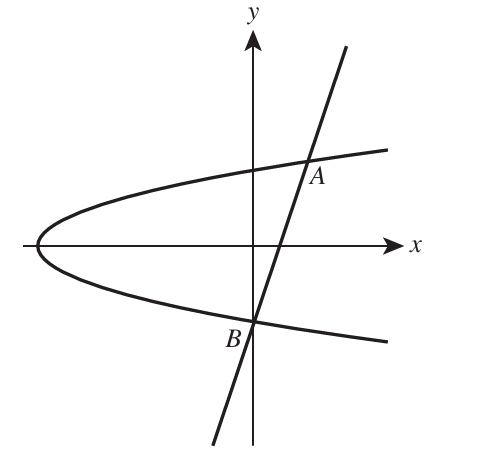
$ F.\;\; \sqrt{3x - 3} = -\sqrt{x + 8} \\[3ex] G.\;\; \sqrt{3x - 3} = \sqrt{x + 8} \\[3ex] H.\;\; 9x^2 - 9 = x + 8 \\[4ex] J.\;\; 3x - 3 = -\sqrt{x + 8} \\[3ex] K.\;\; 3x - 3 = \sqrt{x + 8} \\[3ex] $
$ \underline{\text{1st Graph}} \\[3ex] y^2 = x + 8 \\[4ex] y = \pm\sqrt{x + 8} \\[3ex] \text{For Point A:}\; y = \sqrt{x + 8} \quad\dots\text{because it is a positive}\;y-value \\[5ex] \underline{\text{2nd Graph}} \\[3ex] y = 3x - 3 \\[5ex] \underline{\text{Intersection of 1st Graph and 2nd Graph}} \\[3ex] y = y \\[3ex] \implies \\[3ex] 3x - 3 = \sqrt{x + 8} $
Each element is composed of small squares that are 8 mm wide and 8 mm long.
Each element after the 1st element is a square that is 8 mm wider and 8 mm longer than the previous element.
What is the area, in square centimeters, of the 4th element?

$ A.\;\; 16 \\[3ex] B.\;\; 20 \\[3ex] C.\;\; 25 \\[3ex] D.\;\; 40 \\[3ex] E.\;\; 64 \\[3ex] $
| 1st Element | 2nd Element | 3rd Element | 4th Element | |
|---|---|---|---|---|
| Length (mm) | $8 + 8 = 16$ | $16 + 8 = 24$ | $16 + 8(2) = 32$ | $16 + 8(3) = 40$ |
| Width (mm) | $8 + 8 = 16$ | $16 + 8 = 24$ | $16 + 8(2) = 32$ | $16 + 8(3) = 40$ |
| Area (mm²) | $16 \cdot 16$ | $24 \cdot 24$ | $32 \cdot 32$ | $40 \cdot 40 = 1600$ |
Convert 1600 mm² to cm²
$ \underline{\text{Unity Fraction Method}} \\[3ex] \text{Set up units: } 1600\;mm * mm * \dfrac{...m}{...mm} * \dfrac{...m}{...mm} * \dfrac{...cm}{...m} * \dfrac{...cm}{...m} \\[5ex] \text{Set up measurements and units: } 16 \cdot 10^2\;mm * mm * \dfrac{10^{-3}\;m}{1\;mm} * \dfrac{10^{-3}\;m}{1\;mm} * \dfrac{1\;cm}{10^{-2}\;m} * \dfrac{1\;cm}{10^{-2}\;m} \\[6ex] 16 \cdot 10^{2 - 3 - 3 + 2 + 2} \\[4ex] 16 \cdot 10^0 \\[4ex] 16 \cdot 1 \\[3ex] 16\;cm^2 $
The probability that the selected shirt will be long-sleeved is $\dfrac{13}{23}$.
The probability that the selected shirt will be white is $\dfrac{8}{23}$.
The probability that the selected shirt will be long-sleeved and white $\dfrac{3}{23}$.
What is the probability that the selected shirt will be long-sleeved or white or both?
$ F.\;\; \dfrac{7}{23} \\[5ex] G.\;\; \dfrac{8}{23} \\[5ex] H.\;\; \dfrac{18}{23} \\[5ex] J.\;\; \dfrac{22}{23} \\[5ex] K.\;\; \dfrac{24}{23} \\[5ex] $
Let:
a long-sleeved shirt = L
a white shirt = W
$ P(L) = \dfrac{13}{23} \\[5ex] P(W) = \dfrac{8}{23} \\[5ex] P(L \;\;and\;\; W) = \dfrac{3}{23} \\[5ex] P(L \;\;or\;\; W) = ? \\[5ex] P(L \;\;or\;\; W) = P(L) + P(W) - P(L \;\;and\;\; W) ...Addition\;\;Rule \\[3ex] = \dfrac{13}{23} + \dfrac{8}{23} - \dfrac{3}{23} \\[5ex] = \dfrac{13 + 8 - 3}{23} \\[5ex] = \dfrac{18}{23} $
The endpoints of the major and minor axes of the ellipse are labeled.
Which of the following equations determines this ellipse?
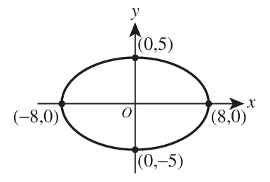
$ A.\;\; (x - 8)^2 + (y - 5)^2 = 1 \\[4ex] B.\;\; (x + 8)^2 + (y + 5)^2 = 1 \\[4ex] C.\;\; \dfrac{x^2}{8} + \dfrac{y^2}{5} = 1 \\[6ex] D.\;\; \dfrac{x^2}{16} + \dfrac{y^2}{10} = 1 \\[6ex] E.\;\; \dfrac{x^2}{64} + \dfrac{y^2}{25} = 1 \\[6ex] $
This is a Horizontal Ellipse
The easiest approach to solve these kinds of questions on ellipses because ACT is a timed test.
$ a = 8 \\[3ex] b = 5 \\[3ex] (h, k) = (0, 0) \\[3ex] \dfrac{(x - h)^2}{a^2} + \dfrac{(y - k)^2}{b^2} = 1 \\[6ex] \dfrac{(x - 0)^2}{8^2} + \dfrac{(y - 0)^2}{5^2} = 1 \\[6ex] \dfrac{x^2}{64} + \dfrac{y^2}{25} = 1 \\[5ex] $ Student: I would like to learn to solve it without considering the 1-minute per question time of the ACT.
May you please explain the solution?
Show all work.
Teacher: Sure, let's do it.
$ \underline{Center} \\[3ex] Center = (h, k) = origin = (0, 0) \\[3ex] $ We can calculate the length of both axis using at least two approaches: the major axis and the minor axis
Use any approach you prefer.
$ \underline{First\;\;Approach:\;\;Distance\;\;Formula} \\[3ex] distance = \sqrt{(x_2 - x_1)^2 + (y_2 - y_1)^2} \\[5ex] \text{Major Axis = x-axis} \\[3ex] Endpoints = (-8, 0)\;\;and\;\;(8, 0) \\[3ex] Point\;1 = (-8, 0) \\[3ex] x_1 = -8 \\[4ex] y_1 = 0 \\[4ex] Point\;2 = (8, 0) \\[3ex] x_2 = 8 \\[4ex] y_2 = 0 \\[4ex] distance = \sqrt{(8 - -8)^2 + (0 - 0)^2} \\[4ex] = \sqrt{(8 + 8)^2 + (0)^2} \\[4ex] = \sqrt{16^2 + 0^2} \\[4ex] = \sqrt{256 + 0} \\[4ex] = \sqrt{256} \\[3ex] = 16 \\[3ex] a = \dfrac{16}{2} \\[5ex] a = 8 \\[5ex] \text{Minor Axis = y-axis} \\[3ex] Endpoints = (0, 5)\;\;and\;\;(0, -5) \\[3ex] Point\;1 = (0, 5) \\[3ex] x_1 = 0 \\[4ex] y_1 = 5 \\[4ex] Point\;2 = (0, -5) \\[3ex] x_2 = 0 \\[4ex] y_2 = -5 \\[4ex] distance = \sqrt{(0 - 0)^2 + (-5 - 5)^2} \\[4ex] = \sqrt{0^2 + (-10)^2} \\[4ex] = \sqrt{0 + 100} \\[4ex] = \sqrt{100} \\[3ex] = 10 \\[3ex] b = \dfrac{10}{2} \\[5ex] b = 5 \\[5ex] \underline{Second\;\;Approach:\;\;Coordinates} \\[3ex] \text{Major Axis = x-axis} \\[3ex] Half-length = a \\[3ex] Endpoints = (-8, 0)\;\;and\;\;(8, 0) \\[3ex] x-coordinates\;\;of\;\;Endpoints = -8\;\;and\;\;8 \\[3ex] x-coordinate\;\;of\;\;Center = 0 \\[3ex] \implies \\[3ex] -8 + a = 0 \;\;\;OR\;\;\; 8 - a = 0 \\[3ex] a = 0 + 8 \;\;\;OR\;\;\; 8 - 0 = a \\[3ex] a = 8 \\[5ex] \text{Minor Axis = y-axis} \\[3ex] Half-length = b \\[3ex] Endpoints = (0, 5)\;\;and\;\;(0, -5) \\[3ex] y-coordinates\;\;of\;\;Endpoints = 5\;\;and\;\;-5 \\[3ex] y-coordinate\;\;of\;\;Center = 0 \\[3ex] \implies \\[3ex] 5 - b = 0 \;\;\;OR\;\;\; -5 + b = 0 \\[3ex] 5 + 0 = b \;\;\;OR\;\;\; b = 0 + 5 \\[3ex] b = 5 \\[5ex] \underline{Standard\;\;Form} \\[3ex] \dfrac{(x - h)^2}{a^2} + \dfrac{(y - k)^2}{b^2} = 1 \\[5ex] \dfrac{(x - 0)^2}{8^2} + \dfrac{(y - 0)^2}{5^2} = 1 \\[5ex] \dfrac{x^2}{64} + \dfrac{y^2}{25} = 1 \\[5ex] LCD = 64 \cdot 25 = 1600 \\[3ex] 1600 \cdot \dfrac{x^2}{64} + 1600 \cdot \dfrac{y^2}{25} = 1600(1) \\[5ex] 25x^2 + 64y^2 = 1600 $
II. b < 0
III. b < a
F. I only
G. II only
H. I and III only
J. II and III only
K. I, II, and III
$ For\;\; a - b \gt a + b \\[3ex] a - a \gt b + b \\[3ex] 0 \gt 2b \\[3ex] 2b \lt 0 \\[3ex] b \lt \dfrac{0}{2} \\[5ex] b \lt 0 \\[3ex] $ This is a necessary condition.
The correct answer is Option G.
$ A.\;\; -31 \\[3ex] B.\;\; -29 \\[3ex] C.\;\; \sqrt[3]{\dfrac{5}{3}} \\[5ex] D.\;\; \dfrac{5}{3} \\[5ex] E.\;\; \dfrac{31}{2} \\[5ex] $
$ f(x) = 3x^3 - 7 \\[3ex] f(-2) = 3(-2)^3 - 7 \\[3ex] = 3(-8) - 7 \\[3ex] = -24 - 7 \\[3ex] = -31 $
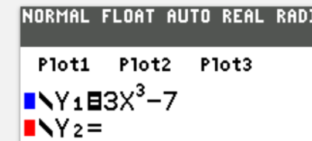
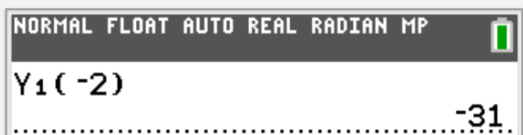
What is the probability of randomly drawing a card that is NOT Card A?
$ F.\;\; 0 \\[3ex] G.\;\; \dfrac{1}{8} \\[5ex] H.\;\; \dfrac{1}{7} \\[5ex] J.\;\; \dfrac{1}{4} \\[5ex] K.\;\; \dfrac{7}{8} \\[5ex] $
$ \text{P(Card A)} + \text{P(Not Card A)} = 1 \quad\dots\text{Complementary Rule} \\[3ex] \dfrac{1}{8} + \text{P(Not Card A)} = 1 \\[3ex] \text{P(Not Card A)} = 1 - \dfrac{1}{8} \\[5ex] = \dfrac{7}{8} $
Based on the sample data, what is the best estimate of Dawn’s average rating of all the books in the library?
$ A.\;\; 10 \\[3ex] B.\;\; 40 \\[3ex] C.\;\; 43 \\[3ex] D.\;\; 45 \\[3ex] E.\;\; 80 \\[3ex] $
$ \text{Average} = \dfrac{40 + 60 + 10 + 80 + 30 + 40}{6} \\[5ex] = \dfrac{260}{6} \\[5ex] = 43.\bar{3} \\[3ex] \approx 43 \quad\dots\text{to the nearest whole number.} $
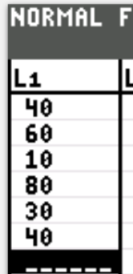
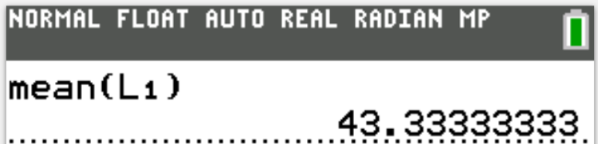
Given that the player is set to randomly shuffle the song selection, what is the probability, rounded to the nearest thousandth, the Ist song played will be a country song?
$ F.\;\; 0.003 \\[3ex] G.\;\; 0.014 \\[3ex] H.\;\; 0.200 \\[3ex] J.\;\; 0.250 \\[3ex] K.\;\; 0.720 \\[3ex] $
Sample Space, S = {153 rap songs, 72 country songs, 14 jazz songs, and 121 rock songs.}
n(S) = 153 + 72 + 14 + 121 = 360
$ P(\text{country song}) = \dfrac{n(\text{country songs})}{n(S)} \\[5ex] = \dfrac{72}{360} \\[5ex] = 0.2 $
The bus has 0 passengers before Stop 1.
After Stop 5, there are 13 passengers remaining on the bus.
How many passengers did the bus pick up at Stop 1?
| Stop | Passenger pickup/drop-off |
| 1 | ? |
| 2 | Picks up 3 passengers |
| 3 | Drops off $\dfrac{1}{2}$ of all passengers |
| 4 | Picks up 11 passengers |
| 5 | Drops off $\dfrac{1}{2}$ of all passengers |
$ A.\;\; 1 \\[3ex] B.\;\; 10 \\[3ex] C.\;\; 27 \\[3ex] D.\;\; 33 \\[3ex] E.\;\; 71 \\[3ex] $
Let the number of passengers picked up at Stop 1 = x
$ \text{Stop 1: Pick up } x \text{ passengers} \\[3ex] \text{Remaining: } x \\[5ex] \text{Stop 2: Picks up 3 passengers} \implies x + 3 \\[3ex] \text{Remaining: } x + 3 \\[5ex] \text{Stop 3: Drops off } \dfrac{1}{2} \text{ of all passengers} \implies \dfrac{1}{2} * (x + 3) = \dfrac{x + 3}{2} \\[5ex] \text{Remaining: } (x + 3) - \dfrac{x + 3}{2} \\[5ex] = \dfrac{2(x + 3) - (x + 3)}{2} \\[5ex] = \dfrac{2x + 6 - x - 3}{2} \\[5ex] = \dfrac{x + 3}{2} \\[5ex] \text{Stop 4: Picks up 11 passengers} \implies \dfrac{x + 3}{2} + 11 \\[5ex] \text{Remaining: } \dfrac{x + 3}{2} + 11 \\[5ex] = \dfrac{x + 3 + 22}{2} \\[5ex] = \dfrac{x + 25}{2} \\[5ex] \text{Stop 5: Drops off } \dfrac{1}{2} \text{ of all passengers} \implies \dfrac{1}{2} * \dfrac{x + 25}{2} \\[5ex] = \dfrac{x + 25}{4} \\[5ex] \text{Remaining: } \dfrac{x + 25}{2} - \dfrac{x + 25}{4} \\[5ex] = \dfrac{2(x + 25) - (x + 25)}{4} \\[5ex] = \dfrac{2x + 50 - x - 25}{4} \\[5ex] = \dfrac{x + 25}{4} \\[5ex] \text{Remaining: } = 13 \quad\dots\text{Given} \\[3ex] \implies \\[3ex] \dfrac{x + 25}{4} = 13 \\[5ex] x + 25 = 4(13) \\[3ex] x = 52 - 25 \\[3ex] x = 27 $
$ F.\;\; \sqrt{22} \\[3ex] G.\;\; \sqrt{55} \\[3ex] H.\;\; \sqrt{73} \\[3ex] J.\;\; 5.5 \\[3ex] K.\;\; 11 \\[3ex] $
$ \text{hypotenuse}^2 = \text{leg}^2 + \text{leg}^2 \quad\dots\text{Pythagorean Theorem} \\[3ex] = 8^2 + 3^2 \\[3ex] = 64 + 9 \\[3ex] = 73 \\[3ex] \text{hypotenuse} = \sqrt{73}\text{ inches.} $
$ A.\;\; -24 \\[3ex] B.\;\; -16 \\[3ex] C.\;\; 16 \\[3ex] D.\;\; 24 \\[3ex] E.\;\; 400 \\[3ex] $
$ x = 100 \\[3ex] y = -20 \\[3ex] x + y = 100 + (-20) \\[3ex] = 100 - 20 \\[3ex] = 80 \\[5ex] 80 = -5 * \text{what} \\[3ex] \text{what} = \dfrac{80}{-5} \\[5ex] \text{what} = -16 $
If $a = 5$ and $a \otimes b = 100$, what is the value of $b$?
$ F.\;\; 2 \\[3ex] G.\;\; 4 \\[3ex] H.\;\; 20 \\[3ex] J.\;\; 500 \\[3ex] K.\;\; 2,500 \\[3ex] $
$ a = 5 \\[3ex] a \otimes b = a^2b = 100 \\[3ex] \implies \\[3ex] 5^2 * b = 100 \\[3ex] b = \dfrac{100}{5^2} \\[5ex] = \dfrac{100}{25} \\[5ex] = 4 $
What is the distance, in centimeters, between T and the midpoint of $\overline{RS}$?
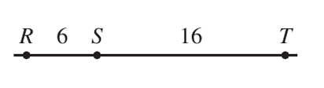
$ A.\;\; 11 \\[3ex] B.\;\; 14 \\[3ex] C.\;\; 16 \\[3ex] D.\;\; 19 \\[3ex] E.\;\; 22 \\[3ex] $
$ \text{Midpoint of } \overline{RS} = \dfrac{1}{2} * 6 = 3 \\[5ex] \text{Distance between } T \text{ and the midpoint of } \overline{RS} \\[3ex] = 3 + 16 \\[3ex] = 19\text{cm} $
$ F.\;\; \begin{bmatrix} -10 & 2 \\ 1 & -4 \end{bmatrix} \\[7ex] G.\;\; \begin{bmatrix} -10 & 1 \\ 2 & -4 \end{bmatrix} \\[7ex] H.\;\; \begin{bmatrix} 6 & 11 \\ 4 & -12 \end{bmatrix} \\[7ex] J.\;\; \begin{bmatrix} 6 & 4 \\ 11 & -12 \end{bmatrix} \\[7ex] K.\;\; \begin{bmatrix} 10 & -1 \\ -2 & 4 \end{bmatrix} \\[7ex] $
$ A - B \\[3ex] = \begin{bmatrix} -2 & 6 \\ 3 & -8 \end{bmatrix} - \begin{bmatrix} 8 & 5 \\ 1 & -4 \end{bmatrix} \\[7ex] = \begin{bmatrix} -2 - 8 & 6 - 5 \\ 3 - 1 & -8 - (-4) \end{bmatrix} \\[7ex] = \begin{bmatrix} -10 & 1 \\ 2 & -4 \end{bmatrix} $
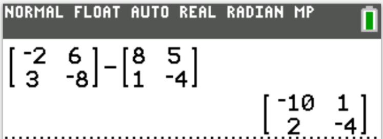
Which one?
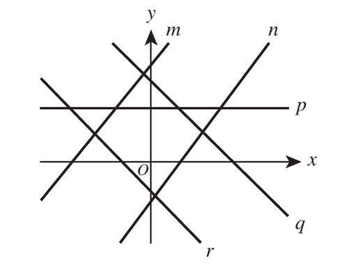
$ A.\;\; m \\[3ex] B.\;\; n \\[3ex] C.\;\; p \\[3ex] D.\;\; q \\[3ex] E.\;\; r \\[3ex] $
Let us identify the nature of the slope and the y-intercept for each line.
Line r
Negative slope
Negative y-intercept
Option E. is the correct answer.
Line q
Negative slope
Positive y-intercept
Line m
Positive slope
Positive y-intercept
Line n
Positive slope
Negative y-intercept
Line p
Zero slope
Positive y-intercept
What is the measure of each of the 2 base angles?
$ F.\;\; 17^\circ \\[3ex] G.\;\; 34^\circ \\[3ex] H.\;\; 68^\circ \\[3ex] J.\;\; 73^\circ \\[3ex] K.\;\; 112^\circ \\[3ex] $
$ \text{base angle} + \text{base angle} + \text{vertex angle} = 180^\circ \quad\dots\text{Sum of angles in a triangle} \\[3ex] 2\text{base angle} + 34 = 180 \\[3ex] \text{base angle} = \dfrac{180 - 34}{2} \\[5ex] = \dfrac{146}{2} \\[5ex] = 73^\circ $
The large figurines sold for $12 each, and the small figurines sold for $4 each.
The amount of money he received from the sales of the large figurines was equal to the amount of money he received from the sales of the small figurines.
How many large figurines did Reed sell this month?
$ A.\;\; 10 \\[3ex] B.\;\; 16 \\[3ex] C.\;\; 20 \\[3ex] D.\;\; 24 \\[3ex] E.\;\; 30 \\[3ex] $
Let the:
number of large figurines = p
number of small figurines = k
This month, Reed sold 40 figurines in 2 sizes.
$p + k = 40$
Revenue from the sale of large figurines:p
The large figurines sold for $12 each
p figurines @ $12 per figurine = $12p$
Revenue from the sale of small figurines:k
and the small figurines sold for $4 each.
k figurines @ $4 per figurine = $4k$
The amount of money he received from the sales of the large figurines was equal to the amount of money he received from the sales of the small figurines.
$12p = 4k$
$ p + k = 40 \quad\dots eqn.(1) \\[3ex] 12p = 4k \quad\dots eqn.(2) \\[5ex] \text{From } eqn.(2) \\[3ex] k = \dfrac{12p}{4} \\[5ex] k = 3p \\[5ex] \text{Substitute for } k \text{ in } eqn.(1) \\[3ex] p + 3p = 40 \\[3ex] 4p = 40 \\[3ex] p = \dfrac{40}{4} \\[5ex] p = 10 $
$ p + k = 40 \quad\dots eqn.(1) \\[3ex] 12p = 4k \\[3ex] 12p - 4k = 0 \quad\dots eqn.(2) \\[3ex] $
What is the 2nd term of this sequence?
$ F.\;\; -44 \\[3ex] G.\;\; -36 \\[3ex] H.\;\; 8 \\[3ex] J.\;\; 20 \\[3ex] K.\;\; 28 \\[3ex] $
$ \text{first term} = a \\[3ex] \text{common difference} = d \\[3ex] \text{number of terms} = n \\[3ex] \text{nth term} = AS_{n} = a + d(n - 1) \\[5ex] AS_7 = a + 6d = 4 \quad\dots eqn.(1) \\[3ex] AS_8 = a + 7d = 12 \quad\dots eqn.(2) \\[3ex] d = AS_8 - AS_7 \quad\dots\text{common difference} \\[3ex] d = 12 - 4 = 8 \\[5ex] \text{Substitute for } d \text{ in } eqn.(1) \\[3ex] a + 6(8) = 4 \\[3ex] a + 48 = 4 \\[3ex] a = 4 - 48 \\[3ex] a = -44 \\[5ex] AS_2 = a + d \\[3ex] = -44 + 8 \\[3ex] = -36 $
What is the least number of its remaining 12 games the team must win to finish the season winning more than 50% of all the team’s games?
$ A.\;\; 3 \\[3ex] B.\;\; 5 \\[3ex] C.\;\; 6 \\[3ex] D.\;\; 7 \\[3ex] E.\;\; 12 \\[3ex] $
$ \underline{\text{Cross High School Girls' Softball Team}} \\[3ex] 14\text{ wins} \\[3ex] 11\text{ losses} \\[3ex] 0\text{ ties} \\[3ex] 12\text{ remaining games} \\[3ex] \text{All teams games} = 14 + 11 + 0 + 12 = 37 \\[5ex] \text{50% of 37} = \dfrac{50}{100} * 37 = 18.5 \\[5ex] \text{Remaining must wins} = 18.5 - 14 = 4.5 \quad\dots\text{for 50% of all teams games} \\[3ex] \approx 5 \\[3ex] $ The least number of its remaining 12 games the team must win to finish the season winning more than 50% of all the team’s games is 5 games.
The equation for the object's height, h, at time t seconds after launch is $h(t) = -4.9t^2 + 49t + 980$, where h is in meters.
What will be the height, in meters, of the object 6 seconds after launch?
$ F.\;\; 980.0 \\[3ex] G.\;\; 1,097.6 \\[3ex] H.\;\; 1,274.0 \\[3ex] J.\;\; 1,332.8 \\[3ex] K.\;\; 1,450.4 \\[3ex] $
$ h(t) = -4.9t^2 + 49t + 980 \\[3ex] t = 6\text{ seconds} \\[3ex] h(6) = -4.9(6)^2 + 49(6) + 980 \\[3ex] = -176.4 + 294 + 980 \\[3ex] = 1097.6\text{ meters.} $
The rule to find each subsequent term is to multiply the previous term by 2 and then subtract 1.
The Ist term of Pattern B is 2.
The rule to find each subsequent term is to subtract 1 from the previous term and then multiply by 2.
What is the sum of the 4th terms of Pattern A and Pattern B?
$ A.\;\; 0 \\[3ex] B.\;\; 4 \\[3ex] C.\;\; 11 \\[3ex] D.\;\; 18 \\[3ex] E.\;\; 19 \\[3ex] $
$ \underline{\text{Pattern A}} \\[3ex] \text{1st term: } 2 \\[3ex] \text{2nd term: } 2(2) - 1 = 4 - 1 = 3 \\[3ex] \text{3rd term: } 2(3) - 1 = 6 - 1 = 5 \\[3ex] \text{4th term: } 2(5) - 1 = 10 - 1 = 9 \\[5ex] \underline{\text{Pattern B}} \\[3ex] \text{1st term: } 2 \\[3ex] \text{2nd term: } (2 - 1) * 2 = 1 * 2 = 2 \\[3ex] \text{3rd term: } (2 - 1) * 2 = 1 * 2 = 2 \\[3ex] \text{4th term: } (2 - 1) * 2 = 1 * 2 = 2 \\[5ex] \text{4th term of Pattern A} + \text{4th term of Pattern B} \\[3ex] = 9 + 2 \\[3ex] = 11 $
$ F.\;\; x - 13 \\[3ex] G.\;\; x - 12 \\[3ex] H.\;\; x + 2 \\[3ex] J.\;\; x + 13 \\[3ex] K.\;\; x + 78 \\[3ex] $
$ x^2 - x - 156 \\[3ex] \text{Factors are: } 12 \text{ and } -13 \\[3ex] (x + 12)(x - 13) $
Which one?
$ 4x - 2 \le 10 \\[3ex] 4x \le 10 + 2 \\[3ex] 4x \le 12 \\[3ex] x \le \dfrac{12}{4} \\[5ex] x \le 3 \\[3ex] $ The correct answer is:
Which of the following statements about the value of 15y must be true?
F. It is rational.
G. It is irrational.
H. It is imaginary.
J. It is undefined.
K. It is neither irrational nor rational.
Multiplying an irrational number by a rational number besides zero gives an irrational number.
If y is an irrational number, then 15y must be an irrational number.
Which one?
$ A.\;\; y = -1.7x - 0.1 \\[3ex] B.\;\; y = -0.1x + 1.7 \\[3ex] C.\;\; y = -0.1x - 1.7 \\[3ex] D.\;\; y = 0.1x + 1.7 \\[3ex] E.\;\; y = 1.7x - 0.1 \\[3ex] $
$ \underline{\text{Equation of a Straight Line}} \\[3ex] y = mx + b \\[3ex] \text{where } \\[3ex] m = \text{slope} \\[3ex] b = y-\text{intercept} \\[3ex] $ The scatterplot has a negative slope and a positive y-intercept
This corresponds to option B.
What is the midpoint of $\overline{GH}$?
$ F.\;\; (4, 10) \\[3ex] G.\;\; (6, 8) \\[3ex] H.\;\; (6, 10) \\[3ex] J.\;\; (8, 8) \\[3ex] K.\;\; (8, 10) \\[3ex] $
$ \text{Points: } G(2, 6) \text{ and } H(10, 14) \\[3ex] \text{Midpoint of } \overline{GH} = \left(\dfrac{2 + 10}{2}, \dfrac{6 + 14}{2}\right) \\[5ex] = \left(\dfrac{12}{2}, \dfrac{20}{2}\right) \\[5ex] = (6, 10) $
The mechanical shaft is along the longer leg of the triangle that represents the blade.
In the diagram below, the figure on the left shows the blade at rest, and the figure on the right shows a bottom view of the blade in motion.
One of the following solids is generated as the blade rotates about the shaft.
Which one?
A. Cone
B. Cylinder
C. Sphere
D. Triangular prism
E. Triangular pyramid
When a two-dimensional shape is rotated about one of its sides and if the rotation causes the shape’s area to sweep through space, it generates a three-dimensional solid.
In this case, since the blade (a right triangle) rotates about its longer leg, the solid formed is a cone.
The sum of the squares of the 2 numbers is 260.
What is the product of the 2 numbers?
$ F.\;\; 105 \\[3ex] G.\;\; 112 \\[3ex] H.\;\; 121 \\[3ex] J.\;\; 224 \\[3ex] K.\;\; 5,720 \\[3ex] $
Let the 2 numbers be x, y respectively.
The sum of 2 numbers is 22.
$x + y = 22$
The sum of the squares of the 2 numbers is 260.
$x^2 + y^2 = 260$
$ x + y = 22 \quad\dots eqn.(1) \\[3ex] x^2 + y^2 = 260 \quad\dots eqn.(2) \\[5ex] \text{From } eqn.(2) \\[3ex] (x + y)^2 = (x + y)(x + y) \\[3ex] (x + y)^2 = x^2 + xy + xy + y^2 \\[3ex] (x + y)^2 = x^2 + y^2 + 2xy \\[3ex] x^2 + y^2 + 2xy = (x + y)^2 \\[3ex] \text{Substitute for the LHS expressions accordingly in both equations} \\[3ex] 260 + 2xy = 22^2 \\[3ex] 2xy = 484 - 260 \\[3ex] xy = \dfrac{224}{2} \\[5ex] xy = 112 $
One of the following transformations or sequences of transformations would map Trapezoid A onto Trapezoid B.
Which one?
A. Reflection over the line $y = x$
B. Reflection over the line $y = -x$
C. Rotation of 180° around the origin.
D. Reflection over the y-axis and then a reflection over the x-axis
E. Reflection over the x-axis and then a translation to the left.
There are several transformations that can map Trapezoid A onto Trapezoid B.
We are not given the points of the vertices of both trapezoids.
So, we shall visually check the answer choices to determine the correct option.
Reflection of image A over the x-axis leads to image A'
Then, translation (sliding) of image A' to the left leads to image B
One point on the circle has a y-coordinate greater than that of any other point on the circle.
What is the y-coordinate of that point?
$ F.\;\; 3 \\[3ex] G.\;\; 7 \\[3ex] H.\;\; 8 \\[3ex] J.\;\; 9 \\[3ex] K.\;\; 13 \\[3ex] $
The highest point is the topmost point of the circle, found by adding the radius to the y-coordinate of the center.
It is found by moving vertically upward from the center by the length of the radius.
So, for a circle center (5, 4) and a radius of 3 units:
the y-coordinate = 4 + 3 = 7.
Which one?
$ A.\;\; y = \dfrac{a}{x} \\[5ex] B.\;\; y = a^x \\[3ex] C.\;\; y = ax + b \\[3ex] D.\;\; y = ax^2 + bx + c \\[3ex] E.\;\; y = |ax + b| + c \\[3ex] $
The graph is that of a quadratic (squaring) function.
The correct answer is Option D.
His car’s fuel tank holds 16 gallons and is $\dfrac{3}{4}$ full of fuel.
Given that his car travels 22 miles per gallon of fuel and he doesn’t stop for fuel, how many gallons of fuel will be in his tank when he gets home?
$ F.\;\; 1.5 \\[3ex] G.\;\; 4 \\[3ex] H.\;\; 5.5 \\[3ex] J.\;\; 10 \\[3ex] K.\;\; 10.5 \\[3ex] $
$ \text{Car's fuel tank} = 16 \text{ gallons} \\[3ex] \dfrac{3}{4} \text{ full of fuel} = \dfrac{3}{4} * 16 = 12\text{ gallons} \\[5ex] 231\text{ miles away from home} \\[3ex] 22\text{ miles per gallon} \\[3ex] \text{How many gallons are needed to get home?} \\[3ex] 231\text{ miles} * \dfrac{1\text{ gallon}}{22\text{ miles}} \\[5ex] = 10.5\text{ gallons} \\[5ex] \text{Remaining gallons} = 12 - 10.5 \\[3ex] = 1.5\text{ gallons} $
The legs of each of these triangles are shown dashed, and their lengths are labeled in feet.
The point on each triangle that is farthest from O is labeled A, B, C, D, or E.
A circle centered at O with a radius of 10 feet will be drawn.
Which of the following points is outside of this circle?
$ A.\;\; A \\[3ex] B.\;\; B \\[3ex] C.\;\; C \\[3ex] D.\;\; D \\[3ex] E.\;\; E \\[3ex] $
The point on each triangle that is farthest from O is labeled A, B, C, D, or E.
The length of each of these points from the center are the hypotenuses of the right triangles.
They are also the radii of the circle.
A circle centered at O with a radius of 10 feet will be drawn.
So, any hypotenuse greater than 10 feet will be outside the circle.
The hypotenuse is the longest side of a right traingle.
For the point E, the hypotenuse will be greater than 10 feet because one of the legs is 10 feet.
In other words, $\overline{OE}$ will be outside of the circle because it is greater than 10 feet.
What is the total amount of money Albert will be paid in contest winnings?
(Note: For arithmetic series, $S_n = \dfrac{n(t_1 + t_n)}{2}$, $S_n$ is the sum of the first n terms of a sequence such that $t_1$ is the 1st term and $t_n$ is the nth term.)
$ F.\;\; \$ 730.00 \\[3ex] G.\;\; \$ 33,397.50 \\[3ex] H.\;\; \$ 66,612.50 \\[3ex] J.\;\; \$ 66.795.00 \\[3ex] K.\;\; \$ 133,225.00 \\[3ex] $
$ n = 365\text{ days} \\[3ex] t_1 = \$ 1 \\[3ex] t_n = \$ 365 \\[3ex] S_n = \dfrac{n(t_1 + t_n)}{2} \\[5ex] S_{365} = \dfrac{365(1 + 365)}{2} \\[5ex] = \dfrac{365(366)}{2} \\[5ex] = \$ 66795 $
What is the value of $g(f(5))$?
| $x$ | $f(x)$ |
|---|---|
| −6 | 7 |
| −4 | −6 |
| 3 | 5 |
| 5 | 4 |
| $x$ | $g(x)$ |
|---|---|
| −4 | 5 |
| 3 | −3 |
| 4 | −5 |
| 5 | −6 |
$ A.\;\; -24 \\[3ex] B.\;\; -6 \\[3ex] C.\;\; -5 \\[3ex] D.\;\; 4 \\[3ex] E.\;\; 7 \\[3ex] $
$ \text{For } g(f(5)) \\[3ex] \text{1st: } f(5) = 4 \\[3ex] \text{2nd: } g(4) = -5 \\[3ex] \therefore g(f(5)) = -5 $
What is the value of x?
$ F.\;\; 5 \\[3ex] G.\;\; 10 \\[3ex] H.\;\; 17.5 \\[3ex] J.\;\; 40 \\[3ex] K.\;\; 50 \\[3ex] $
$ (3x + 5)^\circ + (x + 15)^\circ = 180^\circ \quad\dots\text{consecutive interior angles are supplementary} \\[3ex] 3x + 5 + x + 15 = 180 \\[3ex] 4x = 180 - 5 - 15 \\[3ex] 4x = 160 \\[3ex] x = \dfrac{160}{4} \\[5ex] x = 40^\circ $
$ (2\sqrt{7} + 1)(\sqrt{7} - 1) - (\sqrt{7} - 1) \\[3ex] 2(7) - 2\sqrt{7} + \sqrt{7} - 1 - \sqrt{7} + 1 \\[3ex] 14 - 2\sqrt{7} $
$ F.\;\; -14 - 21i \\[3ex] G.\;\; 1 - 3i \\[3ex] H.\;\; 2 - 21i \\[3ex] J.\;\; 2 + 9i \\[3ex] K.\;\; 14 + 9i \\[3ex] $
$ -2i(3 + 4i) - 3(2 + 5i) \\[3ex] -6i - 8i^2 - 6 - 15i \\[3ex] -8(-1) - 6 - 6i - 15i \\[3ex] 8 - 6 - 21i \\[3ex] 2 - 21i $
The owner recorded the number of different ice-cream flavors and 1-topping combinations that were purchased, as shown in the table below.
To the nearest 0.01, what is the probability that a randomly selected patron purchased a scoop of vanilla ice cream topped with sprinkles?
| Sprinkles | Syrup | Fruit | Total | |
|
Vanilla Chocolate Swirl |
77 107 118 |
38 55 110 |
60 21 59 |
175 183 287 |
| Total | 302 | 203 | 140 | 645 |
$ A.\;\; 0.12 \\[3ex] B.\;\; 0.25 \\[3ex] C.\;\; 0.27 \\[3ex] D.\;\; 0.44 \\[3ex] E.\;\; 0.47 \\[3ex] $
$ n(\text{Vanilla with Sprinkles}) = 77 \\[3ex] n(\text{Total}) = 645 \\[5ex] P(\text{Vanilla with Sprinkles}) = \dfrac{n(\text{Vanilla with Sprinkles})}{n(\text{Total})} \\[5ex] = \dfrac{77}{645} \\[5ex] = 0.119379845 \\[3ex] \approx 0.12 \quad\dots\text{to the nearest 0.01} $
One of the following defines f.
$f(x) = $?
$ F.\;\; \begin{cases} 5 & \text{for} & x \lt -2 \\ 3 & \text{for} & x = -2 \\ 2 & \text{for} & x \gt -2 \end{cases} \\[7ex] G.\;\; \begin{cases} 5 & \text{for} & x \le -2 \\ 3 & \text{for} & x = -2 \\ 2 & \text{for} & x \gt -2 \end{cases} \\[7ex] H.\;\; \begin{cases} 5 & \text{for} & x \lt -2 \\ 3 & \text{for} & x = -2 \\ 2 & \text{for} & x \ge -2 \end{cases} \\[7ex] J.\;\; \begin{cases} 5 & \text{for} & x \le -2 \\ 3 & \text{for} & x = -2 \\ 2 & \text{for} & x \ge -2 \end{cases} \\[7ex] K.\;\; \begin{cases} 5 & \text{for} & x = -2 \\ 3 & \text{for} & x = -2 \\ 2 & \text{for} & x = -2 \end{cases} \\[7ex] $
Looking at the graph, we notice that:
$ f(x) = 5 \text{ when } x \lt -2 \text{ open circle} \\[3ex] f(x) = -3 \text{ when } x = -2 \text{ closed circle} \\[3ex] f(x) = 2 \text{ when } x \gt -2 \text{ open circle} \\[5ex] f(x) = \begin{cases} 5 & \text{for} & x \lt -2 \\ 3 & \text{for} & x = -2 \\ 2 & \text{for} & x \gt -2 \end{cases} $
The table below shows the results of the survey.
| Like corn bread | Dislike corn bread | Total | |
| Like banana bread | 78 | 57 | 135 |
| Dislike banana bread | 82 | 32 | 114 |
| Total | 160 | 89 | 249 |
Given that a customer selected at random from those surveyed likes corn bread, what is the probability that the customer dislikes banana bread?
$ A.\;\; \dfrac{82}{249} \\[5ex] B.\;\; \dfrac{82}{160} \\[5ex] C.\;\; \dfrac{114}{249} \\[5ex] D.\;\; \dfrac{160}{249} \\[5ex] E.\;\; \dfrac{192}{249} \\[5ex] $
$ n(\text{Like corn bread but dislikes banana bread}) = 82 \\[3ex] n(\text{Like corn bread}) = 160 \\[5ex] P(\text{Dislikes banana bread \underline{Given that} Likes corn bread}) \\[3ex] = \dfrac{n(\text{Like corn bread but dislikes banana bread})}{n(\text{Like corn bread})} \\[5ex] = \dfrac{82}{160} \\[5ex] = \dfrac{41}{80} $
$ F.\;\; \sqrt[8]{b^a} \\[3ex] G.\;\; \sqrt[b]{a^8} \\[3ex] H.\;\; \sqrt[a]{b^8} \\[3ex] J.\;\; \sqrt[a]{8^b} \\[3ex] K.\;\; \sqrt[b]{8^a} \\[3ex] $
For all positive values of a and b:
$ 8^{\dfrac{a}{b}} = \sqrt[b]{8^a} \quad\dots\text{Law 7 Exp} $
Including this integer, how many 6-digit positive integers contain the digits 1, 3, 4, 6, 7, and 8?
$ A.\;\; 6 \\[3ex] B.\;\; 29 \\[3ex] C.\;\; 720 \\[3ex] D.\;\; 4,032 \\[3ex] E.\;\; 40,320 \\[3ex] $
6-digit positive integers containing the digits:
1, 3, 4, 6, 7, and 8
Notice that these digits are not repeated. Once a digit is used, it cannot be used again.
$ \begin{array}{*{6}{c}} \text{1st Position} & \text{2nd Position} & \text{3rd Position} & \text{4th Position} & \text{5th Position} & \text{6th Position} \\[1ex] \underline{\quad\quad} & \underline{\quad\quad} & \underline{\quad\quad} & \underline{\quad\quad} & \underline{\quad\quad} & \underline{\quad\quad} \\[1ex] 6 & 5 & 4 & 3 & 2 & 1 \end{array} $
1st position: Any of the 6 available digits (1, 3, 4, 6, 7, or 8) can be chosen $\rightarrow$ 6 ways
2nd position: Any of the remaining 5 digits can be chosen $\rightarrow$ 5 ways
3rd position: Any of the remaining 4 digits can be chosen $\rightarrow$ 4 ways
4th position: Any of the remaining 3 digits can be chosen $\rightarrow$ 3 ways
5th position: Any of the remaining 2 digits can be chosen $\rightarrow$ 2 ways
6th position: The last remaining digit must be placed here $\rightarrow$ 1 way
Number of 6-digit positive integers containing those digits
= 6 × 5 × 4 × 3 × 2 × 1
= 720 integers.
$ \dfrac{x + 2}{x^2 - 1} + \dfrac{x^2 - 9}{7x - 7} \\[5ex] F.\;\; (x - 1) \\[3ex] G.\;\; (x - 1)(x + 1) \\[3ex] H.\;\; 7(x - 1)(x - 1) \\[3ex] J.\;\; 7(x - 1)(x + 1) \\[3ex] K.\;\; (x - 3)(x + 2)(x + 3) \\[3ex] $
$ \underline{\text{Denominators}} \\[3ex] x^2 - 1 = x^2 - 1^2 \\[3ex] = (x + 1)(x - 1) \quad\dots\text{Difference of Two Squares} \\[5ex] 7x - 7 = 7(x - 1) \\[5ex] \underline{\text{Least Common Denominator}} \\[3ex] 7(x + 1)(x - 1) $
To do this, he flipped the coin 6 times and counted the number of heads and tails.
Four of the flips resulted in heads, and two resulted in tails.
One of the following statements is a correct conclusion based on Thomas’s test.
Which one?
A. The coin is unfair, because there were more than the expected number of heads.
B. The coin is unfair, because there were fewer than the expected number of tails.
C. The coin is fair, because some flips resulted in heads and some resulted in tails.
D. The coin is fair, because the flips resulted in approximately the same number of heads and tails.
E. Not enough flips were performed to accurately predict whether the coin is unfair.
The Law of Large Numbers states that as the number of independent random trials increases, the sample average (experimental probability) becomes closer to the theoretical expected value (true probability).
According to the Law of Large Numbers:
When a fair coin is flipped a large number of times, the number of heads should be approximately equal to the number of tails.
This implies that as the number of flips increases, the percentage of heads should get closer and closer to 50%.
$ \underline{\text{Experimental Probability}} \\[3ex] n(\text{heads}) = 4 \\[3ex] n(\text{flips}) = 6 \\[5ex] P(\text{heads}) = \dfrac{n(\text{heads})}{n(\text{flips})} \\[5ex] = \dfrac{4}{6} \\[5ex] = 0.6\bar{6} \\[3ex] \approx 67\% \quad\dots\text{to the nearest percent} \\[3ex] $ While 67% is greater than 50%, a sample size of only 6 flips is far too small to draw any reliable conclusion.
To accurately predict if a coin is unfair, Thomas would need to flip at least a hundred times at the minimum.
Therefore, not enough flips were performed to make a definitive claim.
What is the area, in square meters, of $\triangle ABC$?
$ F.\;\; 60 \\[3ex] G.\;\; 60\sqrt{2} \\[3ex] H.\;\; 60\sqrt{3} \\[3ex] J.\;\; 120 \\[3ex] K.\;\; 120\sqrt{3} \\[3ex] $
$ \underline{\text{Unit Circle Trigonometry}} \\[3ex] \tan 60^\circ = \sqrt{3} \\[5ex] \underline{\triangle ABD} \\[3ex] \tan 60^\circ = \dfrac{|BD|}{|AD|} \quad\dots\text{SOHCAHTOA} \\[5ex] \sqrt{3} = \dfrac{|BD|}{10} \\[5ex] |BD| = 10\sqrt{3}\;m \\[5ex] \underline{\triangle ABC} \\[3ex] \text{base} = |AC| = 10 + 2 = 12\;m \\[3ex] \perp\text{height} = |BD| = 10\sqrt{3}\;m \\[5ex] \text{Area} = \dfrac{1}{2} * \text{base} * \perp\text{height} \\[5ex] = \dfrac{1}{2} * 12 * 10\sqrt{3} \\[5ex] = 60\sqrt{3}\;m $
Which of the following is closest to the area, in square feet, of a triangle with side lengths of 6.2 ft, 10.0 ft, and 14.0 ft, and with angle measures of 23°, 39°, and 118°?
(Note: $\sin 23^\circ \approx 0.39; \sin 39^\circ \approx 0.63; \sin 118^\circ \approx 0.88$)
$ A.\;\; 20 \\[3ex] B.\;\; 27 \\[3ex] C.\;\; 31 \\[3ex] D.\;\; 38 \\[3ex] E.\;\; 43 \\[3ex] $
Side Length - Angle Measure Theorem:
If any two side lengths of a triangle are unequal; the angles of the triangle are also unequal, and the side length facing an angle is opposite the angle measure as regards size.
In other words:
The small side faces small angle, middle side faces middle angle, big side faces big angle
This also implies that:
The middle side and the long side has the small angle
The small side and the middle side has the big angle
The small side and the big side has the middle angle
$ \text{Area} = \dfrac{1}{2} * 10 * 14 * \sin 23^\circ \\[5ex] \approx 70 * 0.39 \\[3ex] \approx 27.3 \\[3ex] \approx 27\;ft^2 \quad\dots\text{to the nearest whole number} $
| slope | y-intercept | |
| F. | $-6$ | $(0, 8)$ |
| G. | $-6$ | $\left(\dfrac{4}{3}, 0\right)$ |
| H. | $\dfrac{1}{6}$ | $\left(\dfrac{4}{3}, 0\right)$ |
| J. | $6$ | $(0, 8)$ |
| K. | $6$ | $\left(\dfrac{4}{3}, 0\right)$ |
$ \underline{\text{Points}} \\[3ex] \text{Point 1: } (0, 8) \hspace{3em} \text{Point 2: } \left(\dfrac{4}{3}, 0\right) \\[5ex] x_1 = 0 \hspace{5em} x_2 = \dfrac{4}{3} \\[5ex] y_1 = 8 \hspace{5em} y_2 = 0 \\[5ex] y-\text{intercept} = (0, 8) \\[5ex] \text{Slope} = \dfrac{y_2 - y_1}{x_2 - x_1} \\[5ex] = \dfrac{0 - 8}{\dfrac{4}{3} - 0} \\[7ex] = -8 \div \dfrac{4}{3} \\[5ex] = -8 * \dfrac{3}{4} \\[5ex] = -6 $
$ A.\;\; -1 \pm 1 \\[3ex] B.\;\; \dfrac{-1 \pm \sqrt{3}}{2} \\[5ex] C.\;\; 0 \pm i \\[3ex] D.\;\; -1 \pm i \\[3ex] E.\;\; \dfrac{-1 \pm i\sqrt{3}}{2} \\[5ex] $
$ (x + 1)^2 + 1 = 0 \\[3ex] (x + 1)(x + 1) + 1 = 0 \\[3ex] x^2 + x + x + 1 + 1 = 0 \\[3ex] x^2 + 2x + 2 = 0 \\[3ex] \underline{\text{Completing the Square Method}} \\[3ex] x^2 + 2x = -2 \\[3ex] \text{Coefficient of }x = 2 \\[3ex] \text{Half of it} = \dfrac{1}{2} * 2 = 1 \\[5ex] \text{Square it} = 1^2 \\[3ex] \implies \\[3ex] x^2 + 2x + 1^2 = -2 + 1^2 \\[3ex] (x + 1)^2 = -2 + 1 \\[3ex] (x + 1)^2 = -1 \\[3ex] x + 1 = \pm\sqrt{-1} \\[3ex] x + 1 = \pm i \\[3ex] x = -1 \pm i $
We need to put the quadratic equation in standard form before we can use the calculator.
A small company has 12 employees and 5 job titles.
The job title, number of employees with that title, and monthly salary of each employee with that title are given in the table below.
| Job title | Number of employees | Monthly salary of each employee |
|
Supervisor Software Engineer Hardware Engineer Accountant Assistant |
1 5 3 2 1 |
$7,500 $6,000 $5,500 $4,500 $3,000 |
$ F.\;\; 25\% \\[3ex] G.\;\; 40\% \\[3ex] H.\;\; 60\% \\[3ex] J.\;\; 75\% \\[3ex] K.\;\; 90\% \\[3ex] $
$ \text{Number of employees with monthly salary greater than }\$5000 = 1 + 5 + 3 = 9 \\[3ex] \text{Total number of employees with monthly salaries} = 1 + 5 + 3 + 2 + 1 = 12 \\[3ex] \text{Percent of employees with monthly salary greater than }\$5000 \\[3ex] = \dfrac{9}{12} * 100\% \\[5ex] = 75\% $
Rodrigo has a job title of Hardware Engineer and Kim has a different job title.
The absolute value of the difference between Rodrigo’s monthly salary and Kim’s monthly salary is greater than $800.
Let x represent Kim’s monthly salary, in dollars.
Which of the following statements shows all and only the possible values of x?
$ A.\;\; x \lt 4,700 \\[3ex] B.\;\; x \gt 4,700 \\[3ex] C.\;\; x \gt 6,300 \\[3ex] D.\;\; 4,700 \lt x \lt 6,300 \\[3ex] E.\;\; x \lt 4,700 \text{ or } x \gt 6,300 \\[3ex] $
$ \text{Rodrigo's monthly salary as a Hardware Engineer} = \$5,500 \\[3ex] |5500 - x| \gt 800 \\[3ex] \implies \\[3ex] 5500 - x \gt 800 \hspace{2em}\text{or}\hspace{2em} -(5500 - x) \gt 800 \\[3ex] ................................................. \\[3ex] 5500 - x \gt 800 \\[3ex] -x \gt 800 - 5500 \\[3ex] -x \gt -4700 \\[3ex] x \lt \dfrac{-4700}{-1} \\[5ex] x \lt 4700 \\[5ex] -(5500 - x) \gt 800 \\[3ex] -5500 + x \gt 800 \\[3ex] x \gt 800 + 5500 \\[3ex] x \gt 6300 \\[3ex] ................................................. \\[3ex] x \lt 4,700 \text{ or } x \gt 6,300 $
No other monthly salaries will be increased or decreased, and the number of employees with each job title will remain the same.
Which of the following dollar amounts is closest to the change in the mean of the 12 monthly salaries from before the increase to after the increase?
$ F.\;\; \$ 42 \\[3ex] G.\;\; \$ 83 \\[3ex] H.\;\; \$ 100 \\[3ex] J.\;\; \$ 208 \\[3ex] K.\;\; \$ 500 \\[3ex] $
The graph of which of the following equations is the result of these 2 transformations?
$ A.\;\; y = -5(x - 3)^2 \\[3ex] B.\;\; y = -5(x + 3)^2 \\[3ex] C.\;\; y = -5x^2 + 3 \\[3ex] D.\;\; y = \dfrac{1}{5}x^2 + 3 \\[5ex] E.\;\; y = 5x^2 - 3 \\[3ex] $
$ y = 5x^2 \\[3ex] \text{Reflection over the x-axis: Vertical Reflection} \\[3ex] -y = 5x^2 \\[3ex] y = -5x^2 \\[3ex] \text{Translated to the right 3 coordinate units: Horizontal Shift} \\[3ex] y = -5(x - 3)^2 $
$ F.\;\; \pm\sqrt{3} \\[3ex] G.\;\; \pm\sqrt{3i} \\[3ex] H.\;\; \pm\sqrt{3}, \pm\sqrt{3i} \\[3ex] J.\;\; \pm 3 \\[3ex] K.\;\; \pm 9 \\[3ex] $
$ x^4 - 9 = 0 \\[3ex] (x^2)^2 - 3^2 = 0 \\[3ex] (x^2 + 3)(x^2 - 3) = 0 \quad\dots\text{ Difference of Two Squares} \\[3ex] \underline{\text{Real Solutions}} \\[3ex] x^2 - 3 = 0 \\[3ex] x^2 = 3 \\[3ex] x = \pm\sqrt{3} $
(Note: 1 mile = 5,280 feet)
$ A.\;\; 1.2 \\[3ex] B.\;\; 1.5 \\[3ex] C.\;\; 3.3 \\[3ex] D.\;\; 27.0 \\[3ex] E.\;\; 52.8 \\[3ex] $
$ \text{100 feet given 45 miles per hour} \\[3ex] 100\text{ feet} \\[3ex] 45\text{ miles} \\[3ex] 1\text{ hour} \\[5ex] \underline{\text{Unity Fraction Method}} \\[3ex] \text{Set up units:} \\[3ex] \quad\dots ft * \dfrac{\quad\dots mi}{\quad\dots ft} * \dfrac{\quad\dots hr}{\quad\dots mi} * \dfrac{\quad\dots min}{\quad\dots hr} * \dfrac{\quad\dots sec}{\quad\dots min} \\[5ex] \text{Set up measurements and units:} \\[3ex] 100\;ft * \dfrac{1\;mi}{5280\;ft} * \dfrac{1\;hr}{45\;mi} * \dfrac{60\;min}{1\;hr} * \dfrac{60\;sec}{1\;min} \\[5ex] = \dfrac{50}{33} \\[5ex] = 1.51\overline{51} \\[3ex] \approx 1.5\text{ seconds} \quad\dots\text{to the nearest 0.1 second} $
Water will be poured into the empty container at a rate of 40π cubic inches per minute.
At this rate, in exactly how many minutes will the container be completely filled?
(Note: The volume of a cylinder with radius r and height h is $\pi r^2h$)
$ F.\;\; 16 \\[3ex] G.\;\; 20 \\[3ex] H.\;\; 24 \\[3ex] J.\;\; 40 \\[3ex] K.\;\; 64 \\[3ex] $
$ \underline{\text{Cylindrical Container}} \\[3ex] \text{diameter, } d = 16\text{ inches} \\[3ex] \text{radius, } r = \dfrac{d}{2} = \dfrac{16}{2} = 8\text{ inches} \\[5ex] \text{height, } h = 10\text{ inches} \\[3ex] \text{volume, } v = \pi r^2 h \\[3ex] v = \pi * 8^2 * 10 \\[3ex] v = 640\pi\text{ cubic inches} \\[5ex] \text{rate} = 40\pi \text{ cubic inches per minute} \\[3ex] 40\pi \text{ cubic inches} \\[3ex] 1\text{ minute} \\[3ex] \text{how many minutes will the container be completely filled?} \\[5ex] \underline{\text{Unity Fraction Method}} \\[3ex] \text{Set up units:} \\[3ex] \quad\dots\text{ cubic inches} * \dfrac{\quad\dots \text{minutes}}{\quad\dots \text{cubic inches}} \\[5ex] \text{Set up measurements and units:} \\[3ex] 640\pi\text{ cubic inches} * \dfrac{1\text{ minutes}}{40\pi \text{ cubic inches}} \\[5ex] = 16\text{ minutes} $
$ A.\;\; 5 \\[3ex] B.\;\; 7 \\[3ex] C.\;\; 17 \\[3ex] D.\;\; 22 \\[3ex] E.\;\; 24 \\[3ex] $
$ \dfrac{3^x 3^4}{(3^4)^7} = \dfrac{1}{9} \\[5ex] \dfrac{3^{x + 4}}{3^{4(7)}} = \dfrac{1}{9} \quad\dots\text{Laws 1 and 5 Exp} \\[5ex] 3^{x + 4} = \dfrac{3^{4(7)} * 1}{9} \\[5ex] 3^{x + 4} = \dfrac{3^{28}}{3^2} \\[5ex] 3^{x + 4} = 3^{28 - 2} \\[4ex] 3^{x + 4} = 3^{26} \\[4ex] \text{same base; equate exponents} \\[3ex] x + 4 = 26 \\[3ex] x = 26 - 4 \\[3ex] x = 22 $
When he records the check in his check register, he accidentally adds $18 to his balance instead of subtracting $18, which causes a discrepancy between what Craig’s check register shows and what it should show.
Because of his mistake, Craig’s check register shows:
F. $36 less than it should.
G. $18 less than it should.
H. $9 more than it should.
J. $18 more than it should.
K. $36 more than it should.
Before the mistake
Let the balance in the check register = x
Craig writes a check for $18.
What should have been written in the check register (What it should show):
Balance in the check register (correct) = $x - 18$
When he records the check in his check register, he accidentally adds $18 to his balance instead of subtracting $18
After the mistake (What it shows):
Balance in the check register (incorrect) = $x + 18$
So, we know that what is showing in the check register is greater than what it should show
By how much is What is showing greater than What it should show?
$ (x + 18) - (x - 18) \\[3ex] x + 18 - x + 18 \\[3ex] 36 \\[3ex] $ Because of his mistake, Craig’s check register shows $36 more than it should.
The height of $\triangle CDE$ from D to $\overline{CE}$ is 4 cm, and $BC = AE = 15$ cm.
The area of pentagon ABCDE is 200 square centimeters.
Which of the following values in closest to the length, in centimeters, of $\overline{CE}$?
$ A.\;\; 10.5 \\[3ex] B.\;\; 11.3 \\[3ex] C.\;\; 11.8 \\[3ex] D.\;\; 12.8 \\[3ex] E.\;\; 13.1 \\[3ex] $
Let $\overline{CE} = p$
Area of pentagon ABCDE = Area of rectangle ABCE + Area of $\triangle CDE$
Area of pentagon ABCDE = 200 square centimeters
Area of rectangle ABCE = $15 * p$
Area of $\triangle CDE = \dfrac{1}{2} * p * 4$
⇒
$ 15 \cdot p + \dfrac{1}{2} \cdot p \cdot 4 = 200 \\[5ex] 15p + 2p = 200 \\[3ex] 17p = 200 \\[3ex] p = \dfrac{200}{17} \\[5ex] p = 11.76470588 \\[3ex] |CE| \approx 11.8\;cm \quad\dots\text{to one decimal place.} $
Point A is on the circle and on the terminal side of a 150° angle in standard position.
What are the coordinates of A?
$ F.\;\; \left(-\dfrac{\sqrt{3}}{2}, \dfrac{1}{2}\right) \\[5ex] G.\;\; \left(\dfrac{\sqrt{3}}{2}, -\dfrac{1}{2}\right) \\[5ex] H.\;\; (2, 1) \\[3ex] J.\;\; (1, -\sqrt{3}) \\[3ex] K.\;\; (-\sqrt{3}, 1) \\[3ex] $
Construction:
Label point B on the circumference of the circle.
Not drawn to scale.
$ \angle AOB + 150^\circ = 180^\circ \quad\dots\text{sum of angles on a straight line} \\[3ex] \angle AOB = 180 - 150 \\[3ex] \angle AOB = 30^\circ \\[5ex] \underline{\text{Unit Circle Trigonometry}} \\[3ex] \sin 30^\circ = \dfrac{1}{2} \\[5ex] \cos 30^\circ = \dfrac{\sqrt{3}}{2} \\[5ex] \underline{\triangle AOB} \\[3ex] \cos 30^\circ = \dfrac{-x}{2} \quad\dots\text{SOHCAHTOA} \\[5ex] -x = 2\cos 30 \\[3ex] -x = 2 * \dfrac{\sqrt{3}}{2} \\[5ex] x = -\sqrt{3} \\[3ex] \sin 30^\circ = \dfrac{y}{2} \quad\dots\text{SOHCAHTOA} \\[5ex] y = 2\sin 30 \\[3ex] y = 2 * \dfrac{1}{2} \\[5ex] y = 1 \\[5ex] A(x, y) = A(-\sqrt{3}, 1) $
After he finished framing, he poured concrete for $\dfrac{1}{2}$ mile of sidewalk each day.
Which of the following is closest to the total number of days it took Bob to pour concrete for the entire sidewalk?
$ A.\;\; 3 \\[3ex] B.\;\; 5 \\[3ex] C.\;\; 7 \\[3ex] D.\;\; 9 \\[3ex] E.\;\; 10 \\[3ex] $
$ \text{Total number of miles} \\[3ex] = 1\left(\dfrac{1}{8}\right) + 4\left(\dfrac{1}{4}\right) + 2\left(\dfrac{1}{2}\right) + 2\left(\dfrac{5}{8}\right) + 1\left(\dfrac{3}{4}\right) + 1\left(\dfrac{7}{8}\right) \\[5ex] = \dfrac{1}{8} + 1 + 1 + \dfrac{5}{4} + \dfrac{3}{4} + \dfrac{7}{8} \\[5ex] = 2 + \dfrac{8}{4} + \dfrac{8}{8} \\[5ex] = 2 + 2 + 1 \\[3ex] = 5\text{ miles} \\[5ex] \text{At } \dfrac{1}{2}\text{ mile per day:} \\[5ex] \text{Total number of days} = 5\text{ miles} * \dfrac{1\text{ day}}{\dfrac{1}{2}\text{ mile}} \\[7ex] = 5 \div \dfrac{1}{2} \\[5ex] = 5 * 2 \\[3ex] = 10\text{ days} $
Which of the following is closest to the number of bookcases the store can expect to sell in 100 randomly selected days?
| Bookcases sold | Probability |
|
0 1 2 3 4 5 |
0.06 0.12 0.18 0.34 0.22 0.08 |
$ F.\;\; 138 \\[3ex] G.\;\; 190 \\[3ex] H.\;\; 250 \\[3ex] J.\;\; 278 \\[3ex] K.\;\; 300 \\[3ex] $
| Bookcases sold, $x$ | Probability, $P(x)$ | $x \cdot P(x)$ |
|
0 1 2 3 4 5 |
0.06 0.12 0.18 0.34 0.22 0.08 |
0 0.12 0.36 1.02 0.88 0.4 |
| $\Sigma [x \cdot P(x)] = 2.78$ | ||
$ \text{Expected Value for 1 day} = \Sigma [x \cdot P(x)] = 2.78\text{ bookcases} \\[3ex] \text{Expected Value for 100 days} = 100(2.78) = 278\text{ bookcases} $
$ A.\;\; 0^\circ \text{ and } 120^\circ \\[3ex] B.\;\; 0^\circ \text{ and } 150^\circ \\[3ex] C.\;\; 30^\circ \text{ and } 180^\circ \\[3ex] D.\;\; 60^\circ \text{ and } 120^\circ \\[3ex] E.\;\; 60^\circ \text{ and } 150^\circ \\[3ex] $
$ (2\cos x + 1)(\cos x - 1) = 0 \\[3ex] 2\cos x + 1 = 0 \hspace{2em}\text{or}\hspace{2em} \cos x - 1 = 0 \quad\dots\text{Zero Product Property} \\[3ex] ..................................................... \\[3ex] 2\cos x + 1 = 0 \\[3ex] 2\cos x = -1 \\[3ex] \cos x = -\dfrac{1}{2} \\[5ex] x = \cos^{-1}\left(-\dfrac{1}{2}\right) \\[5ex] x = 120^\circ \\[5ex] ..................................................... \\[3ex] \cos x - 1 = 0 \\[3ex] \cos x = 1 \\[3ex] x = \cos^{-1}(1) \\[3ex] x = 0^\circ \\[3ex] ..................................................... \\[3ex] $ The real solutions are 0° and 120°
What is the perimeter, in feet, of a square inscribed in the circle?
$ F.\;\; 8 \\[3ex] G.\;\; 8\sqrt{2} \\[3ex] H.\;\; 16 \\[3ex] J.\;\; 16\sqrt{2} \\[3ex] K.\;\; 32\sqrt{2} \\[3ex] $
$ \underline{\text{Circle ABCD}} \\[3ex] \text{circumference} = C = 16\pi \text{ feet} \\[3ex] \text{diameter} = d \\[3ex] C = \pi d \\[3ex] 16\pi = \pi * d \\[3ex] d = \dfrac{16\pi}{\pi} \\[5ex] d = 16\text{ feet} \\[3ex] $ Let the side of the square = x feet
Let us represent this information diagrammatically.
$ \underline{\text{Right }\triangle BCD} \\[3ex] \text{hyp}^2 = \text{leg}^2 + \text{leg}^2 \quad\dots\text{Pythagorean Thereom} \\[3ex] 16^2 = x^2 + x^2 \\[3ex] 2x^2 = 256 \\[3ex] x^2 = \dfrac{256}{2} \\[5ex] x^2 = 128 \\[3ex] x = \sqrt{128} \\[3ex] x = \sqrt{64 \cdot 2} \\[3ex] x = \sqrt{64} \cdot \sqrt{2} \\[3ex] x = 8\sqrt{2} \\[5ex] \underline{\text{Square ABCD}} \\[3ex] \text{Perimeter} = x + x + x + x \\[3ex] = 4x \\[3ex] = 4(8\sqrt{2}) \\[3ex] = 32\sqrt{2}\text{ feet} $
$f(x) = |x|$
What is (are) the output value(s) of $f(2)$ ?
$ A.\;\; \dfrac{1}{2} \\[5ex] B.\;\; 2 \\[3ex] C.\;\; |f|(2) \\[3ex] D.\;\; \dfrac{|2|}{f} \\[5ex] E.\;\; \dfrac{|2|}{x} \\[5ex] $
$ f(x) = |x| \\[3ex] f(2) = |2| \\[3ex] f(2) = 2 $
He made an initial payment of $900.
He then made 36 equal monthly payments.
Quinn paid a total amount of $9,000 for the tractor.
What was the amount of each of his monthly payments?
$ F.\;\; \$25 \\[3ex] G.\;\; \$225 \\[3ex] H.\;\; \$250 \\[3ex] J.\;\; \$275 \\[3ex] K.\;\; \$360 \\[3ex] $
Let the amount of each of his monthly payments = p
$ \text{Initial payment} = \$900 \\[3ex] \text{36 equal payments }@\;\;\$p\;\;\text{per payment} = 36p \\[3ex] \text{Total payment} = \$9000 \\[3ex] \implies \\[3ex] 900 + 36p = 9000 \\[3ex] 36p = 9000 - 900 \\[3ex] 36p = 8100 \\[3ex] p = \dfrac{8100}{36} \\[5ex] p = \$225 $
$ A.\;\; -5 \\[3ex] B.\;\; -2 \\[3ex] C.\;\; 1 \\[3ex] D.\;\; 2 \\[3ex] E.\;\; 10 \\[3ex] $
$ (a, b) ♦ (c, d) = \dfrac{ac + bd}{ab - cd} \\[5ex] For\;\; (4,3) ♦ (1,2) \\[3ex] a = 4 \\[3ex] b = 3 \\[3ex] c = 1 \\[3ex] d = 2 \\[5ex] (4, 3) ♦ (1, 2) = \dfrac{4(1) + 3(2)}{4(3) - 1(2)} \\[5ex] = \dfrac{4 + 6}{12 - 2} \\[5ex] = \dfrac{10}{10} \\[5ex] = 1 $
Holly took all 5 tests and earned the following test scores in Mr. Weintraub's class this semester: 71, 76, 81, 84, and 95.
What overall test score did Holly earn in Mr. Weintraub's class this semester?
$ F.\;\; 81.0 \\[3ex] G.\;\; 81.4 \\[3ex] H.\;\; 83.0 \\[3ex] J.\;\; 84.0 \\[3ex] K.\;\; 85.5 \\[3ex] $
$ \text{test scores are: } 71, 76, 81, 84, 95 \\[3ex] \text{lowest test score} = 71 \quad\dots\text{omit it} \\[3ex] \text{remaining test scores: } 76, 81, 84, 95 \\[3ex] \text{overall test score} \\[3ex] = \dfrac{76 + 81 + 84 + 95}{4} \\[5ex] = \dfrac{336}{4} \\[5ex] = 84 $
A rectangular portion of the field measuring 225 feet by 175 feet is paved for a parking lot, and the rest of the field is left unpaved.
How many square feet of the field are left unpaved?
$ A.\;\; 16,000 \\[3ex] B.\;\; 20,625 \\[3ex] C.\;\; 30,625 \\[3ex] D.\;\; 32,500 \\[3ex] E.\;\; 39,375 \\[3ex] $
Area of the paved rectangular portion + Area of the unpaved field = Area of the rectangular field
$ \text{Area of the rectangular field} = 300 \cdot 200 = 60000\;ft^2 \\[3ex] \text{Area of the paved rectangular portion} = 225 \cdot 175 = 39375\;ft^2 \\[3ex] \text{Area of the unpaved field} \\[3ex] = 60000 - 39375 \\[3ex] = 20625\;ft^2 $
Of the 26 students, 14 are enrolled in choir and 18 are enrolled in band.
How many are enrolled in both choir and band?
$ F.\;\; 4 \\[3ex] G.\;\; 6 \\[3ex] H.\;\; 14 \\[3ex] J.\;\; 20 \\[3ex] K.\;\; 26 \\[3ex] $
n(Universal set) = 26
Let the students enrolled in:
Choir = C
Band = B
both Choir and Band = p
$ 14 - p + p + 18 - p = 26 \\[3ex] 32 - 26 = p \\[3ex] p = 6 \\[3ex] $ 6 students are enrolled in both choir and band.
How many different outfits consisting of 1 of his 4 shirts, 1 of his 8 pairs of jeans, and 1 of his 4 coats are available for Jesse to wear?
$ A.\;\; 12 \\[3ex] B.\;\; 16 \\[3ex] C.\;\; 32 \\[3ex] D.\;\; 64 \\[3ex] E.\;\; 128 \\[3ex] $
Given:
4 shirts
8 pairs of jeans
4 coats
To Select:
1 shirt
1 pair of jeans
1 coat
The number of different outfits available for Jesse to wear is:
$ = 4 \cdot 8 \cdot 4 \quad\dots\text{Fundamental Counting Principle} \\[3ex] = 128\text{ designs} $
$ F.\;\; 6x^2 - 4 \\[3ex] G.\;\; 9x^2 - 4 \\[3ex] H.\;\; 9x^2 + 4 \\[3ex] J.\;\; 9x^2 - 12x - 4 \\[3ex] K.\;\; 9x^2 + 12x - 4 \\[3ex] $
$ (3x + 2)(3x - 2) \\[3ex] = (3x)^2 - 2^2 \quad\dots\text{Difference of Two Squares} \\[3ex] = 9x^2 - 4 $
The table below shows the prices, including tax, of some items.
Given that Zhu buys 1 hand broom, 1 rubber mallet, and 2 telescoping forks, what is the greatest number of tent stakes she can buy with her remaining money?
| Item | Price |
|
Hand broom Rubber mallet Telescoping fork Tent stake |
$3.45 $6.00 $3.25 $1.20 |
$ A.\;\; 7 \\[3ex] B.\;\; 8 \\[3ex] C.\;\; 9 \\[3ex] D.\;\; 10 \\[3ex] E.\;\; 11 \\[3ex] $
1 hand broom @ $3.45 per hand broom = $3.45
1 rubber mallet @ $6.00 per rubber mallet = $6.00
2 telescoping forks @ $3.25 per telescoping fork = 2(3.25) = $6.5
Total money spent so far = 3.45 + 6 + 6.5 = $15.95
Let the greatest number of tent stakes she can buy with her remaining money = p
p tent stakes @ $1.20 per tent stake = $1.2p$
$25 to spend.
$ 15.95 + 1.2p = 25 \\[3ex] 1.2p = 25 - 15.95 \\[3ex] 1.2p = 9.05 \\[3ex] p = \dfrac{9.05}{1.2} \\[5ex] p = 7.541666667 \\[3ex] p \approx 7 \quad\dots\text{rounded down.} $
Of these students, $\dfrac{3}{5}$ were enrolled in geometry.
Of the students enrolled in geometry, $\dfrac{1}{5}$ earned a grade of A in geometry this year.
How many of the geometry students earned a grade of A in geometry this year?
$ F.\;\; 51 \\[3ex] G.\;\; 85 \\[3ex] H.\;\; 136 \\[3ex] J.\;\; 170 \\[3ex] K.\;\; 340 \\[3ex] $
$ \text{Number of 10th graders at Hayes County High School} = 425\text{ students} \\[3ex] \text{Enrolled in Geometry} = \dfrac{3}{5} \cdot 425 = 255\text{ students} \\[5ex] \text{Earned a grade of A in Geometry} = \dfrac{1}{5} \cdot 255 = 51\text{ students} $
The measure of $\angle BFC$ is 18°, and the measure of $\angle CFD$ is 108°.
Angle $\angle AFB$ is a right angle.
What is the measure, in degrees, of $\overset{\huge\frown}{DEA}$?
$ A.\;\; 108^\circ \\[3ex] B.\;\; 144^\circ \\[3ex] C.\;\; 160^\circ \\[3ex] D.\;\; 216^\circ \\[3ex] E.\;\; 288^\circ \\[3ex] $
$ \angle EFA + \angle AFB = 180^\circ \quad\dots\text{sum of angles on a straight line} \\[3ex] \angle EFA + 90 = 180 \\[3ex] \angle EFA = 180 - 90 \\[3ex] \angle EFA = 90^\circ \\[5ex] \angle AFB + \angle BFC + \angle CFD + \angle DFE + \angle EFA = 360^\circ \quad\dots\text{sum of angles in a circle} \\[3ex] 90 + 18 + 108 + \angle DFE + 90 = 360 \\[3ex] \angle DFE + 306 = 360 \\[3ex] \angle DFE = 360 - 306 \\[3ex] \angle DFE = 54^\circ \\[5ex] m\overset{\huge\frown}{DEA} = \angle DFE + \angle EFA \\[3ex] \quad\dots\text{The measure of the intercepted arc is equal to the measure of the central angle} \\[3ex] = 54 + 90 \\[3ex] = 144^\circ $
(Note: 1 mile = 5,280 feet)
$ F.\;\; \dfrac{5,280m}{\pi d} \\[5ex] G.\;\; \dfrac{5,280d}{\pi m} \\[5ex] H.\;\; \dfrac{5,280}{\pi dm} \\[5ex] J.\;\; \dfrac{\pi m}{5,280d} \\[5ex] K.\;\; \dfrac{\pi d}{5,280m} \\[5ex] $
A tire is circular in shape.
1 revolution (rev) = circumference of the circle = π d feet
To find the number of revolutions a tire with a diameter of d feet will make in a trip m miles long;
$ \text{Set up units: } \dfrac{1\;rev}{\pi d\;feet} * \dfrac{...feet}{...mile} * ...miles \\[5ex] \text{Set up measurements and units: } \dfrac{1\;rev}{\pi d\;feet} * \dfrac{5280\;feet}{1\;mile} * m\;miles \\[5ex] = \dfrac{5280m}{\pi d}\text{ revolutions} $
$ 3\begin{bmatrix} -2 & 1 \\ 0 & -5 \end{bmatrix} = \begin{bmatrix} 3(-2) & 3(1) \\ 3(0) & 3(-5) \end{bmatrix} \\[5ex] = \begin{bmatrix} -6 & 3 \\ 0 & -15 \end{bmatrix} $
How many feet tall is the flagpole?
$ F.\;\; 14 \\[3ex] G.\;\; 28 \\[3ex] H.\;\; 42 \\[3ex] J.\;\; 70 \\[3ex] K.\;\; 126 \\[3ex] $
Let the height of the flagpole = h
Let us represent the information diagrammatically.
$ \angle ABC \cong \angle DEF \quad\dots\text{right angles} \\[3ex] \angle ACB \cong \angle DFE \\[3ex] $ This is because the angle of elevation from the tip of the shadow of the rod to the top of the rod is congruent to the angle of elevation from the tip of the shadow of the flagpole to the top of the flagpole.
$ \therefore \triangle ABC \sim \triangle DEF \quad\dots\text{Angle–Angle Similarity Postulate} \\[3ex] \dfrac{h}{42} = \dfrac{42}{14} \\[5ex] h = 42 \cdot 3 \\[3ex] h = 126\text{ feet} $
$ A.\;\; \$ 3,400 \\[3ex] B.\;\; \$ 34,000 \\[3ex] C.\;\; \$ 39,915 \\[3ex] D.\;\; \$ 40,085 \\[3ex] E.\;\; \$ 340,000 \\[3ex] $
| LHS | RHS |
|---|---|
|
$
(x, y) = (-4, 6) \\[3ex]
x + 2y \\[3ex]
-4 + 2(6) \\[3ex]
-4 + 12 \\[3ex]
8
$
$ -2x + y \\[3ex] -2(-4) + 6 \\[3ex] 8 + 6 \\[3ex] 14 $ |
$8$
$14$ |
Luckily, Option A. checks out.
Student: Mr. C, is it not better to just solve it rather than check it?
I mean...considering the time limit.
Teacher: Good point.
Let's solve it.
$ \underline{\text{Substitution Method}} \\[3ex] x + 2y = 8 \quad\dots eqn. (1) \\[3ex] -2x + y = 14 \quad\dots eqn.(2) \\[5ex] \text{From } eqn.(1) \\[3ex] x = 8 - 2y \quad\dots eqn.(3) \\[5ex] \text{Substitute for } x \text{ in } eqn.(2) \\[3ex] -2(8 - 2y) + y = 14 \\[3ex] -16 + 4y + y = 14 \\[3ex] 5y = 14 + 16 \\[3ex] y = \dfrac{30}{5} \\[5ex] y = 6 \\[5ex] \text{Substitute for } y \text{ in } eqn.(3) \\[3ex] x = 8 - 2(6) \\[3ex] x = 8 - 12 \\[3ex] x = -4 \\[5ex] (x, y) = (-4, 6) $
$ F.\;\; (x - 15)(x - 2) \\[3ex] G.\;\; (x - 15)(x + 2) \\[3ex] H.\;\; (x - 10)(x - 3) \\[3ex] J.\;\; (x - 10)(x + 3) \\[3ex] K.\;\; (x + 10)(x - 3) \\[3ex] $
$ x^2 - 13x + 30 \\[3ex] \text{Factors are: } -3x \text{ and } -10x \\[3ex] \implies \text{using shortcut approach} \\[3ex] (x - 3)(x - 10) $
At what points does the circle intersect the x-axis?
$ A.\;\; (-3, 0) \text{ and } (3, 0) \\[3ex] B.\;\; (-6, 0) \text{ and } (6, 0) \\[3ex] C.\;\; (-12, 0) \text{ and } (12, 0) \\[3ex] D.\;\; (-18, 0) \text{ and } (18, 0) \\[3ex] E.\;\; (-36, 0) \text{ and } (36, 0) \\[3ex] $
$ x^2 + y^2 = 36 \\[3ex] \text{At } x-axis, \;\; y = 0 \\[3ex] x^2 + 0^2 = 36 \\[3ex] x^2 = 36 \\[3ex] x = \pm\sqrt{36} \\[3ex] x = \pm 6 \\[3ex] \implies \\[3ex] \text{Points} = (-6, 0) \text{ and } (6, 0) $
The company’s findings are summarized in the table below.
What is the probability 1 of the 1,000 vacuums was sold 3 or 4 months after it was manufactured?
| Month | No. of vacuums sold |
|---|---|
|
1 2 3 4 5 |
56 173 301 297 103 |
$ F.\;\; 0.297 \\[3ex] G.\;\; 0.301 \\[3ex] H.\;\; 0.598 \\[3ex] J.\;\; 0.701 \\[3ex] K.\;\; 0.827 \\[3ex] $
Number of vacuums manufactured = 1000
Number of vacuums sold 3 months after they were manufactured = 301
Number of vacuums sold 4 months after they were manufactured = 297
Number of vacuums sold 3 or 4 months after they were manufactured = 301 + 297 = 598 (Addition Rule for Independent Events)
Probability that 1 of the 1,000 vacuums was sold 3 or 4 months after it was manufactured
= $\dfrac{598}{1000} = 0.598$
What is the measure of $\angle BED$?
$ A.\;\; 107^\circ \\[3ex] B.\;\; 112^\circ \\[3ex] C.\;\; 124^\circ \\[3ex] D.\;\; 134^\circ \\[3ex] E.\;\; 146^\circ \\[3ex] $
$ \angle BFE = \angle CBF = 34^\circ \quad\dots\text{alternate interior angles are equal} \\[3ex] \angle BEF = \angle BFE = 34^\circ \quad\dots\text{base angles of isosceles } \triangle EBF \\[3ex] \angle BED + \angle BEF = 180^\circ \quad\dots\text{sum of angles on a straight line} \\[3ex] \angle BED + 34 = 180 \\[3ex] \angle BED = 180 - 34 \\[3ex] \angle BED = 146^\circ $
F. It is rational.
G. It is irrational.
H. It is imaginary.
J. It is undefined.
K. It is neither irrational nor rational.
Multiplying an irrational number by a rational number besides zero gives an irrational number.
If y is an irrational number, then 5y must be an irrational number.
What was the average speed, in feet per second, traveled by the bus?
(Note: 1 mile = 5,280 feet)
$ A.\;\; 30 \\[3ex] B.\;\; 45 \\[3ex] C.\;\; 66 \\[3ex] D.\;\; 90 \\[3ex] E.\;\; 120 \\[3ex] $
$ \text{45 miles per hour to feet per second} \\[3ex] \text{Set up units: } \\[3ex] \dfrac{...miles}{...hour} * \dfrac{...feet}{...mile} * \dfrac{...hour}{...minute} * \dfrac{...minute}{...second} \\[5ex] \text{Set up measurements and units: } \\[3ex] \dfrac{45\;miles}{1\;hour} * \dfrac{5280\;feet}{1\;mile} * \dfrac{1\;hour}{60\;minutes} * \dfrac{1\;minute}{60\;seconds} \\[5ex] = 66\text{ feet per second} $
$ F.\;\; -5z + 16 \\[3ex] G.\;\; -7z^2 + 2z + 16 \\[3ex] H.\;\; -2z^2 - 3z + 16 \\[3ex] J.\;\; -5z^3 + 16 \\[3ex] K.\;\; -5z^4 + 16 \\[3ex] $
$ h(z) = (-5z) + 8 \\[3ex] g(z) = -2z^2 + 2z + 8 \\[3ex] (h + g)(z) \\[3ex] = (-5z + 8) + (-2z^2 + 2z + 8) \\[3ex] = -5z + 8 - 2z^2 + 2z + 8 \\[3ex] = -2z^2 - 3z + 16 $
Guests to the park were asked to respond “yes,” “no,” or “maybe” when asked if they would like to experience one of these rides.
The results are shown in the table below.
To the nearest 0.01, what is the probability that a randomly selected guest who was asked about the Gateway responded “yes”?
| Thunder | Gateway | Cyclops | Total | |
|
Yes No Maybe |
52 55 55 |
98 43 28 |
101 21 49 |
251 119 132 |
| Total | 162 | 169 | 171 | 502 |
$ A.\;\; 0.20 \\[3ex] B.\;\; 0.39 \\[3ex] C.\;\; 0.58 \\[3ex] D.\;\; 0.64 \\[3ex] E.\;\; 0.98 \\[3ex] $
$ n\text{Gateway respondents} = 169 \\[3ex] n(\text{Gateway respondents who responded "yes"}) = 98 \\[3ex] P(\text{selected guest who was asked about the Gateway responded “yes”}) \\[3ex] = \dfrac{98}{169} \\[5ex] = 0.5798816568 \\[3ex] \approx 0.58 \text{ to the nearest 0.01} $
Given that the cone has a height of 5 meters, which of the following gives the radius of the base of the cone, in meters?
(Note: The volume of a right circular cone with radius r and height h is $\dfrac{1}{3}\pi r^2h$)
$ F.\;\; \sqrt{\dfrac{616}{5}} \\[5ex] G.\;\; \sqrt{\dfrac{616(3)}{5\pi}} \\[5ex] H.\;\; \dfrac{1}{2}\left(\dfrac{616}{5\pi}\right) \\[5ex] J.\;\; 2\sqrt{\dfrac{616(3)}{5\pi}} \\[5ex] K.\;\; \pi\sqrt{\dfrac{616(3)}{5\pi}} \\[5ex] $
$ \text{volume, } V = 616\;m^3 \\[3ex] \text{height, } h = 5\;m \\[3ex] \text{base radius, } r = ? \\[3ex] V = \dfrac{\pi r^2 h}{3} \\[5ex] 3V = \pi r^2 h \\[3ex] r^2 = \dfrac{3V}{\pi h} \\[5ex] r = \sqrt{\dfrac{3V}{\pi h}} \\[5ex] r = \sqrt{\dfrac{3 \cdot 616}{\pi \cdot 5}} \\[5ex] r = \sqrt{\dfrac{616(3)}{5\pi}} $
$ 3[\sin^2(2\theta) + \cos^2(2\theta)] \\[3ex] .................................................. \\[3ex] \sin^2\alpha + \cos^2\alpha = 1 \quad\dots\text{Pythagorean Identity} \\[3ex] \text{Let } \alpha = 2\theta \\[3ex] \sin^2(2\theta) + \cos^2(2\theta) \quad\dots\text{Pythagorean Identity} \\[3ex] .................................................. \\[3ex] = 3(1) \\[3ex] = 3 $
Assume $\theta = 45^\circ$
Which of the following quantities is represented by 9 in the equation?
F. The number of cartons
G. The number of cookies in the carton
H. The weight, in ounces, of 1 cookie
J. The weight, in ounces, of 9 cookies
K. The weight, in ounces, of the empty carton
$w = 6m + 9$
9 is the w-intercept, found by setting m to 0 and solving for w
m represents the number of cookies in the carton.
So, when there are no cookies in the carton, (when $m = 0$), we have an empty carton.
The weight of that empty carton is the w-intercept.
9 is the weight, in ounces, of the empty carton.
What is the value of $\cos\alpha$?
$ A.\;\; \dfrac{17}{145} \\[5ex] B.\;\; \dfrac{17}{144} \\[5ex] C.\;\; \dfrac{17}{\sqrt{41,761}} \\[5ex] D.\;\; \dfrac{17}{\sqrt{20,447}} \\[5ex] E.\;\; \dfrac{145}{17} \\[5ex] $
$ \sin\alpha = \dfrac{144}{145} \\[5ex] \tan\alpha = \dfrac{144}{17} \\[5ex] \tan\alpha = \dfrac{\sin\alpha}{\cos\alpha} \quad\dots\text{Quotient Identity} \\[5ex] \implies \\[3ex] \cos\alpha = \dfrac{\sin\alpha}{\tan\alpha} \\[5ex] = \dfrac{144}{145} \div \dfrac{144}{17} \\[5ex] = \dfrac{144}{145} \cdot \dfrac{17}{144} \\[5ex] = \dfrac{17}{145} $
What is the total number of 1 × 1 squares in the first 6 elements? $ F.\;\; 68 \\[3ex] G.\;\; 71 \\[3ex] H.\;\; 91 \\[3ex] J.\;\; 139 \\[3ex] K.\;\; 140 \\[3ex] $
$ \underline{\text{Number of } 1 \times 1 \text{ squares}} \\[3ex] \text{1st element: } 4 \\[3ex] \text{2nd element: } 9 \\[3ex] \text{3rd element: } 16 \\[3ex] \text{These represents the squares of natural numbers } \gt 1 \\[3ex] \text{Sequence: } 2^2, 3^2, 4^2, \\[3ex] \text{Sequence of first 6 elements: } 2^2, 3^2, 4^2, 5^2, 6^2, 7^2 \\[3ex] 4, 9, 16, 25, 36, 49 \\[3ex] \text{Sum of the first 6 elements} = 4 + 9 + 16 + 25 + 36 + 49 \\[3ex] = 139 $
The width of Rectangle A is 6 meters less than the width of Rectangle B.
If it can be determined, how many meters less is the perimeter of Rectangle A than the perimeter of Rectangle B?
$ A.\;\; 6 \\[3ex] B.\;\; 12 \\[3ex] C.\;\; 24 \\[3ex] D.\;\; 36 \\[3ex] E.\;\; \text{Cannot be determined from the given information} \\[3ex] $
$ \underline{\text{Rectangle B}} \\[3ex] \text{length} = L \\[3ex] \text{width} = W \\[3ex] \text{Perimeter} = 2(L + W) \\[3ex] = 2L + 2W \\[5ex] \underline{\text{Rectangle A}} \\[3ex] \text{length} = L \\[3ex] \text{width} = W - 6 \\[3ex] \text{Perimeter} = 2[L + (W - 6)] \\[3ex] = 2[L + W - 6] \\[3ex] = 2L + 2W - 12 \\[5ex] \text{Perimeter of Rectangle B} - \text{Perimeter of Rectangle A} \\[3ex] = 2L + 2W - (2L + 2W - 12) \\[3ex] = 2L + 2W - 2L - 2W + 12 \\[3ex] = 12 \\[3ex] $ Perimeter of Rectangle A is 12 meters less than the perimeter of Rectangle B
One has 6 faces, each numbered with a different integer from 1 through 6.
The other has 8 faces, each numbered with a different integer from 1 through 8.
What is the probability that, when the 2 dice are rolled, the sum of the faceup integers will be 12?
$ F.\;\; \dfrac{1}{48} \\[5ex] G.\;\; \dfrac{2}{48} \\[5ex] H.\;\; \dfrac{3}{48} \\[5ex] J.\;\; \dfrac{5}{48} \\[5ex] K.\;\; \dfrac{9}{48} \\[5ex] $
$ n(\text{Sample Space, S}) = 6 * 8 = 48 \\[5ex] \text{Event Space, E} \\[3ex] \text{1st fair die} + \text{2nd fair die} = 12 \\[3ex] 4 + 8 = 12 \\[3ex] 5 + 7 = 12 \\[3ex] 6 + 6 = 12 \\[3ex] n(E) = 3 \\[5ex] P(E) = \dfrac{n(E)}{n(S)} \\[5ex] P(E) = \dfrac{3}{48} $
The pointer is spun.
Given that the pointer stops in a shaded sector, what is the probability that the pointer stops in a sector that is a multiple of 3?
$ A.\;\; \dfrac{1}{10} \\[5ex] B.\;\; \dfrac{2}{3} \\[5ex] C.\;\; \dfrac{2}{5} \\[5ex] D.\;\; \dfrac{2}{10} \\[5ex] E.\;\; \dfrac{3}{20} \\[5ex] $
$ \text{shaded sector, S} = \{1, 3, 5, 7, 9\} \\[3ex] n(S) = 5 \\[5ex] \text{multiple of 3 that is a shaded sector, E} = \{3, 9\} \\[3ex] n(E) = 2 \\[5ex] P(E) = \dfrac{n(E)}{n(S)} \\[5ex] = \dfrac{2}{5} $
$ F.\;\; x^2(x + 2) \\[3ex] G.\;\; \dfrac{1}{x^2} + 2 \\[5ex] H.\;\; \dfrac{1}{(x + 2)^2} \\[5ex] J.\;\; \dfrac{(x + 2)}{x^2} \\[5ex] K.\;\; \dfrac{1 + x^2(x + 2)}{x^2} \\[5ex] $
$ f(x) = x + 2 \\[3ex] g(x) = \dfrac{1}{x^2} \\[5ex] g(f(x)) \\[3ex] = g(x + 2) \\[3ex] = \dfrac{1}{(x + 2)^2} $
The quadrants of the coordinate plane are labeled.
What percent of the rectangle's area lies in Quadrant IV?
$ A.\;\; 8\dfrac{1}{3}\% \\[5ex] B.\;\; 11\dfrac{1}{9}\% \\[5ex] C.\;\; 16\dfrac{2}{3}\% \\[5ex] D.\;\; 22\dfrac{2}{9}\% \\[5ex] E.\;\; 25\% \\[3ex] $
$ \underline{\text{Rectangle } EFGH} \\[3ex] \text{Length} = |EF| = |2 - (-1)| \\[3ex] = |2 + 1| \\[3ex] = |3| \\[3ex] = 3\text{ units} \\[5ex] \text{Width} = |FG| = |-1 - 3| \\[3ex] = |-4| \\[3ex] = 4\text{ units} \\[5ex] \text{Area} = \text{Length} \cdot \text{Width} \\[3ex] = 3 \cdot 4 \\[3ex] = 12\text{ square units} \\[5ex] \underline{\text{Quadrant IV}} \\[3ex] \text{Length} = |2 - 0| \\[3ex] = |2| \\[3ex] = 2\text{ units} \\[5ex] \text{Width} = |-1 - 0| \\[3ex] = |-1| \\[3ex] = 1\text{ unit} \\[5ex] \text{Area} = \text{Length} \cdot \text{Width} \\[3ex] = 2 \cdot 1 \\[3ex] = 2\text{ square units} \\[5ex] \text{Percent of rectangle's area that lies in Quadrant IV} \\[3ex] = \dfrac{2}{12} * 100\% \\[5ex] = \dfrac{50}{3}\% \\[5ex] = 16\dfrac{2}{3}\% $
$ F.\;\; \dfrac{8}{c^2} \\[5ex] G.\;\; \dfrac{4c^2 + 8c}{c^2} \\[5ex] H.\;\; \dfrac{4c + 2}{c^3} \\[5ex] J.\;\; \dfrac{4c + 8}{c^2} \\[5ex] K.\;\; \dfrac{4c + 8}{c^3} \\[5ex] $
$ \dfrac{4}{c^2}\left(\dfrac{c + 2}{c}\right) \\[5ex] = \dfrac{4(c + 2)}{c^2 \cdot c} \\[5ex] = \dfrac{4c + 8}{c^3} $
$ A.\;\; -\dfrac{1}{4} \\[5ex] B.\;\; -\dfrac{1}{2} \\[5ex] C.\;\; 0 \\[3ex] D.\;\; \dfrac{1}{3} \\[5ex] E.\;\; 1 \\[3ex] $
When drawing a line of best fit (with the least sum of squared residuals), we: (1.) Balance the points so that there is roughly an equal number of points above and below the line.
(2.) Ensure that the points above and below are distributed evenly along the length of the line rather than clustered at one end.
In that regard, if we apply a linear model to this data, the regression line is a straight line with a positive slope.
Because the data points are widely scattered and follow a non-linear trend, a linear slope is only an approximation. Estimating by eye, the slope of this line is about $\dfrac{1}{3}$
$ F.\;\; 37i \\[3ex] G.\;\; 4i + 1 \\[3ex] H.\;\; 37i - 51 \\[3ex] J.\;\; 37i + 39 \\[3ex] K.\;\; -45i - 6 \\[3ex] $
$ (9i - 2)(3 - 5i) \\[3ex] 27i - 45i^2 - 6 + 10i \\[3ex] - 45(-1) + 37i - 6 \\[3ex] 45 + 37i - 6 \\[3ex] 39 + 37i $
The denominator of a rational function must not be zero because divisibility by zero is undefined.
Even though the function can be simplified to −1, however, before we simplify the function, is there any value of x that will make the function undefined?
$ f(x) = \dfrac{(-1)(x + 2)}{(x + 2)} \\[5ex] \text{Set the denominator to } 0 \text{ and solve for } x \\[3ex] x + 2 = 0 \\[3ex] x = -2 \\[3ex] $ The function is undefined at $x = -2$
The actual cardboard box is free, and there is a fixed cost for each gourmet chocolate and another fixed cost for each premiere chocolate in each gift box.
A gift box with 5 gourmet chocolates and 10 premiere chocolates costs $30.35, and a gift box with 6 gourmet chocolates and 6 premiere chocolates costs $22.68.
What is the cost of a gift box with 2 gourmet chocolates and 1 premiere chocolate? $ F.\;\; \$ 1.53 \\[3ex] G.\;\; \$ 2.56 \\[3ex] H.\;\; \$ 4.60 \\[3ex] J.\;\; \$ 5.27 \\[3ex] K.\;\; \$ 5.80 \\[3ex] $
Let the:
cost of each gourmet chocolate = g
cost of each premiere chocolate = p
A gift box with 5 gourmet chocolates and 10 premiere chocolates costs $30.35
$5g + 10p = 30.35$
Dividing both sides by 5, we have:
$g + 2g = 6.07$
6 gourmet chocolates and 6 premiere chocolates costs $22.68.
$6g + 6p = 22.68$
Dividing both sides by 5, we have:
$g + p = 3.78$
$ g + 2p = 6.07 \quad\dots eqn.(1) \\[3ex] g + p = 3.78 \quad\dots eqn.(2) \\[3ex] \underline{\text{Elimination by Subtraction Method}} \\[3ex] eqn.(1) - eqn.(2) \implies \\[3ex] (g + 2p) - (g + p) = 6.07 - 3.78 \\[3ex] g + 2p - g - p = 2.29 \\[3ex] p = \$2.29 \\[5ex] 2 * eqn.(2) \implies \\[3ex] 2(g + p) = 2(3.78) \\[3ex] 2g + 2p = 7.56 \quad\dots eqn.(3) \\[3ex] eqn.(3) - eqn.(1) \implies \\[3ex] (2g + 2p) - (g + 2p) = 7.56 - 6.07 \\[3ex] 2g + 2p - g - 2p = 1.49 \\[3ex] g = \$1.49 \\[3ex] $ What is the cost of a gift box with 2 gourmet chocolates and 1 premiere chocolate?
$ 2g + p \\[3ex] = 2(1.49) + 2.29 \\[3ex] = \$5.27 $
$ A.\;\; (4^{-6})^{\dfrac{1}{3}} \\[5ex] B.\;\; 4^{-2} \\[4ex] C.\;\; \dfrac{1}{4^2} \\[5ex] D.\;\; \dfrac{4^3}{4^5} \\[5ex] E.\;\; (4^{24})^{\dfrac{1}{3}} \\[5ex] $
$ \left(\dfrac{4^9}{4^{15}}\right)^{\dfrac{1}{3}} \\[7ex] = \dfrac{4^{9 \cdot \dfrac{1}{3}}}{4^{15 \cdot \dfrac{1}{3}}} \\[9ex] = \dfrac{4^3}{4^5} \\[5ex] = 4^{3 - 5} \\[5ex] = 4^{-2} \quad\dots\text{Option B.} \\[3ex] = \dfrac{1}{4^2} \quad\dots\text{Option C.} \\[5ex] (4^{-6})^{\dfrac{1}{3}} \quad\dots\text{Option A.} \\[5ex] = 4^{-6 \cdot \dfrac{1}{3}} \\[5ex] = 4^{-2} \quad\dots\text{Option B.} \\[5ex] \dfrac{4^3}{4^5} \quad\dots\text{Option D.} \\[5ex] = 4^{3 - 5} \quad\dots\text{Law 2 Exp} \\[3ex] = 4^{-2} \quad\dots\text{Option B.} \\[5ex] (4^{24})^{\dfrac{1}{3}} \quad\dots\text{Option E.} \\[5ex] = 4^{24 \cdot \dfrac{1}{3}} \\[5ex] = 4^8 \quad\dots\text{Not equivalent} $
$ F.\;\; \dfrac{a}{b} \\[5ex] G.\;\; \dfrac{a}{c} \\[5ex] H.\;\; \dfrac{b}{c} \\[5ex] J.\;\; \dfrac{c}{a} \\[5ex] K.\;\; \dfrac{d}{a} \\[5ex] $
Let us try the variables with relatively prime positive integers.
$ a \gt b \gt c \gt d \\[3ex] 11 \gt 7 \gt 5 \gt 3 \\[3ex] a = 11 \\[3ex] b = 7 \\[3ex] c = 5 \\[3ex] d = 3 \\[5ex] \dfrac{a}{b} = \dfrac{11}{7} \approx 1.571 \\[5ex] \dfrac{a}{c} = \dfrac{11}{5} = 2.2 \\[5ex] \dfrac{b}{c} = \dfrac{7}{5} = 1.4 \\[5ex] \dfrac{c}{a} = \dfrac{5}{11} = 0.45\overline{45} \\[5ex] \dfrac{d}{a} = \dfrac{3}{11} = 0.27\overline{27} \\[5ex] \text{Greatest Value} = \dfrac{a}{c} $
In the same plane, point Z lies between $k_1$ and $k_2$, and some angle measures are given.
What is the degree measure of $\angle XZW$?
(Note: The figure is NOT drawn to scale.)
$ A.\;\; 53^\circ \\[3ex] B.\;\; 60^\circ \\[3ex] C.\;\; 70^\circ \\[3ex] D.\;\; 92^\circ \\[3ex] E.\;\; 110^\circ \\[3ex] $
Construction:
Extend Point X to Point Y
Extend $|WZ|$ to $|WY|$
Label Point V
$ \angle YWV + 147^\circ = 180^\circ \quad\dots\text{sum of angles on a straight line} \\[3ex] \angle YWV = 180 - 147 \\[3ex] \angle YWV = 33^\circ \\[5ex] \angle WYX = \angle YWV = 33^\circ \quad\dots\text{alternate angles are congruent} \\[5ex] \angle XZW = \angle WYX + 37^\circ \quad\dots\text{exterior angle of a triangle is the sum of the interior opposite angles} \\[3ex] \angle XZW = 33 + 37 \\[3ex] \angle XZW = 70^\circ $
$ z^2 + z + 3 = 0 \\[3ex] \underline{\text{Completing the Square Method}} \\[3ex] z^2 + z = -3 \\[3ex] ................................................. \\[3ex] \text{coefficient of } z = 1 \\[3ex] \text{half of it} = \dfrac{1}{2} \cdot 1 = \dfrac{1}{2} \\[5ex] \text{square it} = \left(\dfrac{1}{2}\right)^2 \\[5ex] ................................................. \\[3ex] z^2 + z + \left(\dfrac{1}{2}\right)^2 = -3 + \left(\dfrac{1}{2}\right)^2 \\[5ex] \left(z + \dfrac{1}{2}\right)^2 = -3 + \dfrac{1}{4} \\[5ex] = -\dfrac{12}{4} + \dfrac{1}{4} \\[5ex] = \dfrac{-12 + 1}{4} \\[5ex] = -\dfrac{11}{4} \\[5ex] z + \dfrac{1}{2} = \pm \sqrt{-\dfrac{11}{4}} \\[5ex] = \pm \dfrac{\sqrt{-11}}{\sqrt{4}} \\[5ex] = \pm \dfrac{\sqrt{-1 \cdot 11}}2 \\[5ex] = \pm \dfrac{i\sqrt{11}}{2} \\[5ex] z = -\dfrac{1}{2} \pm \dfrac{i\sqrt{11}}{2} \\[5ex] z = \dfrac{-1 \pm i\sqrt{11}}{2} $
Points A, B, and C are vertices of the net.
What is the total surface area, in square coordinate units, of the pyramid?
$ A.\;\; 240 \\[3ex] B.\;\; 340 \\[3ex] C.\;\; 432 \\[3ex] D.\;\; 480 \\[3ex] E.\;\; 580 \\[3ex] $
Label:
Congruent Triangles: I, II, III, and IV
Square: V
$ \underline{\text{Square, } V} \\[3ex] \text{side} = 12 - 2 = 10\text{ units} \\[3ex] \text{Area of the Square} = side^2 = 10^2 = 100\text{ square units} \\[5ex] \underline{\text{Congruent Triangles}} \\[3ex] \text{Example II} \\[3ex] \text{base} = 10\text{ units} \\[3ex] \perp\text{height} = 24 - 12 = 12\text{ units} \\[3ex] \text{Area} = \dfrac{1}{2} \cdot \text{base} \cdot \perp\text{height} \\[5ex] = \dfrac{1}{2} \cdot 10 \cdot 12 \\[5ex] = 60\text{ square units} \\[5ex] \text{Area of the 4 Congruent Triangles} = 4(60) = 240\text{ square units} \\[5ex] \text{Total Surface Area of the Pyramid} \\[3ex] = \text{Area of the Square} + \text{Area of the 4 Congruent Triangles} \\[3ex] = 100 + 240 \\[3ex] = 340\text{ square units} $
Let function g be defined by $g(x) = -4x^2 + 10x + 1$.
The graphs of $y = f(x)$ and $y = g(x)$ intersect at one of the following (x, y) points.
Which one?
$ F.\;\;(1, 7) \\[3ex] G.\;\; (7, 1) \\[3ex] H.\;\; \left(1, \dfrac{1}{2}\right) \\[5ex] J.\;\; \left(\dfrac{1}{2}, 1\right) \\[5ex] K.\;\; \left(\dfrac{1}{2}, -1\right) \\[5ex] $
$ f(x) = 4x + 3 \\[3ex] g(x) = -4x^2 + 10x + 1 \\[3ex] f(x) = g(x) \implies \\[3ex] 4x + 3 = -4x^2 + 10x + 1 \\[3ex] 4x + 3 + 4x^2 - 10x - 1 = 0 \\[3ex] 4x^2 - 6x + 2 = 0 \\[3ex] 2(2x^2 - 3x + 1) = 0 \\[3ex] 2x^2 - 3x + 1 = \dfrac{0}{2} \\[5ex] 2x^2 - 3x + 1 = 0 \\[3ex] ........................................... \\[3ex] 2x^2 \cdot 1 = 2x^2 \\[3ex] \text{Factors are: } -2x \text{ and } -x \\[3ex] ........................................... \\[3ex] 2x^2 - 2x - x + 1 = 0 \\[3ex] 2x(x - 1) - 1(x - 1) = 0 \\[3ex] (x - 1)(2x - 1) = 0 \\[3ex] x - 1 = 0 \hspace{1em}\text{or}\hspace{1em} 2x - 1 = 0 \\[3ex] x = 1 \hspace{1em}\text{or}\hspace{1em} 2x = 1 \\[3ex] \hspace{2em}\text{or}\hspace{2em} x = \dfrac{1}{2} \\[5ex] \text{When } x = 1 \\[3ex] f(1) = 4(1) + 3 \\[3ex] = 4 + 3 \\[3ex] = 7 \\[3ex] \text{Point 1} = (1, 7) \quad\dots\text{correct answer in the option} \\[5ex] \text{When } x = \dfrac{1}{2} \\[5ex] f\left(\dfrac{1}{2}\right) = 4\left(\dfrac{1}{2}\right) + 3 \\[5ex] = 2 + 3 \\[3ex] = 5 \\[3ex] \text{Point 2} = \left(\dfrac{1}{2}, 5\right) \\[5ex] $
Which one?
$ A.\;\; \left\{\dfrac{1}{2}, \dfrac{2}{3}, \dfrac{3}{4}\right\} \\[5ex] B.\;\; \left\{\dfrac{3}{7}, \dfrac{4}{7}, \dfrac{5}{7}\right\} \\[5ex] C.\;\; \left\{\dfrac{5}{12}, 1, \dfrac{13}{12}\right\} \\[5ex] D.\;\; \left\{\dfrac{6}{11}, \dfrac{8}{11}, \dfrac{10}{11}\right\} \\[5ex] E.\;\; \left\{2, \dfrac{15}{4}, \dfrac{17}{4}\right\} \\[5ex] $
The Pythagorean Triples are Options:
B. 3 — 4 — 5
C. 5 — 12 — 13
D. 6 — 8 — 10
E. 8 — 15 — 17
So, the exception is Option A.
Student: How do you know?
Teacher: Pythagorean Triples
3 — 4 — 5
They have the same denominator
$5^2 = 3^2 + 4^2$
Student: Is there a way to know the next Pythagorean Triple?
Teacher: Yes, see one of the patterns
6 — 8 — 10
9 — 12 — 15
Student: 12 — 16 — 20
Teacher: Then, if we identify another set, we follow the same pattern
Student: So, for 5 — 12 — 13
10 — 24 — 26
15 — 36 — 39
Teacher: That is correct.
Student: Got it.
But, may you solve it? Teacher: Sure, let's do it.
The hypotenuse (hyp) is the longest side of a right triangle.
We shall use the Pythagorean Theorem to determine which of the side lengths form a right triangle.
| Options | LHS ($hyp^2$) | RHS ($leg^2 + leg^2$) |
|---|---|---|
| $ A.\;\; \left\{\dfrac{1}{2}, \dfrac{2}{3}, \dfrac{3}{4}\right\} \\[5ex] = \left\{\dfrac{6}{12}, \dfrac{8}{12}, \dfrac{9}{12}\right\} \\[5ex] hyp = \dfrac{9}{12} \\[5ex] leg = \dfrac{6}{12} \\[5ex] leg = \dfrac{8}{12} $ | $ \left(\dfrac{9}{12}\right)^2 \\[5ex] \dfrac{81}{144} $ | $ \left(\dfrac{6}{12}\right)^2 + \left(\dfrac{8}{12}\right)^2 \\[5ex] \dfrac{36}{144} + \dfrac{64}{144} \\[5ex] \dfrac{36 + 64}{144} \\[5ex] \dfrac{100}{144} $ |
| $ B.\;\; \left\{\dfrac{3}{7}, \dfrac{4}{7}, \dfrac{5}{7}\right\} \\[5ex] hyp = \dfrac{5}{7} \\[5ex] leg = \dfrac{4}{7} \\[5ex] leg = \dfrac{3}{7} $ | $ \left(\dfrac{5}{7}\right)^2 \\[5ex] \dfrac{25}{49} $ | $ \left(\dfrac{4}{7}\right)^2 + \left(\dfrac{3}{7}\right)^2 \\[5ex] \dfrac{16}{49} + \dfrac{9}{49} \\[5ex] \dfrac{16 + 9}{49} \\[5ex] \dfrac{25}{49} $ |
| $ C.\;\; \left\{\dfrac{5}{12}, 1, \dfrac{13}{12}\right\} \\[5ex] = \left\{\dfrac{5}{12}, \dfrac{12}{12}, \dfrac{13}{12}\right\} \\[5ex] hyp = \dfrac{13}{12} \\[5ex] leg = \dfrac{5}{12} \\[5ex] leg = \dfrac{12}{12} $ | $ \left(\dfrac{13}{12}\right)^2 \\[5ex] \dfrac{169}{144} $ | $ \left(\dfrac{5}{12}\right)^2 + \left(\dfrac{12}{12}\right)^2 \\[5ex] \dfrac{25}{144} + \dfrac{144}{144} \\[5ex] \dfrac{25 + 144}{144} \\[5ex] \dfrac{169}{144} $ |
| $ D.\;\; \left\{\dfrac{6}{11}, \dfrac{8}{11}, \dfrac{10}{11}\right\} \\[5ex] hyp = \dfrac{10}{11} \\[5ex] leg = \dfrac{6}{11} \\[5ex] leg = \dfrac{8}{11} $ | $ \left(\dfrac{10}{11}\right)^2 \\[5ex] \dfrac{100}{121} $ | $ \left(\dfrac{6}{11}\right)^2 + \left(\dfrac{8}{11}\right)^2 \\[5ex] \dfrac{36}{121} + \dfrac{64}{121} \\[5ex] \dfrac{36 + 64}{121} \\[5ex] \dfrac{100}{121} $ |
| $ E.\;\; \left\{2, \dfrac{15}{4}, \dfrac{17}{4}\right\} \\[5ex] = \left\{\dfrac{8}{4}, \dfrac{15}{4}, \dfrac{17}{4}\right\} \\[5ex] hyp = \dfrac{17}{4} \\[5ex] leg = \dfrac{8}{4} \\[5ex] leg = \dfrac{15}{4} $ | $ \left(\dfrac{17}{4}\right)^2 \\[5ex] \dfrac{289}{16} $ | $ \left(\dfrac{8}{4}\right)^2 + \left(\dfrac{15}{4}\right)^2 \\[5ex] \dfrac{64}{16} + \dfrac{225}{16} \\[5ex] \dfrac{64 + 225}{16} \\[5ex] \dfrac{289}{16} $ |
What is the range of f?
$ F.\;\; -42 \le f(x) \le 3 \\[3ex] G.\;\; -8 \le f(x) \le -3 \\[3ex] H.\;\; -6 \le f(x) \le -3 \\[3ex] J.\;\; -6 \le f(x) \le 3 \\[3ex] K.\;\; -6 \le f(x) \le 9 \\[3ex] $
$ f(x) = -\dfrac{1}{3}x - 5 \\[3ex] \text{Domian: } -6 \le x \le 9 \\[5ex] \text{Considering the endpoints of the domain:} \\[3ex] \text{When } x = -6 \\[3ex] f(-6) = -\dfrac{1}{3} \cdot -6 - 5 \\[3ex] = 2 - 5 \\[3ex] = -3 \\[5ex] \text{When } x = -9 \\[3ex] f(-6) = -\dfrac{1}{3} \cdot 9 - 5 \\[3ex] = -3 - 5 \\[3ex] = -8 \\[5ex] \text{Range: } -8 \le f(x) \le -3 $
What is the value of $ab$?
$ A.\;\; 86 \\[3ex] B.\;\; 90 \\[3ex] C.\;\; 108 \\[3ex] D.\;\; 112 \\[3ex] E.\;\; 126 \\[3ex] $
$ (10 - i) + (8 + 6i) = a + bi \\[3ex] 10 - i + 8 + 6i = a + bi \\[3ex] 18 + 5i = a + bi \\[5ex] a = 18 \\[3ex] b = 5 \\[3ex] ab = 18 \cdot 5 = 90 $
If it can be determined, what is $m\angle ADC$?
$ F.\;\; 30^\circ \\[3ex] G.\;\; 60^\circ \\[3ex] H.\;\; 75^\circ \\[3ex] J.\;\; 150^\circ \\[3ex] K.\;\; \text{Cannot be determined from the given information} \\[3ex] $
We were not given $m\angle ADB$
The information given is insufficient to determine the measure of $\angle ADC$.
$ A.\;\; -8 \\[3ex] B.\;\; -1 \\[3ex] C.\;\; 0 \\[3ex] D.\;\; 2 \\[3ex] E.\;\; 8 \\[3ex] $
$ \text{Dividend: } f(x) = x^7 - x^6 - 2x^4 + 2x^3 + x - 1 \\[3ex] \text{Divisor: } x - 1 \\[5ex] \text{Set divisor to } 0 \text{ and solve for } x \\[3ex] x - 1 = 0 \\[3ex] x = 1 \\[5ex] \text{When } x^7 - x^6 - 2x^4 + 2x^3 + x - 1 \text{ is divided by } x - 1 \\[3ex] \text{The remainder is } f(1) \\[3ex] f(1) = 1^7 - 1^6 - 2(1)^4 + 2(1)^3 + 1 - 1 \\[3ex] = 1 - 1 - 2(1) + 2(1) + 1 - 1 \\[3ex] = 0 - 2 + 2 + 1 - 1 \\[3ex] = 0 $
Given that 68% of the data are within 1 standard deviation of the mean, 68% of the data are within which of the following intervals?
$ F.\;\; (0, 68) \\[3ex] G.\;\; (68, 132) \\[3ex] H.\;\; (80, 100) \\[3ex] J.\;\; (80, 120) \\[3ex] K.\;\; (100, 120) \\[3ex] $
mean = 100
standard deviation = 20
68% of the data are within 1 standard deviation of the mean
within means below and above
$ 1\text{ standard deviation below the mean}
= \text{mean} - 1\text{ standard deviation} \\[3ex] = 100 - 1(20) \\[3ex] = 80 \\[5ex] 1\text{ standard deviation above the mean}
= \text{mean} + 1\text{standard deviation} \\[3ex] = 100 + 1(20) \\[3ex] = 120 \\[3ex] $ 68% of the data are within $(80, 120)$
Which one?
(Note: All key features of the graphs are shown.)
Option E. is a hyperbola.
A hyperbola is a conic section formed by the intersection of a plane with both halves of a double cone.
In the standard (x, y) coordinate plane, the graph of a hyperbola always consists of two symmetric, disconnected curves (called branches) that open away from each other.
Four functions are listed below. $$ f(x) = ab^x \\[3ex] g(x) = ax + b \\[3ex] h(x) = ax^2 + bx + c \\[3ex] k(x) = ax^3 + bx^2 + cx + d $$ The values of which of the listed functions will exceed the values of all the other listed functions as x approaches infinity?
$ F.\;\; f(x) = ab^x \\[3ex] G.\;\; g(x) = ax + b \\[3ex] H.\;\; h(x) = ax^2 + bx + c \\[3ex] J.\;\; k(x) = ax^3 + bx^2 + cx + d \\[3ex] K.\;\; \text{Cannot be determined from the given information} \\[3ex] $
$f(x)$ is an exponential growth function.
$g(x)$ is a linear function.
$h(x)$ is a quadratic function.
$k(x)$ is a cubic function.
The exponential growth function will exceed the values of all the other listed functions as x approaches infinity.
Shakir and Julia have completed a typing class.
The table below gives their typing speeds in words per minute (wpm) on different days during the 99-day class.
(Note: The typing speed of each student in the class was measured at the end of each of the days in the table.)
| Day of class | Shakir (wpm) | Julia (wpm) |
|
1st 49th 99th |
25 45 55 |
35 40 55 |
$ A.\;\; 14\% \\[3ex] B.\;\; 20\% \\[3ex] C.\;\; 36\% \\[3ex] D.\;\; 57\% \\[3ex] E.\;\; 64\% \\[3ex] $
$ \text{1st day of class typing speed} = \text{initial} = 35\;wpm \\[3ex] \text{99th day of class typing speed} = \text{new} = 55\;wpm \\[3ex] \text{Percent Increase} = \dfrac{new - initial}{initial} * 100\% \\[5ex] = \dfrac{35}{55} * 100\% \\[5ex] = 63.\overline{63}\% \\[3ex] \approx 64\% \quad\dots\text{to the nearest 1%} $
I. Julia’s typing speed on at least one day was 50 wpm.
II. Julia’s typing speed on at least one day was increased by 1 wpm from the previous day.
III. Julia’s maximum typing speed during the 99-day class was 55 wpm.
F. I only
G. II only
H. III only
J. I, II, and III
K. None
None of the information given in I, II, and III can be verified from the given table.
$ A.\;\; 0.202 \\[3ex] B.\;\; 0.306 \\[3ex] C.\;\; 3.3 \\[3ex] D.\;\; 15 \\[3ex] E.\;\; 20 \\[3ex] $
We shall assume a linear function.
$ \underline{\text{For Shakir}} \\[3ex] \text{1st day, } x_1 = 1 \\[3ex] \text{Typing speed, } y_1 = 25 \\[5ex] \text{99th day, } x_2 = 99 \\[3ex] \text{Typing speed, } y_2 = 55 \\[5ex] \text{Average rate of change} = \dfrac{y_2 - y_1}{x_2 - x_1} \\[5ex] = \dfrac{55 - 25}{99 - 1} \\[5ex] = \dfrac{30}{98} \\[5ex] = 0.306122449 \\[3ex] \approx 0.306\;\text{ wpm per day to 3 decimal places} $
Rectangle ABCD undergoes a dilation with a center of A and a scale factor of $\dfrac{3}{2}$.
One of the following is the graph of the image of rectangle ABCD under this dilation.
Which one?
$ \text{center of dilation} = A(-2, 2) \\[3ex] \text{scale factor} = \dfrac{3}{2} \\[5ex] $ distance from center to image = scale factor * distance from center to object
$ \text{Image of A, } A' \\[3ex] A(-2, 2) \\[3ex] A' = (-2, 2) \quad\dots\text{Because A is the center of dilation} \\[5ex] \text{Image of B, } B' \\[3ex] A(-2, 2) \text{ to } B(0, 2) \\[5ex] \text{horizontal change} = 0 - (-2) = 0 + 2 = 2 \\[3ex] \text{new horizontal change} = \dfrac{3}{2} \cdot 2 = 3 \\[5ex] \text{new x-coordinate} = -2 + 3 = 1 \\[5ex] \text{vertical change} = 2 - 2 = 0 \\[3ex] \text{new vertical change} = \dfrac{3}{2} \cdot 0 = 0 \\[5ex] \text{new y-coordinate} = 2 + 0 = 2 \\[5ex] B' = (1, 2) \\[5ex] \text{Image of C, } C' \\[3ex] A(-2, 2) \text{ to } C(0, -2) \\[5ex] \text{horizontal change} = 0 - (-2) = 0 + 2 = 2 \\[3ex] \text{new horizontal change} = \dfrac{3}{2} \cdot 2 = 3 \\[5ex] \text{new x-coordinate} = -2 + 3 = 1 \\[5ex] \text{vertical change} = -2 - 2 = -4 \\[3ex] \text{new vertical change} = \dfrac{3}{2} \cdot -4 = -6 \\[5ex] \text{new y-coordinate} = 2 + (-6) = 2 - 6 = -4 \\[5ex] C' = (1, -4) \\[5ex] \text{Image of D, } D' \\[3ex] A(-2, 2) \text{ to } D(-2, -2) \\[5ex] \text{horizontal change} = -2 - (-2) = -2 + 2 = 0 \\[3ex] \text{new horizontal change} = \dfrac{3}{2} \cdot 0 = 0 \\[5ex] \text{new x-coordinate} = -2 + 0 = -2 \\[5ex] \text{vertical change} = -2 - 2 = -4 \\[3ex] \text{new vertical change} = \dfrac{3}{2} \cdot -4 = -6 \\[5ex] \text{new y-coordinate} = 2 + (-6) = 2 - 6 = -4 \\[5ex] D' = (-2, -4) \\[3ex] $ The correct answer is Option H.
What is the value of d?
$ A.\;\; 3 \\[3ex] B.\;\; 4 \\[3ex] C.\;\; 7 \\[3ex] D.\;\; 8 \\[3ex] E.\;\; 9 \\[3ex] $
$ \text{Point 1: } (-1, 1) \\[3ex] x_1 = -1 \\[3ex] y_1 = 1 \\[5ex] \text{Point 2: } (3, d) \\[3ex] x_2 = 3 \\[3ex] y_2 = d \\[5ex] \text{slope} = 2 \\[3ex] \text{slope} = \dfrac{y_2 - y_1}{x_2 - x_1} \\[5ex] 2 = \dfrac{d - 1}{3 - (-1)} \\[5ex] \dfrac{d - 1}{3 + 1} = 2 \\[5ex] d - 1 = 2(4) \\[3ex] d = 8 + 1 \\[3ex] d = 9 $
The function f has the graph of this parabola translated 3 coordinate units right.
Which of the following is the output of $f(x)$? $ F.\;\; -\dfrac{1}{12}(x - 9)(x - 3) \\[5ex] G.\;\; \dfrac{1}{2}(x - 6)(x - 1) \\[5ex] H.\;\; \dfrac{1}{2}(x - 5)(x) \\[5ex] J.\;\; \dfrac{1}{2}x(x + 5) \\[5ex] K.\;\; \dfrac{1}{2}(x + 1)(x + 6)\\[5ex] $
$ y = ax^2 + bx + c \quad\dots\text{standard form of a quadratic function} \\[3ex] \text{For } (0, -3) \\[3ex] x = 0 \\[3ex] y = -3 \\[5ex] -3 = a(0)^2 + b(0) + c \\[3ex] -3 = 0 + 0 + c \\[3ex] c = -3 \\[5ex] \text{For } (-2, 0) \\[3ex] x = -2 \\[3ex] y = 0 \\[5ex] 0 = a(-2)^2 + b(-2) + -3 \\[3ex] 0 = 4a - 2b - 3 \\[3ex] 0 + 3 = 4a - 2b \\[3ex] 4a - 2b = 3 \quad\dots eqn.(1) \\[5ex] \text{For } (3, 0) \\[3ex] x = 3 \\[3ex] y = 0 \\[5ex] 0 = a(3)^2 + b(3) + -3 \\[3ex] 0 = 9a + 3b - 3 \\[3ex] 0 + 3 = 9a + 3b \\[3ex] 9a + 3b = 3 \\[3ex] 3(3a + b) = 3 \\[3ex] 3a + b = \dfrac{3}{3} \\[5ex] 3a + b = 1 \quad\dots eqn.(2) \\[5ex] \underline{\text{Substitution Method}} \\[3ex] \text{From } eqn.(2) \\[3ex] b = 1 - 3a \quad\dots eqn.(3) \\[5ex] \text{Substitute for } b \text{ in } eqn.(1) \\[3ex] 4a - 2(1 - 3a) = 3 \\[3ex] 4a - 2 + 6a = 3 \\[3ex] 10a = 3 + 2 \\[3ex] a = \dfrac{5}{10} \\[5ex] a = \dfrac{1}{2} \\[5ex] \text{Substitute for } a \text{ in } eqn.(3) \\[3ex] b = 1 - 3\left(\dfrac{1}{2}\right) \\[5ex] b = \dfrac{2}{2} - \dfrac{3}{2} \\[5ex] b = -\dfrac{1}{2} \\[5ex] \implies \\[3ex] y = \dfrac{1}{2}x^2 - \dfrac{1}{2}x - 3 \\[5ex] \text{Horizontal Shift: Translation of 3 units to the right} \\[3ex] y' = \dfrac{1}{2} (x - 3)^2 - \dfrac{1}{2}(x - 3) - 3 \\[5ex] = \dfrac{1}{2}[(x - 3)^2 - (x - 3) - 6] \\[5ex] = \dfrac{1}{2}[(x - 3)(x - 3) - x + 3 - 6] \\[5ex] = \dfrac{1}{2}[x^2 - 3x - 3x + 9 - x + 3 - 6] \\[5ex] = \dfrac{1}{2}[x^2 - 7x + 6] \\[5ex] = \dfrac{1}{2}[(x - 6)(x - 1)] $
What is $\cos\alpha$?
$ A.\;\; -\dfrac{3}{7} \\[5ex] B.\;\; -\dfrac{3}{\sqrt{58}} \\[5ex] C.\;\; -\dfrac{7}{\sqrt{58}} \\[5ex] D.\;\; \dfrac{3}{7} \\[5ex] E.\;\; \dfrac{3}{\sqrt{58}} \\[5ex] $
Let us represent the information diagrammatically
$ \underline{\triangle ABO} \\[3ex] \angle AOB + \alpha = 180^\circ \quad\dots\text{ sum of angles on a straight line} \\[3ex] \angle AOB = 180 - \alpha \\[5ex] |AO|^2 = |AB|^2 + |BO|^2 \quad\dots\text{Pythagorean Theorem} \\[3ex] = 7^2 + 3^2 \\[3ex] = 49 + 9 \\[3ex] = 58 \\[3ex] |AO| = \sqrt{58} \\[5ex] \cos\angle AOB = \dfrac{|BO|}{|AO|} \quad\dots\text{SOHCAHTOA} \\[5ex] \cos(180 - \alpha) = \dfrac{3}{\sqrt{58}} \\[5ex] \text{But }\cos(180 - \alpha) = -\cos\alpha \quad\dots\text{2nd Quadrant Identity} \\[3ex] \implies \\[3ex] -\cos\alpha = \dfrac{3}{\sqrt{58}} \\[5ex] \cos\alpha = -\dfrac{3}{\sqrt{58}} $
It is known that $a \lt 0, b \lt 0$, and $\dfrac{a}{b} \lt 1$.
Therefore, $a - b$ must be:
F. less than 0.
G. less than or equal to 0.
H. less than or equal to 1.
J. greater than 0.
K. greater than or equal to 1.
$ a \lt 0 \text{ implies that } a \text{ is negative} \\[3ex] b \lt 0 \text{ implies that } b \text{ is negative} \\[3ex] \dfrac{a}{b} \lt 1 \\[5ex] a \lt 1(b) \\[3ex] a \lt b \\[5ex] \text{Say } \\[3ex] a = -\dfrac{1}{4} \\[5ex] b = -\dfrac{1}{2} \\[5ex] a - b \\[3ex] = -\dfrac{1}{4} - \left(-\dfrac{1}{2}\right) \\[5ex] = -\dfrac{1}{4} + \dfrac{1}{2} \\[5ex] = -\dfrac{1}{4} + \dfrac{2}{4} \\[5ex] = \dfrac{1}{4} \\[5ex] \gt 0 $